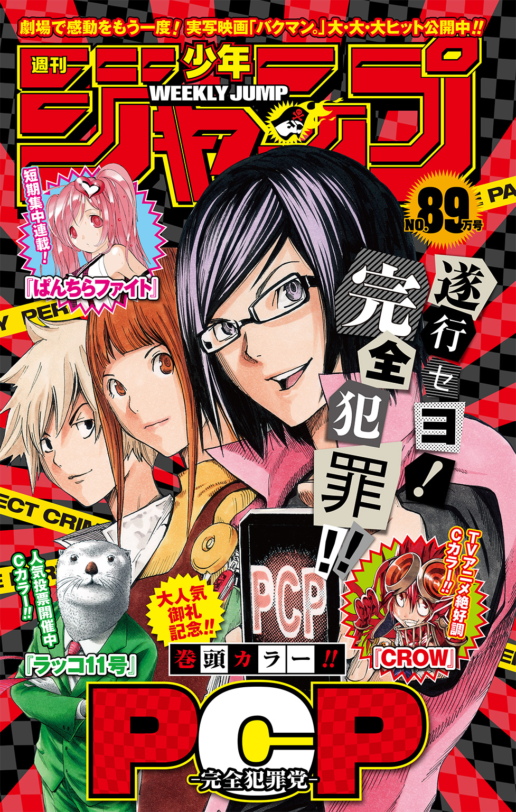
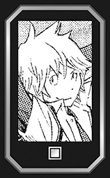

| PCP―完全犯罪党― 孤島の子供たち | |
| 亜城木夢叶 & 初野晴 | |
この本は縦書きでレイアウトされています。
また、ご覧になる機種により、表示の差が認められることがあります。

大学を卒業して働きながら念願の小説家デビューを果たしたわたしは、長年考えてきた大人と子供の違いについて、ようやくひとつのこたえに行き着くことができた。それは、ある質問をすればいい。
小学生の頃につけていた日記を読み返して気づいたのだ。
日記といっても、女の子らしくない無骨なスクールノートに一行か二行で済ませていたものだけど、小学五年生を過ぎたあたりから行数がだんだん増えて、窒息死しそうなほど面白おかしくなっていく。
その大部分に登場するふたりの男の子と、もうひとりのわたしに向かって、こう問いかけたい。
ねえ、タイムマシンがあったら、行きたいのは過去か未来かどっち？
きっと、あの頃のわたしたち――子供なら目を輝かせてこう叫ぶだろう。
ぜったい未来！
本書に収録している物語はどれも日記にもとづいている。
わたしはどちらかというと活発なタイプではなく、外で遊ぶよりは、本を読んだり音楽を聴いたり部屋にこもって静かになにかをしているほうが好きだった。一方ふたりの男の子は無邪気な悪だくみや、ひと知れず小さな犯罪（！）を行うことに血道をあげていて、彼らが起こす騒動にわたしは度々巻きこまれることになる。
できるだけ記憶を正確に掘り起こして書くよう心がけるが、これは、あくまでわたしの小説作品だ。自己正当化のために多少歪曲したり、話を面白くするために肉づけしている部分があっても許してほしい。
なお、ふたりの男の子がどういう大人になったのか、いまだわたしのそばにいるのかは、内緒にしておく。
それは本書を読み終えた読者の無限の想像力にまかせたい。
ただ、ここではっきりいえることがある。
彼らは出会ってから一度たりとも、わたしの成長の邪魔をしたり、足を引っ張るような真似はしなかった。
CHARACTER
道本真 どうもとマコト
数年前に亜城木小学校に天候してきた男子。

徳長実 とくながミノル
同級生。合気道道場を営む家のひとり息子。
安之城舞 あんのじょうマイ
わたし。推理小説が大好きなごく普通の女の子。
この作品はフィクションです。実在の人物・団体・事件などには、いっさい関係ありません。
待っているのが幸せで楽しい日がある
待っているのが不幸せで苦しい日がある
小さな羊飼いは羊に向かって問いかける
ぼくはいつ待たずにすむようになるのだろう？
だが羊たちは〈めええ〉と言うだけ
しかたなく小さな羊飼いは自分で自分に答え始める
早く大人になりたいと思いながら
ドビュッシー作曲 谷川俊太郎詩『子供の領分／小さな羊飼い』から抜粋
いまから二年前――わたしが小学三年生のときだ。
クラスに男の子がひとり転校してきた。保護者の付き添いは杖をついたお爺さんだけで、華奢な身体に、繊細で涼しげな目もと、まっすぐな髪の男の子だった。
当時学級委員をしていたわたしは職員室によく通っていて、クラスのみんなより先に先生から紹介を受けた。彼は何度も転校をくり返してきたらしく、そのせいかわからないけど、新しい学校に対する期待や不安というものはいっさい感じられなかった。どうでもいいや、という投げやりな印象さえ、わたしには伝わった。
こんな態度ではすんなり融けこめないだろうし、肩身の狭い思いをしそうだけど、彼はクラスの中で上でもなく下でもない男子のポジションに難なく身を置いた。それはもう、見事というくらいの素早さだった。ようするに目立とうとせず、口数もすくないが、話しかければきちんとこたえるし、誘えばはにかんで遊びに加わる――
難しい言葉で表現すれば、協調性は低く、適応能力は高い、といったところだ。
彼はわたしたちのクラスに新しい風は吹きこまなかったけど、どのグループにも波風を立てなかった。こんな風があるんだと驚く。
だから一か月もしないうちに教室の雰囲気になじんだ。どれくらい順応したかというと、転校生？ いたっけ？ そんなことより、そこのきみ、ドッジボールでもやろうぜ、という感じだ。
先生は大きな仕事を成し遂げたかのようにほっとしていた。自分からはなにもしなかったくせに。
話はそれで終わらない。転校生の存在がじょじょに目立たなくなった頃から、ちょっとしたハプニングが教室内で起こるようになった。ハプニングといっても池の水面がいったん静かになったところで変わった形の小石を投げ入れられたような出来事だ。英語にするとイレギュラー、つまり変則的な日常の変化だったと思う。
たとえばこうだ。
ある日、スズメが教室に迷いこんで、授業が中断したことがあった。
ある日、勉強が苦手な安田くんの漢字ドリルが、勝手に終わっていた。
ある日、わたしが飲んだ給食の牛乳が、いつの間にかもとの容量に戻っていた。
ある日、教室の花瓶に、ブロッコリーが飾られていた。
ある日、クラスのいじめっ子たちの縦笛が、全部ピーヒャラ笛に変わっていた。
首を傾げたくなるものから、みんなが喝采するものまで、他愛もないことにふりまわされてきた。だれの仕業なのかはわからない。一度起きて、忘れかけたときに起こるタイミングがまたクセモノだった。つまり仕掛けた何者かは目的のためならいくらでも機会を待つ忍耐力があり、家でお母さんに話したら、「そのゲリラ戦みたいな努力を、すこしでも勉強に向ければいいのにね......」とこぼしていた。
そして現在、わたしは小学五年生になってようやく、あれらはすべて転校生の仕業ではないか？ と疑うようになった。
理由を説明するのは難しい。なぜなら文字通り、説明するための口をガムテープで塞がれているからだ。それどころか両手も背中のところで縛られている。
五年二組、二十六人のクラスメイトが全員そうだった。
みんな教室で立てこもり犯の人質になっていた。頼みの綱の担任の先生もガムテープでぐるぐる巻きにされて、みの虫みたいな状態で教壇の前に転がされている。なにか叫んでいるようだけど、「うごーもごーもがー」としか聞き取れない。
噓のような本当の話だ。
つい十分ほど前、授業中に突然、大きめのサングラスにマスク姿の男が乱入してきた。黒のウインドブレーカーの上下を着ていて、フードをかぶり、かかげた手には包丁のようなものがあった。「何者だっ」と勇ましく声をあげた先生は、そばにあった配膳台でバリケードをつくって応戦したけど、こちらがびっくりするくらい簡単に押し負けてしまい、啞然とする間に、さっきわたしが語った情けない姿に変わり果てた。
突然の出来事にクラスメイトは大騒ぎした。他のクラスの先生が廊下から駆けつけて、先端がＵ字型になった捕具でとり押さえようとしたが、男は向かってくる先生の腕を軽くつかむと、そのまま手首を反らして一回転し、きれいに投げ飛ばしてしまった。粗暴な感じはいっさいなく、映画のアクションシーンのようなさばき方で思わず見とれたほどだ。あのＵ字型の捕具はひとりで使っても駄目なことを知り、一部の男子から、すげえ、と声がもれた。
〈学校に不審者が侵入しました。五年二組です。先生の指示に従って速やかにグラウンドまで避難してください〉
緊急の校内放送がくり返し流れる中、男は投げ飛ばした他のクラスの先生を教室から閉め出し、落ち着いた物腰で扉の鍵をカチャリとかけた。教室の扉は引き戸で、つまみをひねって鍵をかけるタイプだ。廊下では「え？」と戸惑い慌てる声、つづいて「開けなさい、開けなさい」と扉を激しく叩く音が響く。
サングラスにマスク姿の男は体育の先生みたいにぱんぱんと手を叩き、そこではじめてわたしたちを正面から見すえた。
「さあ、みんな、いまからいうことをよく聞きなさい。このクラスには班が全部で五つあるだろう。班長は前に出てくるように」
不審者と思えないほど威厳と貫禄のある声だった。男は紺のバッグを開け、機械的に集まった班長たちに新品のガムテープを一巻きずつ手渡していく。うっかりしてしまうとガムテープがご褒美のバームクーヘンに見えてしまう光景だ。
「これを十センチくらいにちぎって班員の口を塞いでいくんだ。ついでに両手も背中にまわした状態で巻きつけるのを忘れないように。いいか、口と両手だぞ。痛くしちゃ駄目だからな」
あまりに堂々とした指示だったので、班長たちはいわれた通りの作業をすぐにはじめ、わたしたちもおとなしく従った。作業を終えた班長たちは順番に、今度は男の手によってガムテープで拘束されていく。
かくして人質が二十七人ぶん出来上がり、教室は占拠された。
「あー......、あー......」
遠くからマイクテストの声が聞こえた。グラウンドの方向だった。
「あー......、あー......、五年二組はどうした？ ......ひとりもこないじゃないか」
神経質そうな拡声器の声が届く。
男は悠然と腕組みしながら、グラウンド側の窓に近づいていった。口をガムテープで塞がれたわたしたちも、転ばないよう注意して、ぞろぞろとあとをついていく。
みんなで顔を寄せ合って窓の外の光景を眺めた。グラウンドでは全校生徒が避難を終えて体育座りをしていた。指示を与える先生の他に、保護者の姿まである。
今日は不審者侵入を想定した避難訓練が行われる日だった。
拡声器を持った教頭先生と、まだ校舎にいるわたしたちの視線が合う。教頭先生はぽかんとした。目が点になるという表現はたとえ話じゃなかった。
どういうこと？
男の胸にはゼッケンがあり、「はんにん」と一年生が見てもわかるよう太いマジックで書かれている。当然わたしたちは男が教室に侵入してきたときからゼッケンを見ているし、それがわかって大騒ぎを演じたわけだし、包丁も模造刀であることを知っている。
クラスメイトがひとり、男の隣に立っていた。
髪の毛がさらさらと流れ、どんなに運動しても汗なんてかかなそうな澄ました横顔。着古しに見える半袖のシャツは、洗ってアイロンをかけたばかりのような清潔感があって、色落ちしたデニムのジーンズがよく似合っている。
再び同じクラス、同じ班になった例の転校生だった。
クラスメイトの視線がグラウンドに注がれる間、彼――道本真の両手は自由になっていた。どんな方法を使ったのかはわからない。彼はガムテープを口からすこしはがすと、男に向かってぽつりとつぶやいた。
「やりすぎだっての」
「......ごめんな。つい、本気出しちゃったんだ」
男は困ったように頭をかき、マスクの下でため息を吐いていた。
「で、今日の避難訓練はそれからどうなったの？」
お母さんが夕食のご飯の盛りつけをしながら聞いてきた。ふたりで囲むキッチンテーブルには献立のハンバーグ、いんげんのソテー、オクラとトマトのサラダ、豆腐とワカメの味噌汁が並んでいる。嫌いなものがさりげなく交ざっているけど、いつものことだから気にしない。というか、なかなかのご馳走だった。
「うーん......」わたしは耳もとにかかる髪をかきあげて、あの事件の顚末をどう話せばいいのか迷う。「なんかもう、混乱してきた」
朝食と夕食は必ずお母さんと食べるようにしている。わたしの家、安之城家のルールといっていい。食卓は親が子供にいろいろなことを教える場所というのが理由らしいけど、正面きって教えられたためしはない。
お母さんは保護者向けのプリントを手にした。事前に学校から配られたもので、避難訓練の実施要項がまとめられている。今年は警察のひとの代わりに防犯協会の理事が参加し、不審者役として公民館の職員が協力していた。
「そんな面白そうなイベントなら、仕事休んで行けばよかったなあ......」
口につけた味噌汁をぶっと吹き出しそうになる。
「あら。服を白い粉だらけにして帰ってきたじゃない。お母さんが子供の頃、よくそんなオチになるコントバラエティ番組があったのよ。懐かしいなあ」
「こっちの身になってよ」
わたしはいんげんのソテーに箸を伸ばす。お母さんがいっていた「白い粉」というのは、噴射した消火器の粉のことだ。本気を出した不審者役の男に、見学に来ていた保護者たちも本気を出して子供たちの救出にかかった。それに巻きこまれた身になってほしい。
「舞は怖かったの？」
お母さんがニコニコして聞いてくるので、わたしは箸の先を舐めてこたえる。
「まあ、ちょっと......」
「そう。舞が怖い思いをして、すこしでも世の中に怖いひとがいるとわかればプラスになったんでしょうね」
実の親がいう台詞とは思えない。それならばと、お母さんを心配させたくて、切り札を出すことにした。「その男のひと、ニセモノだったんだから」
「訓練なら普通ニセモノでしょう？」
「違う、違う。もともと不審者役をするはずだったひとが、学校のトイレの個室で縛られた状態で見つかったの！ 終わったあとで大騒ぎになったんだよ？」
お母さんは瞬きをくり返していた。「......あら。だったら大事件ね」
おかわりはどう、という台詞と同じくらいの軽い口調だ。なんだかくやしい。現にわたしはこうして無事帰ってきているし、今日の事件がニュースで報じられることはたぶんない。
ハンバーグを箸で割って口に運んだ。我が家のハンバーグはたまねぎを炒めずに生のまま混ぜて焼くから、シャキシャキと歯ごたえがあってとても美味しい。目をつぶったまま舌の上で堪能する。
「お母さん。そのニセモノ、どうなったと思う？」
「袋叩きにされて、さらし者にでもなったの？」
そのバイオレンスな発想を分けてほしい。「ううん」と首を横にふった。
「じゃあ、窓から飛び降りて逃げた？」
「教室は三階だよ。しかも窓の外はグラウンドで、みんな見てたんだから」
「逃げられるとしたら......廊下からしかないじゃない」
「廊下には先生が駆けつけていたし、教室の扉の鍵はニセモノが自分でかけたの」
「先生たちなら廊下側から開けることができたでしょ？ ほら、マスターキーとかで」
わたしは手を横にふって、「できない事情があったんだな、それが」
「つまり教室の中からでしか、鍵の開け閉めができなかったの？」
「うん」
「ニセモノは自ら袋のネズミになったってこと？」
「窮鼠猫を嚙む、ただのネズミではない」本で覚えたばかりの俚諺をさっそく使ってみる。
「......ふうん」
お母さんが素直に驚いてくれたので、わたしは気をよくして箸を動かした。
「もう、びっくりな展開を迎えちゃったわけ」
周囲を完全に包囲されたニセモノがどうなったのかは、まだ教えてあげない。早めに食べておきたいオクラとトマトのサラダにさっさととりかかる。オクラのネバネバとまわりの細かい毛が苦手でしようがないのだ。
「......ところで道本くんだったかしら。その子と不審者役の男のやり取りを舞はだれかに話したの？」
お母さんがたずねてきたので、再び首を横にふった。いってもだれも信じてくれないだろうし、あのふたりの奇妙なささやき声を耳にできたのは、偶然そばにいたわたしだけの気がする。
「案外びっくりな展開に一役買っているのは、その子かもしれないわね」
「どうして」
頰張りながらしゃべったので口のところを指されてしまう。慌てて嚙んで飲みこんだ。
「話の結末を聞いてからじゃないとわからないけど......」とお母さんは上を向き、人差し指を顎のところにあててつづける。「仮に不審者役の男が逃走できたとしたら、協力できるのは両手が自由になった道本くんしかいないわけだし」
よく話を聞いているなあ、と感心した。
業を煮やした保護者たちが教室に乱入して、消火器の粉まみれになりながらみんなと教室から逃げたとき、道本くんが舌打ちとともに吐いた台詞を思い出す。
――大人と組むのはこりごりだ。
教室の扉の鍵を中から開けたとしたら道本くんだ。ただしそれは保護者たちが救出に入るきっかけをつくったわけで、決してニセモノの逃走を手助けしたわけじゃない。
なにより、あのニセモノは......
わたしは避難訓練の出来事を、もうすこしくわしくお母さんに話して聞かせることにした。
五年二組の教室が占拠されて、窓から見えるグラウンドの光景もまた、異様な雰囲気をかもし出していた。
整列していた生徒も、先生も、参観している保護者も、最初はだれも声を出さずにぽかんと五年二組の教室を見上げていた。やがてザワザワとしたつぶやきが打ち寄せる波のように大きくなっていき、「すごーい、なにあれ」と低学年の生徒のはしゃぐ声や、「ゼッケンをしているから問題ないですよね？」と戸惑う先生の声とか、「ずいぶん本格的だぞ」としきりに感心する保護者の声が発せられた。
恰幅がよくてスーツをびしっと着たおじさんが教頭先生につめ寄っていた。偉そうな態度から、防犯協会の理事に思えた。話し声がこっちまで伝わってくる。
「中断しなくていいのか？」
「いやいやいや、ま、待ってください。あれはなにかの間違いなんです」
教頭先生は避難訓練の指導をつづけながら、一部の先生に校舎へ向かうよう指示した。
一方で五年二組の教室の扉は、前も後ろもガタガタと揺れている。
「開けなさい、開けなさい」
「岡村さんっ、いったいどうされたんですか？」
不審者役の男の名前は、岡村さんだということが判明した。その岡村さんはいま、みの虫みたいに横たわる先生の額に「肉」という文字をチョークで書いている。ジャンプ・コミックスを読んだことのあるわたしならわかるけど、他のクラスメイトには通じないんじゃないか？ せめて左目の下に傷を描いて、麦わらの一味の船長にしてあげないと。
わたしたちは教壇の前にかたまり、視線を左右にめぐらせた。この避難訓練にはなにか大事なものが欠けている気がした。危機感がいまひとつ湧かないのはそのせいだけど、そのなにかがすぐに思い浮かばない。
不審者役の男はまったく動じず、でんと構えている。拘束は無理やりじゃなかったし、持っているのは模造刀だし、こちらは乱暴なふるまいを受けていない。むしろ先生が面白い形でとっちめられて、宿題忘れのペナルティで給食を半分に減らされた男子たちが溜飲を下げているほどだ。
（ねえねえ、これ......どういうことなの？）
（......まだ中止になっていないし......）
（訓練......ということでいいんだよね？）
みんなでうなずき合い、そのあやふやな結論を咀嚼もせずに丸吞みする。ガムテープのおかげでむやみに声を出せないことは、かえってわたしたちを安心させた。パニックになりにくいことを身をもって知る。
なによりクラスには、頼りになる男子がひとりいたのだ。
その男子は騒動を最初からさめた目つきで眺めていて、わたしたちの盾になる形で最前列に立っている。徳長実。中肉中背のボサボサ頭で、ひ弱そうだけど、合気道道場を営む家のひとり息子だ。高校生相手に喧嘩で勝ったという逸話を持っているが、本人はいたって寡黙で争いごとを好まない。いばることも、自らすすんでリーダーシップを取ることもない。かたい殻を身にまとったような性格は、『ルパン三世』というアニメに出てくる石川五ェ門が子供になったような感じだ。
彼なら、手を縛られていようが、万が一のときはなんとかしてくれる、という無責任な期待があった。本人にとっては迷惑このうえないだろうけど。
ふと道本くんの姿が目に映った。いつの間にかクラスメイトの後ろのほうに交ざっていて、ガムテープが元通りになっている。
そういえばあまり友だちとつるまない道本くんが、徳長くんと一緒に帰るときがあることを思い出した。そのとき道本くんは、徳長くんのことを「ロデム」と小声で呼んでいた。ギリシア神話風の格好いいあだ名に聞こえたけど、どんな意味があるんだろう？
教室の前と後ろの扉が苛立たしげに、どんどん、と揺れる。あ、忘れていた。
「あー、けー、なー、さー、い！」
「合流なら、まだ間に合いますからっ」
クラスの保護者たちが廊下に駆けつける気配がして、動物が吠えたような声が加わった。グラウンドにいた先生たちよりも早い到着に驚く。親ってすごいんだなあ。
「タカヒコちゃん、タカヒコちゃん、ママよ。ママに無事だといって」
「エミ、訓練だろ、これは訓練だろ？ お父さんだけには内緒で教えてくれるよなっ」
名指しされた孝彦くんと絵美ちゃんが恥ずかしそうにうつむいている。かわいそうに、とみんなが思った。
不審者役の男は黒板の前に立ち、ぱんと手を叩いた。わたしたちの視線が集中する。男はこくりとうなずくと、チョークを使って大きな文字を書いた。
〈トラブルは生きた勉強のチャンスです〉
黒板とチョークなのに達筆だった。これもそうですか？ とガムテープで塞がれた口を突き出したくなる。
窓の外を見た。なんと、グラウンドではわたしたちを放って避難訓練が継続されていた。防犯協会の理事が校舎をしきりに気にしながら、壊れたロボットみたいなぎこちない動作で危険回避の方法を教えている。
廊下では相変わらず、保護者たちの声が騒がしい。
「責任者はだれだ、だれだ、だれだ！」
「私です、私です！」
教頭先生がグラウンドから慌ててやってきた様子で、いまにも倒れそうなほど息切れしていた。つるし上げという言葉は、これからはじまる事態のことをいうのかもしれない。
「いったい教室でなにが起きているんだ？」
「で、ですから、これはなにかの間違いなんです」そのいい方は、懇願に近かった。
「間違いだと？ じゃあ、早く鍵で開けてくれ」
「もちろんそうします」
ジャラ、という鍵の金属音がして、教室の前と後ろの扉を開けようとする気配が伝わった。わたしには、それは無理のような気がした。案の定、「......開きません」と教頭先生の申し訳なさそうな声が届く。
「――開かない？」
「鍵穴の内部に、なにかが詰まっているようなんです」
ほら、とわたしは思った。
「どういうことだ？」
「ここは小学校ですから。鍵穴があると、元気のいい児童がいろいろ詰めちゃうわけでして......。家でもこういうことってありませんか？」
呻く声がした。たぶん保護者だ。
「おい、確か半年前も、学校に不審者の侵入を許したんだよな？」
「で、ですから、こうして避難訓練を......」
「これが訓練だと？ 警報ベルが全然機能していなかったじゃないかっ」
耳をそばだてて、あ、と気づいた。そうだ。この避難訓練に欠けているもの――ずっと警報ベルが鳴らなかったのだ。生理的にひとを不安にさせる、あのとても嫌な音がいっさいしなかった。だからみんな、妙に落ち着いていられる。
「そ、それはいま調べさせているんです」扉の向こうで教頭先生がしどろもどろにこたえていた。いつも借金取りに追われているような青白い顔と、薄い頭髪が目に浮かんでしまう。「今朝、スイッチを入れるよう指示したのに、お、おかしいんです」
「なに？ ということは、普段は切っているのか」
「――え」
「切っているんだな。業務に支障をきたすから、切っているんだな」
「じ、児童の元気がよすぎて、誤って発報してしまうので......」
「どれだけ児童の元気がいいんだ！ ふざけるな。教師ならスイッチを切る前に、その問題を解決する姿勢を見せたらどうなんだっ」
「この際いいますけどね、半年前の不審者の正体は生徒の父兄なんですよ。授業中の児童を勝手に連れ出す真似なんてするからっ」
どっちもどっちだ、とみんなで頭を垂れ合う。驚愕、責任のなすり合いが教室の向こうで演じられて、なんだかもう、この小学校で生きていくのが嫌になった。
ぶほっ、とお母さんが食後のお茶を噴き出しそうになる。
「え。どのへんが笑いのツボだったの？」
「......この小学校で生きていくのが嫌になったくだり」
わたしは温めに淹れてもらったお茶をちびちびとすすって、「だって、しようがないじゃない」と唇をとがらせる。
お母さんは湯飲みを両手で包みこんで、息を吐くようにいった。「授業中に児童の親が乱入してくるっていう話は聞いたことあるけど、実際に舞の学校であったんだ」
「二年生のクラスみたいだけど、それってモンペ？」
「モンペって、モンスターペアレントのこと？」
「うん」モンスターペアレントとは、学校や先生に対し、自己中心ともいえる理不尽な要求をする親のことだ。テレビ番組でよく耳にする。「なんか、いまどき流行っているみたいだし」
「いまどきって限定するのは、ちょっと違うかなあ。お母さんが子供の頃は、モンペって言葉はなかったけど、似たような親はたくさんいたわよ。いまよりもっとひどいかも」
「え。噓だあ」
「親の要求が常識の範囲外にあるときに、モンスターペアレントっていうんでしょ？ 昔は自分の子供が悪いことをしたとき、揉み消しに走る親がたくさんいたの。いまと違って告発するネットがなかったから、そういうことができたのよ。昔の教育委員会も一般市民の声からかけ離れた存在で隠蔽の一役を買っていたし、現場の偏向教師の防波堤になっていたし......。昔はよかった、という大人は全員前に出てこい、って感じよ。あ、ごめん。舞にはこういう話は早かったね」
モンペがかわいく思える仰天発言に、背筋がぞっと冷たくなった。こんな時代でも、ずいぶん過ごしやすくなったんだと実感する。お茶をひと口飲み、黒豆甘納豆に手を伸ばしてたずねた。「お母さんはモンペにならないの？」
「なりたくても難しいわねえ」
うへ、そうなんだ。
「この間、舞のクラスの懇談会にはじめて参加したんだけど、モンペ扱いされるのを恐れて、必要なことまで先生に相談できなくて、どうにもならなくなっている親たちが意外と多いことを知っちゃったのよ。モンペ対策に訴訟費用保険に入る先生もいるようだし」
「ふうん」わたしの理解と想像をはるかに超えた大人の世界の話を聞きながら、どう切り返せばいいのか迷う。頭をフル回転させた結果、「みんな、大変なんだね」とピントの外れた台詞をいってみた。
「みんな、大変なのよ」クスクス笑ったお母さんも黒豆甘納豆に手を伸ばす。「それより舞の話のつづき、早く聞かせて」
話が逸れてしまったことに気づいた。「えっと、どこまで話したんだっけ？」
「舞がお小遣いの減額と、今週の家事当番の交代を自分からいい出したところまで」
「噓つけ」
「......教室の外で、教頭先生と親が動物みたいにののしり合っているところまでかなあ」
身も蓋もないいい方だけど、おおまかはそんな感じだ。
「それでは、話はいよいよ最後の締めに入ります」
見ると、お母さんの目がすこし据わっていた。頰杖をついて傾聴の姿勢を取っている。
「みんなが笑えるイタズラですめばいいものを、生徒を監禁して籠城するという限りなく袋小路に近い道を選んだ男が、どう落とし前をつけたのか興味がある」
わたしはごくっと生唾を吞んだ。
たぶん、その期待にはこたえられると思う。
グラウンドでの避難訓練は、連絡と通報態勢の案内が拡声器で行われていて、終盤に差しかかろうとしていた。
一方、とり残されたわたしたち五年二組の教室は......
「岡村さん、岡村さん、ここはひとつ、冷静になりましょう」
ダンダン、と教室の前と後ろの扉が叩きつけられ、ガタガタガタガタ......と外れそうなほど揺れている。完全な言動不一致状態だった。いまにも蹴破ってきそうな緊迫感があるけど、こっちはこっちでそれどころじゃない。不審者役の男が黒板に書き加えた文字が、新たな波紋を呼んでいたからだ。
【ぜったい言ってはいけない言葉シリーズ】
〈①ブス〉
〈②死ね〉
〈③お父さん、嫌い〉
クラスメイトたちは口をガムテープで塞いだまま顔を見合わせている。①と②はわかるけど、③はちょっと余計な気がするよね、といいたげだ。とくに最前列に立つ徳長くんの目はますますさめたものになっていた。
んっんっと咳払いのように喉を鳴らすクラスメイトがいた。道本くんだ。いつの間にか教室の前の扉のほうに移動して、みんなに紛れて立っている。わたしと目が合うと、心底、不快そうに顔をそむけた。なんなのよ。
廊下の窓では、保護者や先生たちが顔を並べて教室の様子をうかがっていた。
「わ、わかりました」教頭先生のうわずった声がした。「岡村さんはきっと家庭のことで悩んでいるんです」
それはないだろう、と保護者の失笑がもれて、「......この期におよんで、あれがまだ本物の岡村さんだと思っているのか」あきれた父親の声が一段低くなった。
「く、訓練はまだつづいているんです」
テレビの国会答弁で、行き詰まったときのようなトーンに聞こえた。
「そうまでして、緊急時に警報ベルが鳴らなかったことを公にしたくないんだな。鍵穴の不祥事だってそうだ。こうして簡単に籠城できてしまうじゃないか」
「い、いえ、そんなことは」
「喧嘩している場合か。本物だろうがニセモノだろうが、子供たちの無事が優先だろ」
ひさしぶりにまともな大人の台詞を耳にした。......なんてことはまるでなくて、「武器を見つけたぞ。これを使おう」と保護者同士の血走った相談がはじまり、「どうする？ 刑事ドラマみたいに蹴破るか」と物騒な声もつづく。
「だ、駄目です」理性を取り戻した教頭先生の声が割って入った。「ガラスが割れて、中の児童が怪我したらどうするんです」
「緊急事態だから、しょうがないだろう」
「児童の無事が優先じゃなかったんですか」
いろいろ問題はあるけど、いい先生だなあ、としみじみ感じた。
「隣の教室の鍵を見てきたぞ。つまみをまわすサムターン式だった」と別の保護者の声が響き、「ショックに弱いはずだ。力ずくで開けるからみんな手伝え」と教室の前の扉の向こうでひとが集まる気配がした。作戦が丸聞こえですよ、と忠告したい衝動に駆られる。
「準備はいいか。いっせーの、でっ」で鍵がかかっていたはずの扉がガラッと開き、弾みで保護者や先生たちが折り重なって倒れた。出来の悪いショートコントを見ているようで、早く帰りたくなった。実際にもう帰りたそうなクラスメイトが何人かいた。
ため息がした。不審者役の男だった。「おまえたちは危ないから離れていろ」といいたげなしぐさで歩き進んでいく。ひとりで相手をするつもりだ。先生をきれいに投げ飛ばしたくらいだから、うわべだけの威勢に見えない。
「ひ、怯むな、行け！」
叫ばんばかりの号令とともに、赤い円筒形の物体を持った保護者の父親が飛びこんでくる。不審者役の男が動揺した。男の目の前に突き出されたのは消火器だった。Ｕ字型の捕具をものともしない男でも、こればかりはどうすることもできない。激しい噴射音とともに、白い煙がまわりに立ちこめ、視界が真っ白に染まる。
一箇所にかたまっていたわたしたちを誘導する手があった。次々と入ってきた保護者たちのものだった。彼らの見事な連携で、教室の後ろの扉から全員無事脱出できた。廊下で押し合いへし合いしながらふり返って見ると、五年二組の教室の中はゴキブリ退治のバルサンを焚いたような状態になっていた。「そっちだ、そっちだ」、「追いつめたぞっ」、「どうしてくれようか」などと興奮気味の声が聞こえてくる。悪いひとに見えなかったから、ちょっとだけ心配になった。
さて――
不審者役の男がニセモノと判明したのは、それからだいたい二十分後のことだ。
保護者のひとりが、職員用のトイレの個室でガムテープでぐるぐる巻きにされた本物の岡村さんを発見した。
本物の岡村さんの証言によると、校舎に入って準備をしていた際、サングラスとマスク姿の男にいきなり背後から襲われ、模造刀とゼッケンを奪われて閉じこめられたという。
わたしたちはどうなったかだって？
服についた消火器の白い粉はなかなか取れなかったし、グラウンドに行ったところで避難訓練は終わっていたし、教室の掃除が大変だった。だから帰りが遅くなったのは寄り道したり買い食いしたわけじゃないのだ。ここは強調します。
そういえば帰り道、道本くんと徳長くんの哀愁漂う後ろ姿を見かけた。「恥ずかしくて死にたい......」と徳長くんはだいぶ落ちこんでいた様子で、道本くんが「元気だせって、な？」と彼の肩を叩いていた。
「いろいろ突っこみたいところがあるわね」お母さんが湯飲みを置いて、まぶたを静かに閉じる。「整理券を配りたくなるくらいに......」
「え。そんなに？」と慌ててしまうわたし。
「まず一番大事なところ、肝心の不審者役の男はどこにいっちゃったのよ？」
「ああ、あれね。教室から消えちゃった」
お母さんは虚を突かれた表情になり、ふた呼吸ほどの間を空ける。
「――消えた？」
「うん。消火器で追いつめたところで、それこそ手品みたいにぱっと消えちゃったの」
ぱっというのを、両手を広げて大袈裟にジェスチュアした。白い煙が立ちこめる教室の中で、保護者たちがさんざん捜して見つからなかったのだからしようがない。
お母さんは首を傾げ、「本当なの？」と鼻の頭にしわを寄せる。
「本当よ、本当。あれ以来、もうだれもニセモノの姿を見ていないんだから」
「騒動のどさくさに紛れて、廊下から逃げたんじゃない？」
「廊下にいた先生が、あんなわかりやすいニセモノを見逃すはずがないって」
「......ふうん」お母さんは思案をめぐらせる表情をした。「三階の窓から飛び降りたっていうのもナシよね」
「ないない。グラウンドで大勢見てたっていったじゃん」
「実は消えてないとか」
「どういうこと？」
「いまも教室に潜んだままで、教壇や配膳台の下とか、備品に隠れているってこと」
都市伝説の定番中の定番、「ベッドの下の男」みたいな気味の悪い話だ。明日登校するわたしの身になってほしい。
「さんざん捜したし、そのあとみんなで掃除をしたんだって」
「本当に跡形もなく消えたなら、きつねやたぬきに化かされた感じね」お母さんは吐息をついて、食器の片付けをはじめるために椅子を引く。「まあ......。消えちゃったんなら、しようがないわよねえ」
なんだか拍子抜けする反応だった。食いつきが悪いぞ。「え。もういいの？」
「だって舞たちはそれで納得しているんでしょう？」
「クラスのみんなと協議した結果、ショーだと思うことにしました」わたしはかしこまってこたえる。
「なら、いいじゃないの。それで」
「よくないって」真顔でいった。前言撤回だ。
「ショーは終わったんでしょう？ 舞台の緞帳は下りて、役者は化粧を落として、小道具を片付けて学校から去ったのよ。はい、おしまい」
「いやいやいやいや、終わりにしないで」
テーブルの下で足をバタバタさせると、お母さんはすわり直して唇をとがらせる。
「なんなのよ」
「家事でお忙しいのはわかりますが」わたしはへりくだった。「クラスでパトカーの到着を楽しみに待っていた男子がいたんです。大人になって車の免許が取れたら、パトカーを買って乗りまわしてやる、赤信号でもおれをとめられないぜ、と、すごく馬鹿だけど、いいやつなんです」
「......そういう無謀な夢は大切にしないとね」
「ええ、ええ、そうだと思うんです。結局パトカーは到着しなくて、その男子はがっかりしたんだけど、おまわりさんがひとりもこなかったのはおかしいと思いませんか？」
「事が終わったあとで、だれも一一〇番通報しなかったんだ」
「そういうことになりますよね？」
上目遣いでいうと、お母さんはテーブルの上でひじをついて両手の指を絡めた。
「警報ベルが鳴らなかったことを隠したい先生や、騒ぎを大きくしたくない防犯協会のひとならわかるけど、その場にいた保護者たちや本物の岡村さんまで一一〇番通報しなかったのはおかしい気がするわね」
「でしょう、でしょう」と相槌を入れた。「わたしたちから見ればニセモノはいたに決まっているんだけど、結局消えちゃったわけだし、本当にいたかどうかもわからなくなってきたわけで」そこまでいって首をひねる。「......ごめん、自分でも混乱してきた」
「だれかが怪我したわけじゃないし、教室の備品を壊されたわけでもないし、残されたのは黒板の落書きだけで、警察に通報しようにも、どう説明すればいいのか困ってしまう。いろいろ面倒くさいことが多すぎて、まあいいや、って放り投げた感じ？」
「そう、それ。わたしたちの貴重な体験がなかったことにされようとしています」
「嫌なの？」
「ゆゆしき出来事で、なにかの陰謀だと感じるんです」
お母さんが真顔になり、空白をおいてぷっと笑った。「結局、舞は、そこに食いつくわけだ。いいなあ平和で」
釣りあげたばかりのトラフグのようにわたしが頰を膨らませると、ごめん、ごめん、いまのなし、とお母さんは慌てて顔の前で手をふってつづける。
「じゃあ、先に舞の意見を聞かせて。そもそも不審者役の男が消えたきっかけは、なんだと思っているの？」
「そんなの、わからないよ。でも、さかのぼって考えると、教室の鍵を中から開けられたのは道本くんしかいないわけだし、道本くんならなにか知っている気がする」
「ほお」お母さんは姿勢を正した。「意外と鋭い視点かも。舞の話によく出てくる男の子ね」
含みのある声に、わたしは顔をちょっと赤らめる。「なんだか、道本くんが陰謀に絡んでいる気がして、帰り道につかまえて聞いてみたんです」
「あら、ずいぶん大胆なことをするわね」お母さんはニヤニヤしていた。
「きょ、教室じゃ話せないし、そのときは徳長くんも一緒だったから......」
「へえ、へえ」
ここでペースを乱されてたまるか、と心底思った。こう見えても一生分の勇気をふりしぼったのだ。普通だったらドキドキしたり胸がきゅんと締めつけられるはずのファーストコンタクトが、陰謀に加担していますか？ というワーストコンタクトになったのは大誤算だったけど。
「道本くんはわたしの陰謀論を笑わなかったよ」
「笑うも笑わないも、目の前でこの子はなにをいっているんだって、びっくりしたんじゃない？」
失礼な母親だ。
「『実はぼくもそう思ったんだよ。佐藤さん』っていわれた」
「名前を間違うほど動揺してるじゃないの」
「いいから」
わたしはこのときまでとっておいた、ルーズリーフ紙をお母さんに見せた。紙には道本くんが面白がって書いてくれた文字が並んでいる。道端の机のない状況で彼は「ミノル、背中貸して」と徳長くんの背中にノートを押しつけて書いたのだ。あうんの呼吸というか、道本くんの意図をすぐに理解して従う徳長くんにも驚かされた。
道本くんが書いたのは、ちょっと長めで不思議ななぞなぞだった。
「なにこれ......」のぞきこんだお母さんの目が見開く。
きょうの事件の陰謀を暴け！
十人の旅行者が、ある地方都市のホテルに泊まろうとしました。ところがホテルには、あいにく三階に個室が九室しか空いていませんでした。
そこでホテルのマネージャーは名案を思いつきました。九室にひとりずつで、しかも十人を泊める方法です。
マネージャーは最初の客にこういいました。
「Ａさん、ロビーでしばらくお待ちになってください。のちほどお部屋にご案内しますから」
マネージャーはまず、三〇一号室に二人目の客を入れ、三〇二号室に三人目の客を、三〇三号室には四人目、三〇四号室には五人目、三〇五号室には六人目、三〇六号室には七人目、三〇七号室には八人目、三〇八号室には九人目の客を入れました。
そして、Ａさんのところへもどってきていいました。
「どうか三〇九号室にお入りください」
こうしてめでたく、十人の旅行者に部屋が割りあてられました。
もう一度、読み直して、マネージャーの噓を見抜くことができれば、きょうの事件の陰謀はきっと暴けます。
制限時間。あすの放課後まで。
「小学五年生の分際で、『陰謀』とか『暴く』の漢字を書けちゃうんだ......」お母さんが変なところに興味を持ったので、「塾とか通信教育とか受けていなさそうなのに、なぜか勉強ができる」と説明しておいた。
「お母さんの頃にも、クラスにひとり、そういう憎たらしい生徒がいたわよ」
わたしは唇に指先を当てて思い出す。
「そういえば道本くん、字を書くのがやたら早かったな......」
「それ大事ね。心のノートにメモっておきなさい」
「あの、話を前に進めませんか？」
あら、ごめんね、とお母さんは、ルーズリーフ紙を片手でひらひらさせる。「道本くんって面白いわね。こういう長文のマメさというか、手間を惜しまないところが」
「わたしもそう思う」
「九部屋にひとりずつ、十人を泊める方法があるなんて、びっくりだわ」
「いや、無理だって」
「こういうのは、計算問題が得意な舞が率先して解きなさいよ。二桁×二桁暗算ができるって、普段からドヤ顔で自慢してるじゃない。一から十しか出てこない引き算の応用でしょうに」
「銀河系レベルの応用だと思うんです」
ふたりで肩を落とした。なぜだろう。道本くんのしたり顔が目に浮かんでくる。好奇心を露骨にした視線も思い出した。クラスメイトや大人を煙に巻いているような感じがして、だんだん腹が立ってきた。
お母さんが椅子から立ち上がる気配に思わず顔をあげる。鼻歌を歌いながら食器の洗いものをはじめていた。
「......あの。もしかして、共同戦線から離脱するんですか？」
「お母さん、数字に弱いのよね。だからごめん、パス」
わたしは喉の奥で呻きそうになり、ルーズリーフ紙を取って椅子から立ちあがった。
「もういい、自分でチャレンジする」
お母さんの後ろ姿が、「それがいいわよ」と洗いものの手をとめずにいう。「道本くんが舞に出したなぞなぞなんだし、私が口出ししたら悪いもの」
あ、そうですか、ずいぶん薄情なんですね。「いまから部屋にこもるんで。呼んでもヤドカリみたいに出てこないんでっ」
「あとで舞が好きなヤクルトもどきとパイの実を持っていってあげるわよ。近所のドラッグストアで安売りしていたから、大量に買ってきちゃった」
やったあ、と喜びかけて、慌てて首をふる。「考えすぎて、頭から煙を噴いちゃって、明日朝寝坊したら、全部お母さんのせいだからね」と気を引き締め直して、我ながら無茶苦茶な悪態をついてみた。
「......なんだか、陰謀の正体を知っちゃうのが恐いのよね。あまりに馬鹿らしくて」と洗いものをするお母さんの後ろ姿がつぶやく。
「どういうこと？」
「不審者役をするはずだった岡村さんと、岡村さんのフリをした不審者役の男に、なにか共通点はないかしら？」
意味ありげな台詞にわたしは首をひねって考える。わたしにとっては両方ともおじさんということ以外の共通点はない。
お母さんの声はつづいた。「プリント用紙に岡村さんは公民館の職員って書いてあるけど、それだけで普通は協力するものかしらねえ。まあ、アレなら話は別だろうけど」
アレ？ アレってなんですか。わたしが自分で考えろってことですか？
「それに......」とお母さん。
「それに？」ごくっと唾を吞む。
「岡村さんのフリをした不審者役の男が着ていた、黒のウインドブレーカーが怪しい」
「え」
「あれって重ね着するものなんでしょう？ 私からのヒントはここまで」
あ、そうですか。キッチンにしつこく居座ってやろうとしたけど、「自分でチャレンジするんじゃなかったっけ？」と身も蓋もないことをいわれる前に、わざとらしく足音を立てて自分の部屋に向かうことにした。
いってきまぁす......
翌朝わたしは眠気に襲われながら登校した。
ひさしぶりに勉強以外のことで頭を使ってしまった。昨日の夜は例のなぞなぞが解けた興奮でなかなか寝つけなくて、ふあぁ......と何度もあくびを連発する。あんなに夜更かししたのは大晦日以来だった。
朝から梅雨明けの青空が広がっていて、できたてのアスファルトを強い日差しが皓々と照りかえしている。目がしょぼしょぼしてつらかったけど、放課後までの辛抱だと思った。
学校に近づくにつれて、通学路は蜂の巣箱のような賑やかさになり、黄色い帽子とランドセル姿の一年生がウサギのように駆け抜けていく。わたしにもあんな無邪気な頃がありました。
教室に到着するなり、机にぐだっと突っ伏した。マイ、どうしたの？ とクラスの友だちに心配されてしまう。
朝のショートホームルームがはじまり、教壇に立った先生が出席をとっていくと、道本くんと徳長くんが欠席であることが判明した。
ふたり揃ってお腹を壊したらしい。昼休みまで辛抱強く授業を受けて、ひとり昇降口を出たわたしは、校舎の上に広がる空を見あげて叫んだ。
なんなのよ！
〈道本真と秘密の家編につづく〉
〈ここまでのあらすじ〉
わたしの名前は安之城舞。
聞いて聞いて。
もう、とにかく、同じクラスの道本くんがムカつくんです。
なんていうか......。生まれてはじめて男子にコケにされました。
学校を休もうが、プリントを届ける口実をつくったので、これから道本くんの家を訪問してガツンといってやるつもりです。
昨日の避難訓練の陰謀も暴いてもらうんだからね！
〈以上、全然あらすじになっていませんでした〉
五年二組のルールでは、病気で休んだクラスメイトに連絡帳やプリントを届ける役目は立候補で決めている。手を挙げるひとがいない場合は同じ班の中で決める。
わたしは徳長くんとも同じ班だったので、ジャンケンで負けた男子に、「あのさ。今日はそっちの方向に用事があるから、ついでに行ってきてあげようか？」と軽く申し出てみた。すると「いいの？」と目を思いっきり輝かせてきた。小学五年生となると、おまえ気があるのか、やーいやーい、なんてすぐにはいわれない。
放課後、クラス名簿からメモしたふたりの住所を頼りにわたしは歩いた。
寝不足のほうは、給食を食べてからが辛かったけど、峠を越したおかげか、噓みたいにすっきりしている。
まずは道本くんだ。
通学路をずっと南に下り、六つ目の信号を右折し、すぐ左に折れると、高層マンションが多い一角に出る。そこからまたしばらく歩き、迷子になりそうな入り組んだ路地をなんとか抜けて商店街の看板の前に立った。
風変わりな商店街だった。古びた三階建てのアパートが両側に建ち並び、道路に面した一階部分に商店が入居している。道幅は狭く、そこに商店が野菜や総菜を置いた台を遠慮なく出しているので、さらに狭い。夕ご飯のおかずを買いにきている高齢者と、身体を横にしてやっとすれ違えるほどだ。
アパートの上の階の窓には、洗濯物が無造作に干されていて、たたずまいはまるで映画の『ＡＬＷＡＹＳ 三丁目の夕日』の世界のように見えた。
適度に湿気を帯びた風がやわらかく、焼き鳥や漬けもののにおいが漂っている。わたしが好きな生活のにおいだった。薄暗い印象はあるけど、高齢者の住民の集う共同空間というか、ここにいるひとはみんな仲がよさそうだ。
メモを片手にうろうろしていると、つくだ煮を売っている白い割烹着姿のおばさんに声をかけられた。
「おや。お嬢ちゃん、買いものかい？」
口調に温かみがこもっていたので、甘えて聞いてみることにした。
「お仕事中すみませんが、道をおたずねしてもいいですか？」
「礼儀正しい子だねえ。ああ、いいよ」
わたしはニコニコして、「このあたりに道本さんというお宅はありませんか？」
「道本......」なぜかおばさんの顔に、渋い表情が広がった。なに？ なんなの？
気づくと、ただでさえ狭い道なのに、商店街のひとたちに囲まれた。道本という名字に反応してやってきたようで、焼き鳥屋のおじさんが首を傾げながらおばさんたちとひそひそ話をはじめている。
「......道本ってまさかアレか？ お爺さんと小学生のふたり暮らしの」
「この間、黒ずくめの服の連中が捜していたよねえ」
「そう、そう、あの道本さん」
あの道本さんって、いったいどんな道本さんなんですか？ だれか教えて。
「お嬢ちゃんは、マコトと学校の友だちなの？」
おばさんが神妙な顔をしてたずねてくる。マコトというからには、道本くんの家を知っていると思い、うなずいた。何度も。
集まった商店街のひとたちは道本家へのおみやげをいろいろ持たせてくれた。タッパーに入った総菜や果物などだ。お供えものみたいな感じで戸惑ったけど、こうなったらますます行かなければならない、とわたしは奮起する。
つくだ煮屋のおばさんに教えてもらった道順を歩いた。
商店街を抜けて、十字路を左に曲がると、太鼓橋状に丸く盛りあがった路地に出た。さっきからどう見ても自動車が走れる幅はないし、年季のある電信柱や木造の家が目立つ。ごちゃごちゃしていて、光や風が通りにくく、空気が滞っているけど、この雰囲気は嫌いじゃない。南向きに整列する集合住宅を見慣れたわたしにとっては新鮮な一角だった。
裏通りに入ると既視感のある界隈にたどり着いた。既視感というのは、テレビの世界で時代劇に出てくるような長屋が並んでいる。空がとても広く感じるし、目を凝らしてポジティブに捉えれば、京都の裏路地に似ていなくもない。
それにしても高層マンションが集まる街の近くに、こんな長屋があるなんてびっくりだ。たいした距離は歩いてないけど、遠くまできちゃったんだあ......と錯覚してしまう。
道本という表札を捜した。
あった。
玄関は引き戸で、ねじで締めるような貧弱な鍵がついている。
脱セコム宣言にわたしはカルチャーショックを受けた。
道本くんの家に到着したものの、呼び鈴はないし、どうしようか迷う。
とりあえず荷物を玄関のそばに置き、周囲を見まわした。ほとんどの長屋の家の前に犬小屋があって、雑種がだらしなく寝そべっていた。犬小屋のネームプレートには汚い文字でセコムとかアルソックとか書かれている。脱セコム宣言は撤回だ。
道本くんの家の前にも、セントラルという名前の雑種が、お腹を見せて寝そべっていた。わたしに対して全然ほえないし、食べもののにおいにも過剰に反応しない。しゃがみこんで、お腹をなでなでする。セントラルは気持ちよさそうに身をよじらせた。
なでなで、なでなで。
ご主人さまが散歩につれていってくれないの？ とやさしく声をかけると、
「失礼だな。散歩は一日二回、つれてっているぞ」
いきなり玄関の引き戸がガラッと開き、黒縁の眼鏡をかけた道本くんが顔を出したので、わたしは「うはあ」と尻もちをつきそうになる。
「マコト、どうした？」つづいて徳長くんも顔を出し、ぎょっと見つめてきた。
「あ、あのっ、わ、わわわ、わたし――」最初は顔を真っ赤にさせて慌てたが、やたらつやつやと血色のいいふたりを前にして、憮然とした面持ちになる。「......あれ？ 病人じゃなかったの？ 道本くん、なんで眼鏡をかけてるの？」
「病人？ 眼鏡？ ああ......」道本くんは言葉に詰まる。どう取り繕おうかと迷う姿にもとれた。「確かに具合は悪かったんだ。ついさっきまで、ふたりで折り重なって倒れていたところ。眼鏡は気分転換だ」隅から隅まで突っこみどころ満載だった。
「ズル休みはいけないんだよ」
まっとうなことをいってあげると、道本くんも徳長くんも屈んで頭やお腹を抱えた。ああ、わかった。これから頭やお腹が痛くなるんですね。「いまさら遅いと思うんです」
徳長くんが顔を上げ、露骨に鼻に皺を寄せる。目が血走っていた。
「やってみなければ、わからない、だろうが」
駄目だ。このひとたち、言葉通じません。
セントラルがすごい勢いで尻尾をふっている。もはやわたしの心の支えはこのワンちゃんだけだった。道本くんがやれやれといったしぐさで、前髪をかきあげ、近づいてくる。
「......連絡帳とか持ってきてくれたんだ」
道本くんがセントラルの頭をなで、わたしは警戒しながらこくりとうなずく。彼は「遠いのに、ありがとう」とちょっと照れたように微笑んだ。あ、こんな表情ができるんだ。彼の笑顔を逃がさないうちに、鞄からプリントを取り出す。
「ふ、ふたりぶん......」
「ミノルのぶんも？」
「うん」
「あれは？」と道本くんは玄関のそばに置いたタッパーを親指でさした。
「商店街のひとたちにもらったの」
わたしはタッパーのひとつひとつを手に取り、どの店のひとからもらったのかを説明した。ちゃんとお礼がいえるように......
黙って聞いていた道本くんは、ふうん、と感心して、「ところで、昨日のなぞなぞは解けた？」
本題がきたので、わたしはうなずく。
「そう。じゃあ、こたえ、中で聞かせてよ」
「え」
道本くんは玄関に入ると手招いてきた。「甘いものくらい出すから」そして徳長くんに向かって、「ミノル、濃いめの紅茶でも淹れてあげて」といつもこき使っているような口調で叫んだ。
甘いものと紅茶ですか。簡単には釣られませんよといってしまえ、と心の声はいうが、お腹を裏切ることができずに、遠慮がちについていくわたしが悲しい。
「......牛乳がいいな」ぽつりといった。
「え。なにかいった？」
慌てて首を横にふり、玄関で靴を脱いで道本くんの背中に問いかけてみた。
「あのおかしななぞなぞって、なんなの？」
「古いパズルだよ」
「パズル？」
「ディリクレの部屋割り論法」
なにをいったのかさっぱり聞き取れなかったわたしは、「うん、うん、そうだと思ったんだよね」と知ったかぶりをしておいた。
玄関を入るとすぐ居間になっていた。だれかがおとずれる度に換気されるんですね......
そんなわけで中が丸見えの間取りだけど、不思議と居心地がいい。本物の畳のにおいのせいかもしれない。わたしは、レトロな吊り下げガラス照明や、きれいな木目の丸ちゃぶ台を眺めた。
一方で居間の隅のスチールキャビネットには、基板が剝き出しの機械、新旧入り交じったゲーム機とソフトの山、漫画本がたくさんあって、どこから拾ってきたのか、紐で縛ったままの雑誌も束で置かれている。居間というより、ちょっとした秘密基地という感じだ。
チェック柄のクッションをすすめられたので、そこにすわる。ブリキの戦闘機のおもちゃがそばに転がっていた。うっかり手をついて壊したら大変だ。
「爺ちゃんが趣味でアンティークものばかり集めるんだよ」と道本くんがあぐらをかいていう。
「へえ......」わたしは、はじめて親戚の家に行ったみたいに背筋をしゃんと伸ばした。
「アンティーク、わかる？」
「わかるわよ」
「だよね。ぼくも最近、爺ちゃんから聞いた。つくられて百年経たないとアンティークって呼ばれないんだって。街にあるアンティークのほとんどがニセモノらしいよ」
噓でしょ？ そんなこと、だれも教えてくれない。丸ちゃぶ台を注意深く観察した。いわれてみれば、一本の丸太から切り出した感じで安っぽくない。あ！ コンパスの針で傷つけたような三マスゲームの跡がありますよ。マコトという文字や、学校なんてなくなればいいのに、って露骨に彫ってますよ！ これ、いいんですか？
さっきからてきぱきと動いている徳長くんが、襖で仕切られた台所から缶を持ってきて、道本くんに「これでいい？」とたずねている。
缶の中をのぞいた道本くんが眉をひそめた。「大事なクラスメイトにこんな安いお茶を出したら駄目だ。棚の一番上に、爺ちゃんがお歳暮でもらったマルコポーロがあるから、それで」
たまごボーロ？ いやいやわたし、卒業しましたから。
手をふるわたしをよそに、こくりとうなずいた徳長くんが台所へ戻っていく。電気ケトルの沸騰する音が聞こえて、甲斐甲斐しくカップを用意している気配が伝わった。この家の勝手を知り尽くしているようで、どれだけ入り浸っているのかと想像した。それにしても......。教室で見せる寡黙で冷静なイメージとはだいぶ違う。道本くんのいうことならなんでも聞く、という感じで、妙に活き活きとしていた。
「家のひとはいないの？」ちらちらと視線を動かして、道本くんに聞いてみた。
「爺ちゃんなら、碁会所に行ってるよ」
「ゴカイショ？」
「囲碁を打つところ」
ふうん。両親はどうしているんだろう。二年前に転校してきたとき、保護者はお爺さんだけだった。むやみに詮索したらいけない話題なのかもしれない。
畳の上に黒いスマートフォンが転がっていた。学校では持ちこみが禁止されているけど、わたしもお母さんに持たされている。道本くんのものなのかな......。ストラップが男の子らしいというか、妙に勇ましいものがついていた。防災用品で見たことのある十徳ナイフだ。ずいぶんコンパクトにまとまっていて、小さなノコギリやハサミやペンチなどが飛び出していた。
切れ味の良さそうなそれらを見て、きのうの教室の光景を思い出す。器用に使えば、ガムテープくらい簡単に切断できそうだ。
道本くんがいう。「それ、犯罪マル秘ツールっていうんだ。いろいろ改造して、便利なものをつけている」
「え、え――」
「噓、噓、冗談」
冗談に聞こえません。
甘いにおいと華やかな香りが居間に漂って、わたしの意識はそっちに向く。台所から、徳長くんが三人分の紅茶とマドレーヌを運んできてくれた。紅茶はマグカップにたっぷり入っている。
「爺ちゃんのもらいものだけど」
と道本くんが勧めてくれたので、わたしは遠慮なく紅茶をひと口飲み、マドレーヌにかぶりついた。
「どう？」
「むふぉはむふぁ......（訳・最高です）」
マグカップを唇に寄せる徳長くんが、「なんだ、この女？」といいたげに眉をひそめていたので、わたしは姿勢を正す。それから我慢できなくてマドレーヌを紅茶に浸して食べた。一度試してみたかった食べ方なのだ。
「落ち着いたら、なぞなぞのこたえ合わせでもしようか」
道本くんがわたしを面白そうに眺めていうので、
「いま、やろうよ」と鞄の中からノートの切れ端を出した。ホテルのマネージャーが考えだした、十人の旅行者を、九室にひとりずつ泊める方法のなぞなぞが書かれている。
ホテルの部屋は、三〇一～三〇九号室しかない。
マネージャーはまず、「Ａさん、ロビーでしばらくお待ちになってください。のちほどお部屋にご案内しますから」といい、三〇一号室に二人目の客を入れ、三〇二号室に三人目の客を、三〇三号室には四人目、三〇四号室には五人目、三〇五号室には六人目、三〇六号室には七人目、三〇七号室には八人目、三〇八号室には九人目の客を入れた。そしてＡさんのところへもどってきて、「どうか三〇九号室にお入りください」といったのだ。
冷静に考えればすぐわかる。三〇九号室に秘密があるのだ。
わたしもＡさんと同じように、うっかり騙されるところだった。口の中のマドレーヌを味わいながら飲みこんで、ふたりに説明する。
「だいたい九室にひとりずつ、十人を泊めるのは無理だって。マネージャーの言葉に騙されて、あやうくＡさんは十人目と同室に泊まるところだったのよ」
三〇一号室...... ●（二人目）
三〇二号室...... ●（三人目）
三〇三号室...... ●（四人目）
三〇四号室...... ●（五人目）
三〇五号室...... ●（六人目）
三〇六号室...... ●（七人目）
三〇七号室...... ●（八人目）
三〇八号室...... ●（九人目）
三〇九号室...... ●（十人目）＋Ａさん（一人目）
うん、うん、と道本くんは満足そうに相槌を打つ。
「正解。でも、ぼくが出したなぞなぞはそれで終わりじゃないよ。ここからだ。その調子で昨日の事件の陰謀も暴くことはできる？」
「......たぶん」
「じゃあ聞かせて」
わたしはマグカップの紅茶をひと口飲む。「さっきのなぞなぞに戻るけど、マネージャーの言葉の中で、Ａさんは一人二役をやらされていたってわけ」
「一人二役って言葉を知っているんだ」
「最近ミステリー小説にも手を伸ばすようになりましたから」本好きのわたしが胸を張ってこたえると、道本くんがかすかに笑い、「そっちのほうね。ますますいいよ。つづけて」と穏やかに先を促してくる。
なにかのテストみたいな雰囲気を感じたが、かまわず話を進めることにした。
「昨日の出来事だけど、保護者が教室に乱入して消火剤をまいたでしょ」
「うん」
「そのタイミングで不審者役の男は跡形もなく消えたよね」
「ああ、そうだ」
「たとえば、教室に乱入してきた保護者の数を九人とします」と両手を広げて指を九本立てた。「ところが、わたしたちと一緒に教室から出ていった保護者の数は十人」と残った指を足す。
「それはつまり、どういうこと？」
せっかちだなあと思いつつ、自分の推理を披露してあげた。
「だから一人二役。教室に侵入したときは不審者、教室から出るときは保護者。あのとき、教室のまわりにいた保護者はみーんなグルだったんです！」
道本くんも徳長くんも、おおっ、といわんばかりに目を見開き、パチパチと拍手をする。
どんなもんだ、と鼻息を荒くするが、だんだん素に戻ってきたわたしは小声でふたりにたずねた。「......まじですか？」
もともと不審者役をするはずで、トイレの個室で縛られていた岡村さんは、公民館の職員という理由だけで避難訓練に参加したわけじゃない。
学校の生徒の保護者だからすすんで協力したのだ。そう仮説を立ててしまえば、岡村さんもグルということで、昨日の騒動のつじつまが合う。
合うけれど......
......本当なの？
「ちょっと待って」
道本くんが畳を軋ませて立ち上がった。簞笥の引き出しからホッチキスでとめたプリントを取り出して、丸ちゃぶ台の上に置く。
表紙には「完全■■計画書 51 ぼくたちの学校ジャック」と手書きで書いてあった。■■の部分はマジックで塗り潰したあとだ。なにかの見間違いと思って何度も目をこする。うん、やっぱり学校ジャックと書いてある。寝不足なのかな。
「あの、なんでしょうか、これは？」
「それを読みながら聞いてほしい」
「はあ」いわれた通り、わたしはプリントの一枚目をめくってみる。
「まずは証拠隠滅......じゃなくて、不審者役の男が消えたトリックに焦点を当てようか」
道本くんが順に説明してくれた。
不審者役の男を父親Ａとする。
まず父親Ａが、岡村さんと役割交代するところから計画ははじまる。
父親Ａは、あらかじめ用意していたマスク、サングラス、ウインドブレーカーの上下を着て五年二組の教室に立てこもる。
このとき五年二組の生徒たちに動揺されないよう、避難訓練の延長線上ということで、できるだけ自発的にガムテープで拘束してもらう。
父親Ａは、脅迫や籠城に関するワードはいっさい使わない。むしろ五年二組の生徒たちに支持されるべく、笑いを一生懸命とり、廊下に集まった先生たちを翻弄する。面白ければ面白いほどいい。
保護者たちは、道本くんが教室の扉の鍵を開けるタイミングを知っていた。だから先生たちより先に、五年二組の教室に駆けこむことができた。
消火器の煙が充満した教室で保護者たちは右往左往してみせる。その間に父親Ａはマスク、サングラス、ウインドブレーカーの上下を脱ぎ捨てて、保護者たちに交ざった。混乱の最中なので、いつの間にかひとり増えていることは、他のだれも気づきようがない。もちろん父親Ａが脱ぎ捨てた服やバッグは、教室にいた保護者たちが密かに回収する。
「――で、父親Ａは、何食わぬ顔で五年二組の教室から出たというわけ。わかった？」
道本くんの解説が終わる。目の前に透明なカンニングペーパーでも置いてあって、それを読みあげるような喋り方だった。
じゅうぶんに理解できたわけではなかったが、プリントに書かれている内容とおおまかな流れは一緒だった。今度はわたしの番だ。とりあえず気になったことを遠慮がちにたずねてみる。
「あの......。そもそも昨日の騒動って、先生が一一〇番通報したら、身も蓋もないんじゃないですか？」
「通報させなきゃいいじゃないか」
「通報させない？」
「そういう状況をみんなで協力してつくっていくんだよ。詰め将棋と同じだ。計画書の最後のページを見てごらん」
みんなで......
プリントの最後のページをめくった。
そこには〈一一〇番通報されないための考察〉とあり、こんなことが書いてあった。
以下のＰ条件、Ｃ条件が成立したとき、計画を実行に移すこと。
成立しない場合は、不審者役が入れ替わった形で避難訓練をふだん通り実施する。
Ｐ条件（完全■■まであと二手）
・避難訓練の当日に、警官、および警察関係者が参加していない。
・五年二組の生徒がパニックを起こしていない。女子がひとりでも泣いたら、計画はやめる。
・不審者役は〈はんにん〉ゼッケンを必ず着用。これ大事！
・生徒および先生をデリケートに扱っている。怪我をさせちゃ駄目！
Ｃ条件（完全■■まであと一手）
・ふだんは切っている警報ベルが、当日も鳴らない。
文面のＰとかＣって......
わたしはプリントをいったん閉じ、目頭を指でよくもんだ。
「ええと。この計画書、だれがつくったの？」
「ぼくとミノルに決まっているじゃないか。苦労したんだぞ」
丸ちゃぶ台の向こうで道本くんが胸を張っていい、徳長くんも得意顔でうなずいている。
「じゃあ、昨日の黒幕はあんたたちなわけ？」知らずに鼻息が荒くなった。
「いや。これはあくまでシミュレーションであって、想像の範囲で楽しんでいたんだ」
こともなげに道本くんがこたえるので、わたしはプリント用紙を片手に持ち、ぺしぺしと叩く。「実際に同じようなことが起きていますがっ」
「中身が流出したんだよ」
「本当にごめん」丸ちゃぶ台の上に身を乗り出し、今度は懇願のポーズを取った。「馬鹿なわたしにもわかるように教えてください」
「じゃあ順を追って説明しようか。そうだな......あれはぼくが三年生のときだ」
「三年生、ですか」いったいどこまでさかのぼるんだろう。
「そう。安之城と同じクラスで、教室で不可解なことが起こっていたはずだ。教室にスズメが迷いこんで授業が中断したり、飲んでも減らない牛乳があったり、だれも気づいてくれなかったけど、先生の指し棒が毎日一ミリずつ削れていったり」
最後のいい方は、自分が犯人だと宣言しているようなものだ。
わたしは呆れていう。「......そんな他愛もないイタズラがあったようななかったような。ま、いまとなってはどうでもいいけど」
道本くんは明らかにむっとした表情を返した。
「どうでもよくないし、イタズラでもない。あれをぼくは完全犯罪と呼んでいる」
■■に埋まる単語があっさり判明して、頭の中で転がしてみた。はんざい、ハンザイ、犯罪。「はあ......」
「バレるのはイタズラ。バレないのが完全犯罪だ。バレないための緻密な計画、そこに生じる緊張感、ギリギリ感、ハプニング。完全犯罪の魅力を挙げたらきりがない」
「ようはバレないイタズラなんでしょ？」
「完全犯罪っ」
徳長くんが唾を飛ばす勢いで抗議してきて、まあまあ、落ち着け、と道本くんが彼の肩を叩いている。ここは気を引き締めてかからないと、ふたりのおかしなペースに巻きこまれそうだった。
「完全犯罪。わかりました。そうしましょう！」両手を広げて大袈裟にいい、眉毛を下げ、唇を突き出す格好で素朴な疑問をぶつけてみる。「じゃあ教室ですませていた完全犯罪が、どうしてこんなにスケールが大きくなっちゃったのよ？」
「たとえ話をしようか」と道本くん。
話の腰を折るのは面倒なので、わたしは黙ってうなずくことにした。
「恋と身長測定には背伸びが必要なんだ」
うん、うん、わかる。
「それと同じで、完全犯罪にも背伸びが必要なんだよ」
いや、それはどうかと思う。
「で、めいいっぱい背伸びした結果がこれだ。今回の計画書は大人の協力が前提だったから泣く泣くボツにしたんだけどさ、こっちのミスでコピーが保護者会のメンバーに出まわっちゃったんだよ」
ややこしいことをさらっといってのける道本くんに、あやうく感心しそうになった。
「こ、こっちのミス？ え？ 保護者会って？」
「ミノルがすっかり興奮して、計画書のコピーを自分の部屋の壁に貼っちゃったんだよ。眺めていると、こう......胸がすっとするらしい。その気持ちはぼくにもよくわかる」
徳長くんがもじもじとはにかんでうなずいている。あなたは本当にわたしが知っているクラスメイトなんですか？
道本くんはさらにつづけていった。「それを保護者会代表のミノルのお父さんに見られちゃったのがマズかったんだよなあ。会合の席に持っていって、みんなでまわし読みしたみたいなんだ。うちの息子がこんなくだらないことを考えてたんだよ、みたいなノリで」
わたしの脳裏をよぎるものがあった。
昨日の教室の光景だ。そういえば不審者役の男――父親Ａは、捕具で取り押さえようとした先生をきれいに投げ飛ばした。あれはまさか、まさかまさか......
「も、ももも、もしかして父親Ａの正体って、合気道道場をやってる徳長くんのお父さんですか？」
「そうだよ。保護者会のメンバーが全員結託して、ぼくとミノルの計画書を実行に移したんだ。もちろん、もともと不審者役だった岡村さんを仲間に引きこむことも忘れない」
「噓でしょ？」
「安之城に、ここで、噓ついて、どうするんだ」
嚙んで含めるようにいわれてしまった。どうしよう、わたし。
「もっとも」道本くんはやれやれといったふうに肩をすぼめる。「警報ベルや教室の扉の鍵については、彼らだけじゃどうしようもないから、ぼくが責任をとって細工をしたんだけどね。あのくらい、お手のものだ」
お手のもの？ いまそういった？ いったよね？
「やっぱり一枚嚙んでるじゃないっ」
「あくまでささやかな協力であって、きみがいう黒幕じゃないぞ」
「いや、いやあ」とうとうわたしはたまりかねて叫び、丸ちゃぶ台をひっくり返しそうなほど乱れた。「大の大人が揃って、昨日みたいなことをするわけないじゃん。みんなのお父さんやお母さんだよ？」
道本くんは丸ちゃぶ台を両手で押さえつけ、黒縁眼鏡の奥で瞬きをゆっくりとくり返している。「安之城が自力でたどり着いた推論じゃないか」
確かにそうですけど......。不覚にも涙ぐみそうになった。道本くんはマグカップに唇を寄せてつづける。
「ちゃんとした目的があったんだよ」
「目的？」
「ここからはミノルのお父さんの受け売りになるけど」
「受け売りってなに？」
「他人の意見や知識を、そのまま自分の意見のようにいうことだよ」
わたしはうなずいて先を促す。
「あの騒動と引きかえに、保護者会がこれから得るものを考えればいい。普段切っている警報ベルは元通りになるだろうし、さんざん放置してきた教室の扉の鍵穴問題や、部外者を簡単に侵入させちゃう防犯体制も、見直されると思う」
「え」
「つまり保護者会が得るものは、自分たちの子供の安全で、ずっと前から学校側の対応に不満を持ってたみたいなんだよ。だからそれらを一度に解決できる方法をとった。いいかい？ 計画書の存在、保護者会の思惑、警官が不在の避難訓練、そして優秀なぼくらの協力――まさに天、地、人のタイミングが合って今回は成功したようなものだ」
防犯体制の見直し、子供の安全......
思いがけないことをいわれて、わたしは口を半開きにした。間をおいて、ぽろっと飛び出たのは次の言葉だった。
「天、地、人？ いったい何者ですか、あなた？」
「......ぼく？ 安之城の目の前にいるのは、元気いっぱい夢いっぱいのクラスメイトだよ。もちろん電車に乗るときは子供料金だ」
「ぜったい噓よ、噓っ。背中にチャックがあって、中に大人が入ってるんじゃないの？」
丸ちゃぶ台から身を乗り出し、道本くんを後ろにふり向かせようとすると、このお方に気安く触れるな、といわんばかりに徳長くんが腕を伸ばしてガードしてきた。なに？ なんなの？ あなたたちコンビは。
「ちなみにミノルはぼくの考えに共感してくれて、新学期から一緒にいることが増えたんだ。ぼくと会うまでは『もっとみんなが不幸になればいいのに』と心の中でいつも思っていた危険なやつだったんだぞ」
そんなことがあったよね、と面映ゆそうな表情で徳長くんが頭をかいている。普段はクールな彼に、片想いをしているクラスの女子が気の毒に思えた。
ふたりのペースに乱されっぱなしのわたしは、かき氷を大盛りで食べたあとの反応のように眉間を指で押さえつける。そして、「ごめん、やっぱり納得できない」と語気を強めていった。道本くんの話の中で、どうしてもぬぐえない疑問点があった。もはや喧嘩腰となった口調はとまらない。
「おかしいよ。学校の防犯うんぬんに不満があれば、口でいえばいいじゃん。普通に抗議すればいいじゃん」
我ながらまっとうな意見だと鼻息をふーふー荒くする。いまのわたしは闘牛ちゃんだ。
「口でいえばわかる？ 本当に？」
正闘牛士となった道本くんがわたしを真正面から見すえ、聞き返してきた。
「そのための保護者会でしょ」
「そうかなあ」
「そうかなあ、ってなによ？」
「だってさ......」彼はこみあげる微笑をこらえていた。
「だって、ってなによ！」
「そもそも今回の謎のメインは消失トリックじゃないんだよ。ミステリー小説を読み慣れているひとなら、あの程度は割と簡単に解けちゃうレベルなんだ。本当の謎は真の動機にある。良識を持っていたはずの保護者会メンバーが、なぜあんな暴走といえる形に出たのか？ いったいなにに追いつめられていたのか？」
意外な展開に目を見開いて黙りこむ。
消失トリックが謎のメインじゃないって、どういうこと？
道本くんがニヤニヤして示した真の動機に、わたしは絶句した。
「みんな、だれひとりとして、モンペになりたくなかったから」
昨日のお母さんの話とつながってしまった。
（この間、舞のクラスの懇談会にはじめて参加したんだけど、モンペ扱いされるのを恐れて、必要なことまで先生に相談できなくて、どうにもならなくなっている親たちが意外と多いことを知っちゃったのよ。モンペ対策に訴訟費用保険に入る先生もいるようだし）
（......なんだか、陰謀の正体を知っちゃうのが恐いのよね。あまりに馬鹿らしくて）
赤信号みんなで渡れば恐くない。お母さん、その通りでした。よってわたしはこれから脱力します、と丸ちゃぶ台の上に額をゴンとぶつけて突っ伏した。まぶたを閉じると、目まいのするような眠気が襲ってくる。
「ほら、ほら、見てごらん。これなんて傑作だ」
道本くんの声が耳に届き、目の前に彼のスマートフォンが置かれた。なんだろう。液晶画面になにかが表示されている。わら半紙を正面から撮った構図で、円形の寄せ書きがあった。社会科の授業で習ったことがある。農民たちが一揆の団結を高めるために、だれが首謀者かわからないようにつくったやつ......傘連判状だっけ......
「これは？」
「保護者会メンバーは抜けがけしないよう、こんな感じの署名をつくって一致団結していたんだ。隠し撮りするのは大変だったんだぞ」
「......信じられない」
「そう？ 案外みんな楽しんでいたと思うな。大人の世界って、いろいろストレスが溜まるみたいだからさ。それに」と道本くんは声を一段低くした。「これだけははっきりいえるけど、なんとしてもクラス担任を懲らしめておきたかった」
「懲らしめる？」
ガムテープでぐるぐる巻きにされて、額にいたずら書きをされた先生の姿を思い出した。唯一の被害者といえば被害者だ。
「宿題を忘れたからといって給食を半分に減らすなんて横暴だ。育ちざかりのぼくらをなんだと思っている」
丸ちゃぶ台の向こうで道本くんと徳長くんが本気で怒っている様子に見えた。たぶん、保護者会の面々もそうとう頭にきていたのだろう。
だからといって......
モンペになりたくない......
ぷっと息がもれ、あはは、と笑ってしまった。
昨日の出来事が頭の中で鮮やかによみがえる。〈トラブルは生きた勉強のチャンスです〉や、〈ぜったい言ってはいけない言葉シリーズ〉は、保護者たちによるわたしたちのための特別授業だったのだ。
眠気がすっかり吹っ飛んだわたしは三個目のマドレーヌを頰張りながら、道本くんの家の居間にある壁かけ時計を見た。針は午後五時をさそうとしている。
会社勤めのお母さんの帰りがだいたい七時過ぎなので、もうすこし居座ってやろうかと思った。
幸い道本くんも徳長くんも、女子のわたしが交ざってもまったく気にならない様子だし、あれこれ詮索もしてこない。わたしがいようがいまいが、おかまいなく自分の時間を過ごしていた。やっぱりクラスの男子とはどこかタイプが違う。
徳長くんは道本くんのそばにいられれば満足といった感じで、頰杖をついてテレビを眺めている。
道本くんはというと、さっきから真剣に読書をしている。自分の世界をしっかり持っていて、なにかに一生懸命熱中しているひとは、それだけで求心力があるのかな......
いやいや、そんなことはなかった。彼が読んでいる本のタイトルは、「ハマる！ デキる！ ヤバいネタが満載！ 電子工作マニア」だった。その集中力を学校の授業に向ければいいのに。
テレビでは夕方の情報番組が放映されていて、スタジオでは、小学生のアンケートで将来社長になりたいという子供は激減している、というフリップボードをコメンテーターがかかげていた。「いまの子供には夢がないですねぇ」とワケ知り顔で喋っている。
そんなふうにいわれても......と悄気ていると、道本くんが本から顔を上げ、テレビに向かって心底馬鹿にした表情を浮かべた。「連中だって子供の頃は、たいした夢を持ったことなさそうなのに」と吐き捨てて再び読書に集中する。
わたしはマドレーヌを飲みこんで、この一風変わったクラスメイトを見つめた。そこには動物園のゾウやキリンを観察するような熱心さがこめられていたのかもしれない。
おとずれた沈黙は意外なところでやぶられた。徳長くんがわたしの視線に気づいた様子で、道本くんの肩をちょんちょんと指でつついている。道本くんが本から顔を離し、こっちを向いた。目と目が正面からかち合ったわたしはとっさに視線を逸らす。
「......マドレーヌ、もうないけど」
なんでそうなるの。慌てて首を横にふって、「学校、ズル休みしちゃ本当に駄目だからね」と男子に嫌われそうな尖り声で念押しした。
道本くんは首をひねり、どうしてわたしに怒られるのか、と釈然としない顔をしている。そりゃそうだ。
「今日だけだよ」
「今日だけ？」
「ひさしぶりに父さんがテレビに出る予定だったから、ミノルにも顔を見せてやろうと思って」
え、え？ どういうこと？ 丸ちゃぶ台の上に身を乗り出した。
「道本くんのお父さんって有名人なの？ タレント？ スポーツ選手？」
わたしが飼い犬ならハッハッと舌を出して尻尾をふっているところだ。
「違うよ」道本くんは、それを見ればわかる、といったしぐさで、床にあった新聞をパサッと投げてよこした。
「あの......。わたしは四コマ漫画専門ですが」
「テレビ番組欄は？」
「あ、それも専門です」
午後二時四十分からの番組が蛍光色のマーカーで囲ってあった。〈国会生中継〉〈衆議院〉〈文部科学委員会〉と難しそうな漢字が並んでいる。毎度ながら理解の範疇を超えていて、わたしはこめかみに指をあてた。窓をガラッと開けて、教えて、池上彰さーん、と叫びたい。
よくわからないんですが、とにかく、すごく偉い立場のひとなんですね？ と目で道本くんにメッセージを送ると、彼は不快そうに眉を動かし、むすっとした表情を返した。
「世の中のお父さんはみんな立派だろうけど、あいつだけは別だ。とにかく自信たっぷりで、ひとを見下して、冗談のひとつもいえなくて、家庭を無茶苦茶にした最低のやつなんだ。いつか、あっといわせてやらなきゃ気が済まない」
はじめは聞き間違いかと思った。
「ごめん、もう一回」
「あいつは敵だ」
かなり端折られたが、どうやら本気でいっているらしい。
お爺さんとふたり暮らしで、転校を何度もくり返してきた道本くんの境遇を想像した。いろいろと立ち入ってはいけない複雑な事情があるのかもしれない。彼の背伸びした言動や、完全犯罪と称するイタズラが、父親に対する反発心から生じたものだと理解できるようになったのは、ずっとあとのことになる。
わたしは素朴な疑問をぽつりともらした。
「......先生の指し棒を一ミリずつ削って、あっといわせられるの？」
道本くんと徳長くんが顔を見合わせる。「これだから女子は」というふうに肩をすくめ合ったので、なんだかムカついた。
「花瓶にブロッコリーを飾って、あっといわせられるんですか！」
「そんなに声を張り上げなくても」
「ピーヒャラ笛でぇ！」
いいかけたところで、道本くんが居間の壁のほうを指さす。ひび割れて穴が開いた部分があった。ひざ立ちしてのぞくと、隣の家の中が見えて、お茶の湯飲みを両手で持つお婆さんと目が合った。壁が薄くて会話が丸聞こえだった。あげくの果てに、「面白いから、もっともっとやって」とジェスチャーを送られてしまい、生き恥をさらしたわたしはうつむく。ここが時代からとり残されたような長屋だということを忘れていた。
おとなしく丸ちゃぶ台の前に戻り、完全犯罪の計画書を手もとに引き寄せた。
表紙に51とナンバリングされているから、もう五十回近く馬鹿なことをくり返してきたことになる。「なぜあなたはエベレストを目指すのか」と問われて、「そこに山があるから」とこたえた登山家がいるらしいけど、彼らの場合はどうなのか。ガッツは認めるが、まだまだ道のりは長そうだ。
そんなわたしの怪訝な顔を、道本くんはおかしそうに眺めている。普通なら立場が逆なのに。
煙にまかれているというか、調子が狂うというか――
完全犯罪の計画を語って聞かせるときの彼の瞳を思い出す。楽しいことはぜったい見逃さない、という意思にあふれていた。離れて暮らす大物のお父さんとは、口だけじゃなく、彼なりの決着を本当につけそうな気がした。
いつかおとずれるその光景を見てみたい、とも思う。
だから徳長くんはそばにいるのかな......
ちょっとうらやましい。
ピコピコピン、とわたしのスマートフォンが鳴ったので慌てて取り上げる。お母さんからＬＩＮＥが届いていて、〈マイ、いまどこ？〉とメッセージが表示されていた。めずらしく会社から早く帰ってきたのだと知り、どうこたえるか悩んだ。
安之城家では週交代で家事当番を決めている。本当はわたしが毎日やってもいいんだけど、お母さんがそれを許さない。
結局〈うわさの道本くんの家。びっくりレポートを待て〉とだけ返信した。今日の経験は帰ってからちゃんと喋らないと伝わらない。道本くんと徳長くんに近づけたことは大きな収穫だったし、この家に到着するまで知らない商店街を歩けたし、やさしそうな大人とあいさつを交わすことができたし、犬とも仲良くできた。
「そろそろ帰るね。マドレーヌと紅茶、ごちそうさま」
徳長くんにもお礼をいった。
「送っていこうか？」道本くんが口を開く。
そんなこと、男子からはじめていわれて戸惑う。「......い、いいよ、べつに」
「じゃあ勝手に尾行するよ」
尾行されるのもはじめてだった。ふたりは立ち上がって身支度をしている。もうどうにでもなれ。
玄関の引き戸を開けると外はまだ明るく、にわかに涼風が吹き渡った。短い飛行機雲に夕日の赤い光が当たって、西の空にオレンジ色の尾を引いている。絵はがきのような光景で、どこかから補助輪つきの自転車が走るガラガラという音が聞こえてきた。夏の到来を予感させる夕暮れだった。
途中から、道本くんと徳長くんの足音がしなくなったのでふり返る。
ふたりは電気屋の前に設置されたビデオカメラの前で変な表情をつくり、モニターに映った自分たちの顔を見比べていた。散歩の途中の老人が、のけぞるように笑う。わたしはきた道をもどり、ふたりの服をつかんで引っ張った。
「ねえ、ねえ、尾行の任務はどうしたの？」
「もう飽きた」
道本くんがとんでもないことをいい、わたしは喉の奥で呻きそうになる。
「知らない街で、か弱い女の子が山賊に襲われたらどうするのよ！」
わたしもとんでもないことを口走り、「......山賊？」と徳長くんに胡乱そうな目を向けられた。
「いや、それは、つい、もののたとえで」
「おれのほうが強い」
俄然やる気を出してくれてほっとする。みんな馬鹿でよかった。道本くんはしぶしぶといった感じで、今度はわたしと肩を並べて歩いてくれた。くやしいけど、なんだかんだいって、このふたりが一緒にいてくれると頼もしい。
西日が三人の足もとに長く伸びた。
「安之城ってさ」ふいに横から道本くんの声が届く。
「なに？」
「もっと、とっつきにくいやつだと思ってた」
「えー」
道本くんにいわれたくないよ、という態度を露骨に示すと、彼は怯むことなく能天気に笑った。「そういうところがいいよなあ、安之城は」というので、「どういうところ？」と神妙な顔をしてたずねると、「実はよくわからないんだ」と返ってきた。なんなのよ。
こぎれいに整えられた路地を歩いて、信号機のない横断歩道を渡る。閑古鳥を大事に飼育していそうなラーメン屋を見つけた。一度でいいから、こういう店に入ってメニューと味に失望したい。
「ぼくって、とっつきにくいわけ？」
さんざん間をおいたあとで道本くんがいう。意外と気にする性格のようだった。自覚症状がまったくなさそうな彼にどう説明しようか迷う。
「うーん。クラスメイトと距離を置いているところとか」
「そんなふうに見える？」
「そのくせ......」
「まだつづくんだ？」
「クラスで浮かないし、どのグループとも適当にうまくやってる」
体育や理科の実験でふたり組になるとき、彼が困っているところを見たことがなかった。
「あのさ。そういうのを、とっつきやすい、っていうんじゃない？」
わたしは首をひねった。思っていることを説明するのは難しい。
五年生となると教室では、人気の度合いをあらわす順序というか、一軍、二軍、三軍みたいな集団がはっきりつくられる。たとえば運動が得意な男子のグループ、華やかで外見に気を遣いはじめる女子のグループ、ゲームや漫画やアニメの話ばかりしているオタクっぽい女子のグループ、地味で目立たない男子のグループなど大小さまざまな集団だ。三軍のグループのうちの何人かは、二軍のグループにいじめられたり、二軍のグループの何人かは、一軍のグループにちょっかいをだされたりする。昨日の出来事で、そんな順序が簡単に吹き飛んでしまったのは驚きだったけど――
飛ばしていた思考を戻し、唇を尖らせてこういった。「なんか、道本くんは、違う」
「どう違うの？」
「うーん......」いいだした責任上、なにかこたえなければならない。
「百歩ゆずって、とっつきにくいんだったらさ」と道本くんがつづける。「なんでぼくの家にひとりでプリントを届けにきたの？」
「そ、それは......」例のなぞなぞのことをいおうとした。
「当てようか？」
「え、え」ふり向いたわたしは焦る。お願いだから変なことはいわないでほしい。
「たぶん、似たもの同士だからだよ」
「え」
「安之城がさっきいったことだけど、だれとでも適当に距離を置いて付き合うってことは、いつだれが離れていっても、最小限のダメージで済むようにしているからじゃないかな」
いまから二年前――クラスに道本くんが転校してきたときのことを思い出した。新しい学校に対する期待や不安というものはいっさい感じられなかった。どうでもいいや、という印象さえ、ありありと伝わった。
あれは......
「もうだれかが自分から離れていくのは嫌だ。本当に嫌だ」呪いの言葉を吐くように道本くんはいう。「ぼくは臆病者だから」
歩きながら瞬きをくり返して道本くんを見た。
彼のことを、ずっと気になっていた理由がようやくわかった。
わたしの家にはお父さんがいない。最近になって自分なりに出した結論だけど、早いうちに身内がいなくなると、考えることが増えたり、ものわかりが変によくなったり、友だち付き合いにいろいろ保険をかけるようになる。わたしがいじめられて、お母さんを心配させるなんてもってのほかだからだ。だからクラスで浮かないよう、どのグループともうまくやれるよう、気を遣っていた。
だれとでもうまくやれる、心を砕くという作業は楽じゃない。たまに肩にのしかかる重みに気づいてしまうときがあって、胸の奥の良心がうずいてしまう。
そうか。わたしは道本くんの後ろに、臆病な自分を見ていたのだ。
徳長くんのほうにも視線をやる。さっきからなにも喋らないし、口を挟もうともしない。わたしと違って彼は沈黙のプレッシャーをまったく感じないタイプのようで、つかず離れずの距離を保って歩いている。
「道本くんと徳長くんって......」
「マコトとミノルでいいよ」道本くんに手でさえぎられた。「安之城っていいにくいし、舌を嚙みそうだから、マイって呼んでいい？」
夕日の中で頰が染まるのを自覚してうなずいた。男子にマイって呼ばれるのも、はじめてだった。
「マイ。いま、なにかいいかけなかった？」
「......なんでもない」
ふうん、と道本くんはズボンの後ろのポケットを探って、「そういえば、昨日の完全犯罪でまだ話してないことがあったんだ」
「なに？」
「ぼくとミノルがタダで保護者会に協力するわけがない」そういって彼は、にやけた顔で、あずき色の封筒をかかげてみせた。
「――お金？」
「まさか。これがほしいから、したくもない無茶をしたんだ」
あずき色の封筒の中には、三つ折りにされた紙が入っていた。なにかの申しこみ書のようだ。
「それは？」
「臨海学校のエントリーシートだよ」
わたしは宙を睨む表情をしてから首を傾げる。
「学校であったっけ、そんなイベント？」
「ぼくらの学校に臨海学校はないって」道本くんが紙を広げながら教えてくれた。「都市伝説化してる噂があってさ、ずっと調べていたんだ」
「トシデンセツ？」
「聞いたことない？ 謎の臨海学校の噂――」
「ないけど」
「そう。主催者は謎で、都内の選ばれた小学生あてに、ある日突然エントリーシートが届くっていうやつ。場所は国内のどこかの離島で、参加した小学生は、夢かまぼろしのような数日間を過ごすことができる。噂話のポイントは、そこで日本一の小学生を決めるゲームが行われるみたいなんだ。勝ち抜いた小学生には、大人になっても使い切れないほどのお小遣い、もとい、ご褒美がもらえる――」
道本くんは、信じる？ というふうに黒縁眼鏡の奥にある目を動かした。
わたしは首を横にふる。何度もふる。とても信じることができない。
そんなわたしを、隣の徳長くんは純粋に不思議がっている様子だった。目の前に本物のエントリーシートがあるのになぜ、といいたげに。
「え。うそ」と紙を受け取ってよく読む。テレビＣＭでよく耳にする大手進学塾の名前が目に飛びこんだ。
塾が主催......。あやしげで透明な都市伝説が、ちょっとだけ色をもった。
道本くんは歩きながら話をすすめた。
「都市伝説の臨海学校は確かに存在したんだよ。表向きは国内大手の学習塾が毎年開催している野外夏期講習で、なぜか離島を貸し切って、三日間の期間でゲームが行われる」
「......三日間のゲーム？」
「うん。ゲームの内容や目的はわからない。三日というからには、地図とコンパスを使ってゴールを目指すようなオリエンテーリング式のテストかもしれない。ただ、ご褒美の噂は本物だ。奨学金をタダでもらえる」
「ショウガクキン？」
「これから進学で必要なお金の一部を、学習塾側が負担してくれると思えばいい」
「へえ......」
「五年生から六年生までの小学生なら、塾生を問わず参加資格があるんだけど、定員が限られていて選考基準がはっきりしない。そこがクセモノだったけど、保護者会のメンバーにコネを持っている親がいたから、こうしてエントリーシートを入手できたんだ。どうやら毎年、塾の選抜チームが優勝をかっさらうらしい。いわば出来レースだよ」
「出来レースってなに？」
「あらかじめ勝者が決められているってこと」
それが本当なら、ずるい、と思った。三日間のゲームを頑張るだけ無駄じゃないか。他の参加者の小学生を馬鹿にしている。
エントリーシートには三人ぶんの申しこみ欄があった。
三人ひと組のチーム戦......！
とっさに顔を上げて道本くんを見た。楽しそうなことはぜったい見逃さないという目、そして不敵な笑みを彼はこぼしている。
「大番狂わせを起こして勝利をぼくらのものにする。学習塾側の秀才たちをコケにする。まだすこし先の話だけど、夏休みがヒマなら協力してほしいな」
夏休み......
いままではひとりっきりの家で、時間を持て余していた夏休みだった。
「協力って？」ぽつりと返した。
「ぼくとミノルの力だけじゃ、たぶん駄目だよ。優秀な女子力がほしい。今日、勇気を出して、ぼくの家まできてくれたきみの力も必要だ」
うつむき加減のままエントリーシートの端をぎゅっとにぎりしめる。
塾の夏期講習という名目なら、たぶんお母さんはオーケーを出してくれる。
奨学金は言葉のニュアンスでしかわからないけど、お金をタダでもらえるのが本当なら、わたしの家はどれだけ助かるんだろう。
いや、そんなことより......。目の端でちらっと道本くんと徳長くん――マコトとミノルをうかがった。ふたりはいまからやる気まんまんだ。
どうしよう。どうしよう。
ああ。もう......
夏休みが楽しみすぎて、頭が追いつかない。
「よく考えてから返事を決めてよ」とマコトがいうので、エントリーシートを元の三つ折りに戻し、「わたしが駄目だったら、他のだれかに頼むの？」と小声でたずねてみた。
「うちの爺ちゃんに体操着と半ズボン姿で参加させるしかないな」
「それだけはやめて」
「じゃあなおさらだ。返事を真剣に考えておいてよ」
たっぷり迷う間をおいてから、「......うん」とこたえた。これくらいの小悪魔ぶりはゆるしてほしい。
道に堂々と建っている郵便ポストの黒い影を踏んで空を見あげた。夕焼けはうっすらとした藍色に染まりかけ、風を読んでいそうな鳥が高く昇っている。ミノルが無言で急かすので、帰りのペースをあげた。
「道本く――」思い切っていい直した。「ねえ、マコト」
「なに？」
「チーム名って決めてあるの？」
「エントリーシートをよく見ているね。さすがマイだ」
申しこみ欄にチーム名の空白があった。わたしが見逃すはずはない。道本くんは声を弾ませていった。
「ＰＣＰでいくつもりだ」
「ぴー、しー、ぴー？」
「英語の頭文字をとったんだよ。そうだな......かわいい、かわいい、子犬たち（Pretty Cute Puppies）っていう意味かな」
なぜか先を急ぐミノルのひざががくっと折れる。
「へえ......」
なかなかセンスのいい、愛着の湧きそうなチーム名だと感心した。いいんじゃない？
このときのわたしはまだ、ＰＣＰが完全犯罪クラブ（Perfect Crime Party）の略だと知る由もなかった。
〈もうすぐ夏休み編につづく〉
こんにちは、安之城舞です。
いまさらといってはなんだけど簡単な自己紹介をするね。
亜城木小学校に通う五年生。身長は百四十二センチちょっとで体重は内緒、スリーサイズについては真っ平らで消滅状態、髪を背中に届くまで伸ばしているから、たまにクラスのやんちゃな男子に引っ張られます。
算数の授業と本を読むことが好き。大の苦手は冷凍のミックスベジタブルで、あれがこの世に存在する理由がわかりません。くじ運は悪くて、席替えで一度も窓際の特等席をゲットできたことはなく、いつも前のほうの微妙な席に座っています
とまあ、どこにでもいる普通の（？）女の子なんですよ。
そんなわたしの日常に、ピシッとひびが入るような出来事が起きました。
みんなに内緒で男子の友だちができたんです。しかもふたり。クラスメイトの目もあるから公然と友だち付き合いしているわけじゃないけど、このふたりはとにかく普通じゃない。たとえば困ったことがあってふたりに相談すると、想像のはるか斜め上のこたえを提示するのだ。わたしが築きあげた常識や価値観というものがいっさい通用しない。
こんなことがあった。一学期最後の日の道徳の授業のときだ。夏休みを前に、「狭い歩道を歩いていたら、前方から杖をついたひとが歩いてきました。隣は交通量の多い道路です。あなただったらどうしますか？」という議題が出た。まず最初に自分の意見を書き、班ごとに話し合ってまとめ、最後に発表する流れだ。
わたしは自分のノートに〈早めによけて、道をゆずる〉、〈こんにちは、とあいさつをする〉とまで書いて、なにを足そうか頭をひねっていた。正解であることは間違いないだろうけど、他の班からも似たこたえが出る。現にまわりでは話し合いが過熱していて、〈荷物を持ってあげる〉とか〈行き先をたずねて、安全なところまで案内する〉などとバリエーションに富んだ意見がいっぱい出ている様子だった。
わたしたちの班も負けられないぞ。
どれどれ、と同じ班で机をくっつけ合う徳長実――ミノルのノートをのぞいてみる。
〈その杖をついたひとは、なぜ危険で狭い歩道を選んで歩かなければならないのか。歩きかたや、服装をぎんみしたうえ、杖の使われぐあいを調べる必要がある。なぜならば、実はなんらかの目的のため、あしが不自由なふりをしている可能性も捨てきれないからだ〉
うはあ、とのけぞりそうになった。最初に見たのがわたしで本当によかった。ミノルはふざけてなんかいない。真面目に書いてこうなのだ。これが班の代表として発表されたら、どえらいことになるぞ。救いを求めて、彼の隣にいる道本真――マコトのノートをちらっとのぞいてみる。
〈こっそり見守りたいところだが、とりあえず尾行してみる。その前に、どうして杖をつくようになったのか聞いてみる必要もある〉
ああ、どうしよう、と教室の天井をあおぐ。だれかとめて、このふたり。
マコトは、道徳の授業が心底つまらなそうに、あくびを「ふあぁ」とこぼしている。ここはわたしがふたりのぶんまで頑張らねば......と意気ごんでノートに向かった。そういえば〈杖をついたひと〉というのは記号っぽいな、と思った。そのひとがどうして杖をつくようになったのか、杖がどんな形で何色のものなのかを知ることも必要ではないか？ そもそも助ける側というのが、上からものをいっているようでいやらしい。
おーい。ちょっと待て。ふたりの回答をのぞいたせいで、わたしまでおかしなことを考えるようになっちゃった？ おかしい？ 本当にそうなの？ すぐそばに困ったひとがいるのだから、ばんばん助けてあげればいいわけで、注意深く観察したり尾行するよりよっぽどマシだ。
わたしはノートの端を破り、ちまちまと丸めてマコトに向かって投げる。彼の額に当たり、気づいてくれたので、ふたりの筆談がはじまる。
〈真面目に参加しなさいよ〉
〈してるって〉
〈その回答はなんですか！〉
〈あのさ、このひとは本当に困っているの？〉
〈へ？〉
〈自分の持てる力を使っていきいきと生活しているかもしれないじゃないか〉
シャープペンを持つわたしの手がとまり、目だけでマコトを見る。そんな想像はまったくしていなかった。
〈こんな授業、一秒でも早く終わってほしい〉マコトはノートにそう書いてから、先生のほうをちらりと向いて、〈杖で殴られればいいのに〉
〈なんてことを〉
〈班の話し合いはマイにまかせるよ。その代わり、今日のホームルームのあとで面白いものを見せてあげるから〉
〈面白いもの？〉その言葉に、わたしは敏感に反応する。
〈面白くてかわいいものだけど〉
〈かわいい！〉
〈期待は裏切らないよ〉
なんだろう。マコトもミノルもわたしの期待を裏切ったことはない。
ドキドキしてきた。ようし、頑張るぞ。隣の班から「将来政治家になって道を大きく広げて車のない社会をつくる」という興奮した声が聞こえてきたので、わたしは「うへ」とのけぞる。ここは落ち着いて、いきなり声をかけたらびっくりするかも、というところから考え直してみることにした。
で、期待は裏切られなかった。校舎のあちこちのクラスでホームルームが終わり、朝顔の鉢植え、画板、鍵盤ハーモニカなど、両手にたくさんの学用品や荷物を持った生徒が下校をはじめていた。毎年お馴染みの光景だ。その流れに逆らって、わたしはクラスメイトに気づかれないよう、マコトが指定した場所へと向かう。
真夏がすぐそばまできている感じで、底抜けの青空に巨大な入道雲が真白くそびえ立っている。先生が花壇にホースで水撒きしていて、太陽を背にした方向にうっすらと虹が見えた。
体育館の裏側にある浄化槽と受水槽が並ぶ施設を目指した。そこは地震などの災害時の給水場所でフェンスに囲まれている。鍵の開いた出入口を見つけた。南京錠が壊れたまま放置されているから、だれでも中に入れるようだ。
先に到着したマコトとミノルが、「マイ。こっち、こっち」と手招きしてくる。彼らのあとにつづくと、奥の地面のほうで、小さな生き物がさっと隠れる気配がした。
駆け寄ったわたしの目が見開く。小型犬のチワワだった。白と黒のブチで、煙のように細くやわらかそうな毛が、頭から垂れ下がっている。尻尾を身体の下に巻きこんでプルプルと震えていた。
「やだ、やだ、かわいい」
しゃがみこんだわたしはチワワの頭をなでなでする。全然吠えないし、おとなしい。抱え上げてぎゅっとしたくなったけど、ひどく怯えている様子なので躊躇った。よく見るとリードに繫がった状態で、そのリードの先は浄化槽のパイプに縛られている。
頭上でマコトの声がした。「恒例というか、今年も見事にいたよ」
「いた？」わたしはチワワの頭をなでながら、ふたりを見上げる。
「捨て犬だよ、それ」
「ええええ！」びっくり箱のバネのようにぴょんと立ち上がった。「こんなかわいいワンちゃんを捨てるひとなんているの？」
「相変わらず元気がいいんだね、マイは」マコトは感心とも嘆息ともつかない声をもらして、「保健所に行けばトイプードルやコーギーもごろごろいるよ。チワワみたいな小型犬はガムテープでぐるぐる巻きにされてゴミ収集場に捨てられることもある」
「ひどくない？」
「ひどいと思う」
マコトが首肯し、ミノルもむすりとした表情でうなずくので、わたしは両手で握り拳をつくった。「そうだよね。とうとう学校にも捨てるようになったなんて！」
「いやいや。話をちゃんと聞いてよ。このチワワは学校には捨てられていないって」
わたしはすこし考えるように首を傾げた。それから、こめかみに指をあてる。
「......あの。どういうことでしょうか？」
「毎年この時期になると、学校の女子が捨て犬を拾ってきて共同で飼っているんだ」
飼う？ 学校で？ 共同で？ ミノルが親指で指すほうに顔を向けると、リードが届きそうな場所に餌皿がふたつあり、水とドッグフードが入っていた。
マコトがため息交じりに吐き捨てる。「大人に見つかると保健所に連れていかれるから、必死で自分たちで飼えることを主張しているようなんだよ」
胸が温かくなるエピソードだった。「そうなんだ......」
「ここってさ、先生は近づかないし、業者のひとも年一回しか点検にこないから、ばれにくいんだよ。女子たちは交代で餌と水をやっているようだけど」
「給食の残りとか？」
「そう」
「待って待って」わたしは気にかかる。「毎年っていったよね？」
「一昨年はミニチュアダックスフンド、去年もチワワ。どちらも捨て犬」
「へえ......」ということは、新しい飼い主を見つけたんだ、と想像する。
「ほら、今日から楽しい夏休みがはじまるだろう？」
「うん」
「世間一般の小学生は、家族旅行とか、市民プールとか、花火大会とか、いろいろと忙しくなるじゃないか」
「うん、うん」
「夏休み半ばで、女子たちは犬の存在をすっかり忘れる。忘れるというか、当番制を徹底しないから、だれだれちゃんが世話してくれる......という感じで」
急に陽射しが鋭くなり、額の上で手をかざした。白と黒のブチのチワワも日陰を求めて移動している。リードの長さのせいで限界があるようだ。わたしはごくっと唾を吞む。
「......どうなっちゃうの？」
「一昨年はミニチュアダックスフンドの干物ができていた」
「いや、いやあ」
取り乱したわたしを、落ち着け、といわんばかりにミノルが羽交い締めにする。
マコトがやれやれといったしぐさで、胸の前で腕を組んだ。
「だいたいさ、かくまっているだけで里親になる気がまったくないんだよ。一昨年と去年はぼくが埋葬して掃除もしたんだ。去年は一歩違いだった。さすがに今年はもう見過ごせなくて」
ひどい話に、驚くより先に、その女子たちに対する憤りで髪の毛が逆立ちそうになる。
「もう頭きた」
「いまは目の前のワンちゃんだ」
そうだった。わたしはしゃがみこんで、チワワに「おいでおいで」と手招きする。恐る恐る寄ってきた。無防備で、抱かれるがまま、身体を震わせている。
「こんなかわいいワンちゃん、見過ごしちゃ駄目。えらいよ、マコト」
「そうかな」と彼はミノルと顔を見合わせている。
「ねえ、その女子たちって何年生なの？ 一年生？ 二年生？」
「三年連続だから、三年生以上」至極当然のようにマコトがこたえた。
「あ、そうか」てっきり下級生だと思っていた。「自分たちがしでかしたことに気づいてないの？」
「たぶん気づいていない。夏休みの間に犬は逃げたと思っている」
わたしはチワワを抱いたまま移動して、浄化槽のパイプと繫がったリードの結び目を観察する。今年は逃げられないようにするためか、何重にも固結びされた状態を見て、うわ、と思った。
「きつくいってあげればいいじゃない」
「ぼくが？ あいつらに？」マコトの表情がぐにゃりと歪み、鼻に皺が寄る。「かかわりたくもないね」
あれ、と思った。相手がだれであろうと怯まず、軽くあしらいそうなマコトにも苦手な女子がいるんだ......
マコトがひざを折って、わたしと視線を合わせた。一瞬ドキっとする。
「ものは相談だけど、マイの家で飼えないかな？」
「え」わたしは言葉に窮し、腕の中でつぶらな瞳を向けるチワワを見た。とっさに犬から視線を逸らしてしまい、しどろもどろになりながら、「ペット禁止なんです......。ミドリガメでさえ駄目で......」
「見過ごしちゃ駄目っていわなかった？」
どうしてそんないじわるいうんですか、と涙目になる。
マコトがミノルのほうをちらっとうかがう。ミノルもわたしと同様、首を横にふった。
よく考えれば、犬を毎年拾ってくる女子たちだって、似た気持ちがあったのかもしれない。自分にもワンちゃんを抱く資格がないように思えてうなだれたときだった。身体中の息を吐き尽くすような音がした。マコトのものだった。
「結局ぼくが里親になるのか」
彼はスマートフォンを取り出すと、ストラップの十徳ナイフでリードをすぱっと切断した。そしてわたしからチワワを受け取って立ちあがる。
「よしよし。今日からおまえはとりあえずセコム二号だ」
扱いがすごく慣れていた。仰向けに抱っこされたチワワは、お腹を出し、マコトを当面のボスと認識した様子だ。救われた気がしたわたしは、彼のまわりをうろちょろとまとわりつく。
「牛乳とかあげにいっていい？」
「いいよ」
「散歩も手伝うから！」
「いいよ」
「やった、やった」
夏休みにマコトの家に行く口実ができてうれしくなった。
「回復が早いというか、現金だよな、マイは」
マコトが半ば呆れるようにいい、ミノルもうなずいている。腹減ったなあ、とふたりは帰り支度をはじめた。学校を出るまでチワワをきつそうなシャツの中に隠そうとしていたので、わたしは手提げ袋の中身を全部出して「この中に」といった。
「ぼくたちと一緒に帰るところをクラスメイトに見られたらマズイんじゃないの？」
「今日くらい、だいじょうぶ」
なんていったって明日から夏休みだから！ しばらく教室で会わないもん。
「まあ、念のため、北門から出るか......」
学校には正門の他に、旧校舎時代の名残の北通用門がある。グラウンドを横切った先にある古くて小さな鉄柵門で、生徒はあまり使わない。
「なあ。例の女子たちにさ、ミノルからきつくいってよ」
歩きながらマコトがこぼし、隣のミノルが「おれだって嫌だ」といわんばかりに顔の前で手を横にふる。普段は泰然自若としている彼がここまで意志表示するのはめずらしい。
「いったいだれなの？」手提げ袋の中におとなしくおさまってくれている、チワワを気にしながらたずねた。
「リーダーがやっかいなんだよ。あ、そうだ、マイ。ここはひとつ女子同士、話が通じると思うからさ、ガツンといってくれないかな？」
マコトが両手を合わせて頼んできたので、神妙な顔をつくってこくりとうなずく。
「うん、わかった。ガツンという」
今夜さっそくお母さんに相談だ。理論武装してから立ち向かおうと心に決める。でもそれも新学期になってからだよね、とやや悠長に構えた。
「どうせ臨海学校で会えるから」
「へ？」わたしは立ちどまる。
「五年四組の明知麗香」
その名前を聞いて、思わず後ずさった。「え、うそ。明知さん？」
「そう。あの財閥の令嬢」
「超小学生？」
「そう。デンジャラスクイーン。拾った犬の世話を自分の取り巻きに押しつける張本人」
麗香とは四年生の頃に同じクラスだった。いったいどこの美容院でセットしてくれるのかと疑問の立て巻きロールをなびかせる彼女のまわりには、常に取り巻きの女子が群がっている。他のクラスメイトを上から見下して、嫌味をいったり嫌がらせをしてきたり、彼女とはいい思い出がまったくない。そもそもなぜこんな普通の小学校に通っているのかがわからなかった。
というか、でっかいお屋敷に住んでいるのだから、犬くらい飼えばいいのに......と思う。
「噂をすればなんとやら。麗香だ」
マコトがいい、よほど彼女が苦手なのか、ミノルがわたしたちの手を引いてプール脇の樹木の陰に隠れた。なんでコソコソするのよ、とわたしはふくれっ面をして前方を見やる。
デコランドセルを背負った麗香が取り巻きを連れて北門から帰ろうとしていた。デコシールだけでは飽き足らず、パワーストーンまで貼り付けたランドセルは、巨大なカナブンを彷彿させて、ああ、変わってないなあ、とある意味感動する。
髪型と性格とセンスに問題はあるけれど、大きな瞳、可愛い顔立ち、抜群のスタイルを持つ彼女は、小学生モデルとして活躍中だ。
マコトがおもむろにスマートフォンをかかげる。遠ざかっていく彼女の後ろ姿を撮影しているので、むっとした。「興味あるんだ？」
「テレビ番組の珍百景に送ろうと思って」
「駄目、駄目、それは駄目」
マコトはつまらなそうに唇を尖らせる。「彼女たちも北門から帰るみたいだ」
「どうしてだろうね」
「自分の子分たちとどこかに行くつもりなんじゃない。ほら」
彼が指さす北門に、黒く細長い車が停まっていた。いつの間にかオペラグラスをのぞいているミノルが「......ロールス・ロイス・ファントム。はじめて生で見た」とぽつりとつぶやく。
「なにそれ？」
ミノルがこっちを向き、「都内に庭付き一戸建てが買える車......」
ワンちゃんを置いて、そんな豪華客船みたいな車で遊びに行こうっていうの？
もう許せない。手提げ袋と荷物をマコトに預けたわたしは、拳を振りあげて、「待てーい」と麗香を追いかける。
が、運動会で最後のリレーを走る脚力でも間に合わず、北門に到着した時点で彼女たちを乗せた車が発進した。息を切らし、両手をあげて「こらーっ、とまれぇぇぇいっ」と叫ぶと、いきなり停車した車がバックしてきて、今度はあやうく轢かれそうになる。
後部座席から下りた麗香が、腰を抜かして茫然とする元同級生をじっと見下ろし、「はい」と板チョコを渡してくる。再び彼女を乗せた車は去っていった。
遅れてやってきたマコトとミノルが、「ハーシーだよ、これ」と板チョコを取り上げて三等分する。
死ぬかと思ってドキドキしたわたしは、ようやく我に返った。
「だ、だだだ、だいたいなんで、明知財閥の令嬢がこの学校に通っているのよ？」
「去年、同じクラスじゃなかったっけ？」とマコト。
「知らない知らない」首を横にふる。アスファルトから漂う暑気を冷ますくらいに首を横にふった。「麗香って、自分のこと全然喋らないから」
「受験に失敗......」
事情を知っていそうなミノルが、チョコをかじりながらぼそっとこたえた。
「え」
彼のたどたどしい説明を要約するとこうだ。有名私立小学校受験に備えて、彼女が唯一覚えられた英単語がスレイブ（奴隷）だったという。普段から友だちを奴隷扱いしているのも問題だが、面接官の前で友だちのことをスレイブというどころか、発音が悪くてスゲエブスといったらしい。受験の失敗を覆すために親はコネを最大限に発動したが、そのコネも粉砕するくらいに、面接時の彼女の態度は目に余り、亜城木小学校に流れ着いた。
「うん。平たくいうと、規格外のバカか」
マコトが身も蓋もないことをいい、ミノルはこくこくとうなずいて忠告する。
「でも、双子の兄に気をつけて。やつは天才――」
「双子？」手提げ袋からチワワを抱き抱えたわたしは、「麗香にお兄さんがいるの？」と身を乗り出す。
ああ、と今度はマコトが説明してくれた。
「明知家の双子の兄は有名私立小学校に通っている。寡黙で有能な父親のＤＮＡを受け継いだと一族の間では評判だ」
「じゃ、じゃあ麗香は？」
「元グラビアアイドルで、偏差値三十の母親に似ていると一族の間で落胆されているらしい。脳の養分をすべて兄に吸い取られたような問題児」
「なにがなんだか......」
「問題は、兄の明知正臣も臨海学校にエントリーしているってことだ。主催の学習塾の選抜チームの代表だよ」
ただならぬ夏の熱い予感がして、わたしはごくっと唾を吞む。チワワをぎゅっと抱きしめると、キャンと小さな鳴き声が響いて、ごめんね、ごめんね、と慌てて謝った。
〈嵐の中のふたり編につづく〉
明知正臣はホームステイ先のイギリスから帰国してきたばかりだった。
時差ボケのせいか、身体がすこしだるく、まだ夜の七時過ぎだというのに強烈な睡魔に襲われている。仕方なく二階の自室を出て、一階のキッチンダイニングに行き、コーヒーを自分で淹れて飲むことにした。
リビングのガラス越しにつづく中庭は照明でライトアップされていた。眺めながら熱いブラックを口に含んで考える。
ホームステイに出発する一週間前、教材として父が渡してくれたＤＶＤのひとつに、『かぞくのくに』という北朝鮮に帰化した日系朝鮮人の映画があった。え？ これ、僕が観るの？ という反応は、明知家の長男としてやってはいけない。なにかしら意図があるのだ。映画の中で北朝鮮の諜報員が日本の喫茶店でコーヒーを飲むとき、つい習慣でミルクと砂糖をがばがばと入れてしまうシーンが印象に残った。
こたえ合わせは、空港に突然かかってきた携帯電話で行われた。
（正臣、覚えておけ。本当に美味いコーヒーは、資本主義国家の上流階級しか飲めない）
（......父さん。僕がお世話になるブランソン一家がそうなんですね？）
（ああ。選りすぐりの豆で、淹れ方にこだわっても、違いがわかるのは十パーセントもいないんだ。毎年三千人も誕生するただの東大生に価値はない。おまえはいまからその違いがわかる男になれ）
（......はい。父さんの期待に応えてみせます）
イギリスのイーストボーン在住のブランソン家での一か月間は、紅茶をたらふく飲まされる日々がつづいた。〈マサオミ、どうした？ 不機嫌そうな顔をして。え？ コーヒーが飲みたい？ 美味いコーヒーが飲みたかったらイタリアに行けよ〉とブランソン家の長男にいわれ、ああ、厳格な父にも抜けたところがあったんだとほっとした。
ブラックを半分ほど味わい、色とりどりに輝く、美しい中庭を眺める。
自分が日本にいない間に学校は夏休みを迎えた。
物心ついたときから英才教育を受けてきた正臣にとって、学校の授業はなにを問われてもこたえられるくらい理解していたので退屈だった。日本にも飛び級制度があればいいのにと切実に思う。
リビングのガラスに使用人頭のシゲの顔が映った。正臣はコーヒーカップを持ったままふり返る。
「若さま。仰っていただければ、お淹れしたのに」
「いいよ」
「旦那さまに叱られます」
シゲは父と自分、二代にわたって明知家に奉公する老婦人だ。使用人というより乳母に近く、数すくない相談相手でもあった。
「シゲ」
「なんでしょう」
「帰国して夏休みだなんてせいせいするよ」
「学校がお嫌いなんですか」
「することがないんだ」
「その考えはいけません。退屈が天才を殺します」
「......シゲは厳しいな」
「いえ」
「父さんが僕くらいのとき、なにを勉強していたの？」
「帝王学です」
「あの謎の学問？」
「そんな言い方はいけません。上に立つ者が身に付けていなければならない学問です。学業とリーダーシップ論の他には、英会話、書道、ピアノ、ヴァイオリン、水泳、ありとあらゆる格闘術も。果てしなくつづく硬派の道をのぼっていました」
「昔の漫画の見すぎだよ、シゲも父さんも......」
「温室で育てられた子供は、外の冷たい風に当たるとすぐ心が折れたり、ちょっとなにかにぶつかっただけで、いとも簡単に粉々に砕け散ってしまいます」
「............」
「明知財閥のトップに立っていらっしゃる旦那さまはご立派ですよ」
肉体を限界ギリギリまで追いこむ経験は、代えがたいなにかを得られるのだと前向きに捉えてみることにした。父は妙にひとに好かれるところがある。物事に動じない、大局的な考え方ができる、器が大きい。まだまだ父の背中を見て学ばなければならないことはありそうだった。
夏休みの計画を見直すか、と思った。シゲの助言通り、学校という集団の中で生活している以上、あからさまに孤立するわけにはいかない。日本にはびこる画一性と平等主義に不平を抱く前に、普段の自分の生活を省みるいい機会だ。時間は非常に惜しいが、クラスメイトが集まりそうなイベントに顔を出してみよう。
イベントといえば......。シゲが目の前にいるのを忘れたのかとさえ思えるほどの沈黙を空けてしまった正臣は、顔を上げた。
「明日からの塾の予定は？」
「学習塾の『新鋭会』でございますね。塾長が若さまをお待ちしています」
予定表を受け取った。誘惑の多い夏休みに学習習慣を維持するため、主要教科でびっしり埋まっていた。とはいってもスケジュールに合わせて午前九時から午後九時の間でカリキュラムを自由選択できる。ようは詰めこみを推奨しない。
新鋭会は、講師陣にハイレベルなメンバーを揃え、学びたい者に学びの場を与える理念のもとで設立された老舗進学塾だった。在籍者のほとんどが東大に合格し、卒業生による支援制度が充実している。
特徴として、もともと学力優秀な子供たちが集まる。とくに小四からはじまる中学受験コースには、方程式や因数分解ができる生徒がゴロゴロいて、学校の授業に退屈を覚え、先生に嫌われ、問題児扱いされた神童も中に含まれていた。
半年前、日本における天才の生き辛さを象徴するニュースがあった。実用数学技能検定で、都内に住む小学四年生の男子が、高校三年レベルの準一級に合格したのだ。飛び級制度がない日本で、彼を待ち受けるのは退屈な算数の授業だ。それで孤立したり、いじめに遭う可能性も否定できない。それはまだマシで、高校を卒業する頃に「ただのひと」になってしまうことのほうが怖い。もしアメリカだったら、彼は大学入学を認められ、世の中の未来の役に立つ科学者になれるのかもしれないのに......
新鋭会は「出る杭として打たれようとする子供たち」の駆けこみ寺に近かった。頭のいい子供たちは新鋭会に「集まる」ことに意義を見出す。大半の子供たちが東大まで一緒に進む。小四から大学卒業までの十三年間、同じ天才の悩みを抱え、共に過ごす仲間ができるメリットは大きい。つまり、一生つづく結束が生まれる。
正臣は予定表をかざしていった。「野外夏期講習の案内はこなかった？」
「二泊三日の臨海セミナーでしょうか」
「ああ」
巷で〈謎の臨海学校〉と都市伝説化している催しだ。
「若さまのホームステイ中に届きました」
「いま、見たいな」
「持ってきております」シゲがあずき色の封筒と銀製の小振りのペーパーナイフを差し出した。「申しこみをされたのですか？」
「自分からじゃない。直々指名されたんだ」
正臣は封筒を開封し、ペーパーナイフだけをシゲに返す。
「長旅でお疲れでしょう。今夜はもうお休みになりますか」
正臣は首を横にふった。「いや。ここでセミナーの案内を読んでから、部屋に戻って勉強するよ」就寝は十二時半、起床は朝の七時と決めていた。時差ボケはきついが、一刻も早く体内時計を戻さなければならない。
「あまりご無理なさいませんよう......」とシゲが控えめに一歩下がる。
ふと屋敷が静かなことに気づいた。多忙な父が不在なのはともかく、いつもは騒がしい母と妹の姿を今日は見かけていない。
「そういえば母さんは？」
「奥さまは密航中です」
Ｊ事務所アイドルの追っかけで、地方遠征しているのだと理解した。
「麗香は？」
「麗香お嬢さまは原宿でスカウトされて、スタジオでダンスの特訓中です」
「へえ」
「スカウトしたのは『てんとう虫レコード』というプロダクションだそうで、会費、レッスン代金、手数料で一千万円かかるそうです」
「やめさせろ」
「わかりました」
シゲが携帯電話を取り出して番号を押す。（麗香お嬢さま......若さまの命令です......デビュー間近？......お兄さまが私の邪魔？......ジェラシー？......お嬢さま、またひとつ英単語を覚えられたのですね。シゲはうれしゅう思います......）
麗香のアホぶりには頭を抱えるばかりだった。自分とほぼ同じ遺伝子を持って生まれた双子の妹とは思えない。
うっかり声に出てしまったようだ。電話の向こうから、麗香の叫び声が聞こえる。
（なんですって、お兄さま。まぎれもなく双子の兄妹よ。ＤＨＣ鑑定でもなんでもしてちょうだい！）
軽くめまいがした。シゲが必死になだめている。
（......麗香お嬢さま。ＤＨＣは化粧品会社でしょう。ＤＮＡ鑑定のことですよね？）
（ＤＨＣじゃなきゃ、いや！）
問答の末、苦労して電話を切ったシゲが、「お屋敷に戻るそうです」
「ありがとう。もう下がっていいよ」
正臣はリビングのひとり掛けのソファに身を沈めた。未来の明知家の当主として身を引き締めていかなければならない。
雑念をふり払うように大きく息を吐いてから、封筒から用紙を出した。
新鋭会主催の臨海セミナーか......
案内を読む前に頭の中で整理する。
臨海部に宿舎を設定し、集団生活を通じて受験勉強では学べない大事なことを習得する。
以上が大義名分で、問題はここからだ。
なぜか離島で、三日間の期間ゲームが行われる。
そして塾生全員が参加できるわけではない。
特進コースに在籍している小学五年生のうち、選ばれた三名だけ。
選ぶのはだれか？ 新鋭会のＯＢには、政治家、官僚、経営者、マスコミの大幹部など、日本の舵取りをまかされた指導的立場の人物がいる。どうも彼らが絡んでいるらしい。
だとすれば臨海セミナーは、次世代の指導者を早期育成するための萌芽ともいえる内容かもしれない。
巷で〈謎の臨海学校〉と都市伝説化しているのは、いつからか一般小学生にも参加資格が与えられたからだ。おそらく新鋭会側は内容を口止めしているが、どうしても噂としてもれる。噂を積極的に広めるのは、外交的で気分の波が大きい彼らの特徴だ。無論、知的レベルの低い彼らには、離島で行われたことを正確に説明できない可能性もある。
気になるのは、新鋭会の過去の出場者も口を閉ざしていることだった。引き継ぎくらいあればいいのに、と思ったが、シゲを通じて調べさせたところ、出場者のほぼ全員が臨海セミナー後に体調不良を訴えて塾を休んでいる。
なにがあったんだろうな、いったい......
案内はＡ４用紙で三枚あった。
〈参加塾生向け。部外秘〉資料も混ざっている。正臣はそれをズルと思わない。与えられた情報をどう活かすのか、いまから試されているのだ。
真剣な面持ちで正臣は読み進めていく。
ソファからだんだん自分の腰がずり落ちていくのを実感した。
〈参加塾生向け。部外秘〉資料含め、三枚の用紙を要約すると次の通りだった。
新鋭会主催 夏の臨海セミナー『新・大富豪』
■はじめに
古来の日本には、「侍」や「百姓」という職分などを示す言葉があった。
現代はだれもが平等で、チャンスも均等におとずれると思いこんでいる子供たちに、社会科授業の一環として、新鋭会は本企画を立てた。
■ゲームの基本設定
・国内の安全が確保された離島で、二泊三日の合宿を行う。
・参加は三名ひと組の四チーム。うち一チームが新鋭会選抜。なお離島には、本企画の運営、実行の要となる事務局を設置する。
・それぞれのチームは毎朝九時に新鋭会が用意する競技を行い、四つの職業を選択し、日程を過ごす。つまり職業選択の機会は三回おとずれる。
・その四つの職業とは、「侍」、「百姓」、「職人」、「商人」。
◎侍
不労所得者。なにもしなくても日当二百円／人を最初からもらえる。
事務局が用意したエアコン完備の簡易施設を拠点にでき、遊び放題。
◎百姓
労働階級。みんなの食料を調達。なお離島には、脱穀前の米、野菜がとれる畑が事前に準備される。これら収穫ノルマに加え、事務局が命じた雑用、簡易仮設トイレの清掃等、朝から晩まで汗水たらして働き、ようやく日当九十円／人をもらえる。
◎職人
労働階級。みんなの炊事係。事務局から日替わりのメニューが決められ、それをつくるノルマが与えられる。食糧調達において、米や野菜は百姓から無条件で入手できる。
ノルマを達成して日当百円／人をもらえる。メニューをつくりきれないと減額。
◎商人
四つの職業のうち、グッズの売買、お金の貸し借りが唯一認められている職業。事務局が用意したお菓子、ジュース、花火、遊び道具、生活必需品など、島にあるものならなんでも売買していい。物を売ることによってのみお金を稼ぐ。
値付けは十円単位で自由で、いくらでもお金を稼げる唯一の職業。
〈基本ルールは次の通り〉
①本ゲームにおける優勝は、最終日の午後四時までにもっともお金を貯めたチーム。勝敗が決した時点でゲームは終了。
②三日間通して使用する通貨「円」は、事務局が用意した子供銀行製のものとする。
③職業は朝九時の競技によって決まるが、全員投票で３／４、すなわち九名の賛成があればすぐにでも職業を変更できる。その場合、くじによる抽籤で職業が決められ、仕事を引き継ぐことになる。ノルマはもちろん、投票が行われた当日に稼いだお金もその時点で交換対象なので注意。
④侍チームは一日につき、ひとりだけ辻斬りができる。辻斬りをされた者は、一日退場処分になる（事務局が用意したテントで生活。日当は得られない。商人が辻斬りされた場合、斬られたひとは、その日に稼いだお金が半額になる）。ただし百姓は辻斬りの対象にならない。
⑤窃盗や喧嘩など、道徳上の問題が発生した場合、事務局の速やかな判断で、その当事者をゲーム終了まで強制退場処分とする。離島における行政、立法、司法の役割は事務局が果たす。事務局＝幕府と考えること。
⑥⑤の通り、幕府は教室における先生の役割に近い。参加者がすこしでも快適に、そして安全に生活できるようにするが、侍からの要望にしか応えない。要望があれば侍に相談すること。
⑦以上、自分たちの頭で考えて行動すること。
■特典
優勝チームには、新鋭会基金による特別学費補助制度を受けられる権利を三名分提供する。実質、私学を含む高校までの学費を新鋭会ＯＢが負担する制度である。
※二位以下のチームは、記念に海岸の砂を持ち帰るように。
■攻略のヒント
過去、ある職業に固執し、細々と日程消化にのみ専念したチームが優勝したことがあった。この意味を理解してほしい。
正臣は何度も読み直した。上から読んでも、下から読んでも、裏から透かして読んでも、飛び跳ねながら読んでも、うほほーいと走りまわりながら読んでも、正気の沙汰とは思えない記述が並んでいる。だいじょうぶか、新鋭会......。自分ほどの知性を持つ者なら理解できる。平たくいってしまえば、職業別に日当が決められただけのゲームだが、都合の悪いところはわからないように隠している。頭のいいやつだけ、そこを見抜いてルールを活用する。これは、逃げ場のない離島を使った壮大な社会実験じゃないか。
ホームステイ前に得た情報では、文部科学省が内々に関わっている臨海セミナーのはずだった。内容を知って、さもありなんと思えるところが怖い。国家レベルの長期人材育成計画のデータとして活用するつもりか。官僚と太いパイプを持つ新鋭会の塾長が乗っかりそうな話だ。
また、新鋭会の選抜チームが常に優勝するという噂も耳にしていた。おそらく日程中に事務局からなんらかの便宜が図られるのだろう。いかにも塾長らしい。
正臣は混乱を整理するために深呼吸をした。ゆったりと身体を支えてくれるハイバックソファのおかげで頭の中がクリアになってくる。
ああ......
ようやく記憶がよみがえった。
荒唐無稽に思える臨海セミナーには、確固とした骨格がある。
そういえば昔、明知家教育用のビデオで、シゲと一緒に観たことがあった。
シゲが「ちびっ子たちの表情がどんどん険しくなっていきます。おいたわしい......」と嘆いた映像。
アメリカの『キッド・ネイション』だ。子供たちに重い役割を与えて共同生活をさせるテレビ番組で、高視聴率を常にマークしたが、批判や放送中止を求める声などの物議をかもした。内容は異なるが、これは新鋭会が『キッド・ネイション』の欠点を洗い出して、大幅なアレンジを加えたものに違いない。
大人の手のひらで踊らされているようで気に入らないが、まあいい。
ホームステイ先で学んだイギリスの社会学を実践できる良い機会だ。
つづいて正臣は〈参加塾生向け。部外秘〉資料にあるチームリストに目を通す。全員、小学五年生で統一されているようだった。
チームＡ「新鋭会」
属性〈智力〉
新鋭会の特進コースの選抜組。男子三名。
リーダー名......明知正臣。
チームＢ「ストリート・カンパニー」
属性〈体力〉
前年のダンスサミット小学生の部で優勝。スポーツ大好き。男子三名。
リーダー名......春巻竜一。
チームＣ「ティンカーベル」
属性〈容姿端麗〉
全員、小学生モデルで活躍中。おしゃれなら負けない。女子三名。
リーダー名......明知麗香。
チームＤ「プリティー・キュート・パピーズ」
属性〈野良犬〉
なんの取り柄もない一般小学生。ガンダムの世界でいう量産型ザク。
男子二名＋女子一名。
リーダー名......道本真。
チームＣ「ティンカーベル」に目をとめた正臣はすぐさま携帯電話を取り出して、父の番号を押した。きっちり三コール以内につながる。
（はい、社長秘書の花咲でございます）
（夜分、大変遅く失礼します。明知隆一郎の長男の正臣と申します。至急の用がありまして父と話をしたいのですが、お取り次ぎ願えますか）
（坊ちゃん、ご立派に......。本当に小学生ですか？）
（花咲さん。茶番はいいですから、父に代わってください）
（社長は応接室でＣＭタレントと歓談中です。楽しそうな笑い声が聞こえるでしょう）
（一分以内に代わってくれないと自殺します）
ドタドタと慌ただしく足音が響いて、父が電話に出た。
（正臣か。びっくりするじゃないか）
（手短にいいます。例の臨海セミナーに麗香がエントリーしていますが）
（ああ......）
（父さん、なぜ麗香の参加を認めたんです。なーんにも考えないあっぱっぱーの頭で、僕と張り合いたいだけに決まっているじゃないですか）
（............）
（父さんっ）
（十一歳の娘が本気で駄々をこねると......すさまじいぞ。精根尽き果てるまで駄々をこねられたからな......）
（確かに、その光景は目に浮かびます。しかし）
（真面目な話をしようか）
父の声のトーンが変わり、正臣の背筋が自然に伸びた。
（お願いします）
（結果論でいえば、麗香は事務局側の思惑通りに動いてくれた。ようはさっそくズルをした。明知家の名前をフル活用して、すこしでも自分たちが有利になる情報をほしがった）
（まあ、そうでしょうね）
コネだろうが親の七光りだろうが、使えるものは使えばいい。
（それで麗香があまりに熱心だから情報を与えることにした。優勝を目指すなら、足の速いチームメイトを一名、加えたほうがいいと）
（つまり毎朝九時に行われる職業選択の競技で、足の速さが有利になるということですか）
（それについてはノーコメントだ。ちなみにこの情報はチームＢの「ストリート・カンパニー」にも流している）
運動バカチームか。体力だけで優劣が決まるような小学校では、ヒエラルキーの頂点に立っている連中だ。
（なるほど）
（いまの情報を聞いて、正臣ならどうする？）
（チームメイトの変更はありません。様子見といったところですね）
（なぜ？）
（魂胆が見え見えだからですよ。あの職業と、あの職業に就かせて、場を荒らすつもりでしょう）
（......ふふ。おまえのチームは優勝するかもな）
（かも？ かもではありませんよ。ルールはほぼ理解できました。優勝するに決まっています）
（すべてを知る前に結論を出す。おまえの悪い癖だ）
正臣の目が見開き、携帯電話を持ち直す。
（父さん、どういうことでしょうか）
（チームＤ「プリティー・キュート・パピーズ」には気をつけろ）
（......取り柄のない属性〈野良犬〉、量産型ザクじゃないですか。ノイズですよ、こんなやつら）
（当初予定していたメンバーの総入れ替えがあった。現職の文部科学大臣、次期総理候補の息子がエントリーしている。因縁はあるだろう）
正臣はチームリストを読み直した。リーダー名、道本真......。瞬きを何度かくり返す。
（まさか、あいつですか）
（今年のジョーカーだ）
（あの道本が参加するなんて）
（おまえと張り合える数すくない小学生だぞ）
（今回の臨海セミナーに僕が指名された理由がわかりましたよ。裏で根まわししたのは父さんですよね？）
（それについてもノーコメントだ）
（わかりました）
電話を切り、ソファからゆっくりと立ち上がる。リビングのガラスに映った自分の姿を見つめながら、片手でチームリストをくしゃっと握り潰した。
道本真――
私立小学校受験においてトップ成績で入学、二年生のときに転校した神童の存在を思い出した。正臣の経歴にさっそうと泥を塗り、風のように去ってしまった彼の最後の捨て台詞は「つまんない」だ。
正臣が通う学校では、一年生の時点で親の威光をちらつかせる暗愚の同級生をよく見かけたが、道本はものが違う。先生に対し、くどいくらいの質問魔で、ひとりでいることが多かった。
そうか。あいつは次期総理候補の大臣の息子だったのか。
父も意識するはずだ。相手にとって不足はない。
幼稚園の年長の頃とは違う。いまは学力、体力、気力、なにもかも上のはずだ。徹底的に敗北感を与え、骨抜きにし、自分と争う意欲をとことん削いだうえで従わせよう。
ついでに麗香を粗大ゴミみたく離島に捨ててこようかと思った。
同時刻。
はいはい、みなさん、こんばんはー！
安之城舞です。
いまどんな格好をしていると思う？ もう、自慢させてください。お願いします。はじめてなんです。じゃじゃーん。浴衣姿なのだ。それも夏らしい水色の花柄。
亜城木小学校の校庭で、今年も町内会の「夏祭り納涼大会」が開催されました。出店が結構本格的でして、お面の屋台、輪投げ、射的、スーパーボールすくい、杏子飴、アメリカンドッグ、揚げパン、揚げアイス、鮎の塩焼きまであって、うちわを片手に涼みながら堪能できるなんて最高です。
祭はっぴや浴衣を着て、うれしそうに屋台を巡るひとたち。親と手をつなぎながらはしゃぐ幼稚園児。だれもがみな、楽しそうだ。
わたしはクラスの友だちと待ち合わせをして、テンションを上げながら出店をめぐったあと、マコトとミノルの姿を目で探した。お母さんからもらった千円という大金はまだ残っている。たこ焼きとか、ベビーカステラとか、みんなで分け合って食べると美味しいんだよ。
お祭りはすごく混雑していて、背伸びして探すだけでもひと苦労だった。
友だちと別れたので、電話してみようかなあ、とスマートフォンを出してみる。
あ。
Ｔシャツとチノパン姿のマコトを見つけた。
正門のほうに向かっているので、見失わないよう、わたしも人混みを縫って進む。ようやく彼の前に出ることができて、息を切らした。
マコトは出店の焼きそばが入った袋を片手に提げていた。きょとんとした表情で、わたしの頭からつま先まで上下に眺める。
「浴衣と下駄、似合うね」
自分の顔が赤くなっていくのがはっきりとわかった。
「マ、マコトはいつから来ていたの？」
「ついさっきだよ。マイは？」
「いま友だちと別れたところ。そうだ、ねえ――」と彼のまわりを、下駄を鳴らして歩いた。「写真撮ろ、写真撮ろ、写真撮ろ」
「いいよ」
「やった」
「ミノルも一緒がいいな」
「もちろん。仲間なんだから」
マコトが微笑んだ。「ちょうどミノルがいる場所に向かおうと思ってさ、これは差し入れ」と出店の焼きそばの入った袋を軽く持ち上げる。「合流して戻ってくるよ」
「じゃあわたしも行く」
「自転車だけど」
「乗せて」
うーん、とマコトは困ったように頭を搔く。「......まあ、今日はママチャリだからいいけど、けっこう飛ばすよ？」
「しっかりつかまる」
「ちなみに自転車のふたり乗りは道交法違反なんだよなあ」
しょぼんとすると、マコトの長いため息が聞こえた。
「まあ、いまさらこんな些細なこと、関係ないかな――」
些細？ 彼が不穏なことをつぶやいて歩き出すので、ドキドキしながらついていった。
というわけで、自転車で十分、学校から二キロくらい離れた場所にマコトと一緒に到着する。住宅地として成熟を深めた一角で、ブルジョア的な居住区というか、どこも区画が大きくて前面道路が広い。
立派なお屋敷ばっかりだった。門や植えこみの影が多く、街灯の明かりのあたる部分と複雑なコントラストをつくっている。
すごいなあ、いつかこんなところに住めたらなあ、とわたしはきょろきょろ見まわしながら歩いた。ひと通りがなく静かなので下駄の音がカラコロと響く。
道路の端でミノルがちょこんと体育座りをしていた。
なぜか頭にヘッドフォンを装着し、胸元に大きな水鉄砲みたいなものを抱えている。
彼の正面には、このあたりで一番大きな屋敷があった。
「ミノル、お疲れ」
マコトが彼に近づき、差し入れの焼きそばを差し出す。
ミノルとわたしの視線が合った。彼は見上げたまま、ぼそっとつぶやく。
「浴衣姿のマイ......」
「は、はい！」
「これ持って」
と水鉄砲に似た道具を渡された。先端から赤い光がもれている。なんだろう、これ。
「次。持ったら、ちゃんとあそこに向けて」
ミノルがまっすぐ指さすのは、正面の屋敷の生け垣の向こう――庭の先にある窓ガラスだった。庭は照明でライトアップされている。
「こ、こう？」
と道具を器用に傾けると、赤いかすかな光の滲みが窓ガラスにポインターのように映った。
「マイ、上手。センスある」
ミノルがめずらしく誉めてくれたから、いやあ、と照れる。彼はヘッドフォンを装着したまま焼きそばを美味しそうに頰張りはじめた。わかりました。食事中はわたしが頑張ります！
マコトが隣に並んだので、姿勢を保ったまま「ねえねえ」と小声を出す。
「なに？」
「いま、なにをしているの？」
「まず目の前の屋敷は明知家だ」
「......え。明知って、麗香の家？」
「ああ。彼女は不在のはずだよ。屋敷にいるのは双子の兄の正臣だ」
「この間マコトがいっていた頭のいいお兄さん？」
マコトが腕組みしてこくりとうなずいた。
「例の臨海学校の優勝候補。まあ、親しいわけじゃなくて、知り合い程度なんだけどさ」
思い出した。
「そういえば臨海学校は来週だよね。正臣くんって、わたしたちのライバル、強敵なんでしょ？」
「うん。ようやく最初のマイの質問にこたえられるけど、窓ガラスに赤外線レーザー光線をあてて、その反射で盗聴していたんだ」
「またまたあ......」へらへらと笑ってみせた。「自転車のふたり乗りの違反どころじゃないよね」
「だれでもつくれる。総額三千円くらいだから」
しれっというので、わたしは慌てて横を向き、「パス」と危ない道具を投げ渡す。受け取って屈みこんだマコトは、焼きそばを夢中といった感じで食べるミノルと向き合い、彼のヘッドフォンをそっと外した。
「ミノル、首尾はどうだった？」
「......録音時間は四十二分三十秒」
「一時間でつくった割にはなかなか長時間の録音ができてるじゃないか。で、内容は？」
ミノルはちょっと宙を見るような目つきになり、それから眉間に皺を寄せ、難しそうな表情をして考えこんだ。
「『うほほーい』とか、『自殺する』とか、『あっぱっぱー』とかなんとか」
わたしもしゃがみこんでふたりの会話に加わる。
「......それってなにかのコント？ お笑い劇場？」
マコトはしきりに首をひねっていた。
「正臣......あいつ、勉強のしすぎでバカになったのかな」
「麗香の兄......芸人の素質......あると思う......」
とミノルが焼きそばをかきこみながらいい、マコトは舌打ちする。
「......くそっ、重症だ」
もう、お祭り行こうよ、ベビーカステラをみんなで食べようよお、とわたしは唇を尖らせてふたりの肩をゆさゆさと揺すった。
〈新・大富豪編につづく〉
〈ここまでのあらすじ〉
お母さんの差し金で「ヤマザキ春のパンまつり」しか日本のお祭りを体験できなかったわたしが、今年はなんと、本物の夏祭りデビューを果たせたんです。ううう......
〈以上、全然あらすじになっていませんでした〉
さてさて。
今年の夏休みは、まだまだ一大イベントを控えているんですよ。
うれしくて、飛び上がりたい気分なんです。
二泊三日の臨海学校ですよ！
明日の早朝の出発なので、わたしはいま、部屋で荷物の支度をしています。着替えに洗面用具、タオルにハンカチ、酔い止め薬、水着にサンダル、日焼け止めクリーム、百円ショップで買った浮き輪......などなどをバッグに詰めこんでいく。大事なことは、バッグが閉められないくらい荷物をいっぱいにしないこと。だって帰りのお土産のぶんがあるから。え？ 勉強道具？ いりませんよ。だってわたしの中では旅行なんですから。断固として国内旅行なんです。反論は受け付けません。旅行なーんでーすー。
「マイ、静かにしなさいっ」
部屋ではしゃぎすぎてお母さんに叱られたので、ここから真面目な話をします。
今回の臨海学校は、三人ひと組のチーム戦で、ゲームが行われる。
内容についてはマコトにまかせきりなのでまだよくわからないけど、複数人とチームを組んで対人戦を行う場合、その秘訣を彼に聞いてみたんです。昨日の夕方、ワンちゃんの散歩に付き合ったときの会話をいまから再現するね。
............
「ゲームの内容に関係なく？」
マコトはわたしが半分に割ったチューチューアイスをかじりながらいった。
「うん」
わたしはリードを引っ張りながら返す。意外とバカ力ですよ、このワンコ。
「ここ一番という勝負どころのときは、やっぱりチームづくりによるなあ......」
「どんなチームをつくればいいの？」
「確実にいえるのは、チームに入れちゃ駄目、というひとがいる」
「へえ。それって性格が悪いひと？」
「違う」
「乱暴なひと？」
「違う」
「自分勝手なひと？」
「違う」
わたしは眉根を寄せて、ちらっと彼の横顔を見やる。「マコトは、性格が悪いひとや、乱暴なひとや、自分勝手なひとが自分のチームに入ってもいいの？」
「かまわないよ。立派なチームにしてみせるよ」
わたしはリードを握って瞬きを何度もくり返す。
「じゃあいったい、チームに入れちゃ駄目なひとって、どんなひとなの？」
マコトは歩きながら眼鏡のブリッジに指を当てて目を細める。前に向けられた視線は、どこか遠くにある気がした。
「味方にして一番やっかいなやつは気の小さいひと」
「え」
「性格が悪いひとや、乱暴なひとや、自分勝手なひとより怖いよ」
「――怖い？」
「害を与えない。主張しない。衝突しない。で、静かに裏切る、見殺しにする。マイはいじめの現場って見たことある？」
「......ある......けど......」
「遠巻きに見ているだけのやつらっているじゃん」
わたしは黙った。
「性格の悪いやつでも、根性がねじ曲がったやつでも、土壇場で勇気を出せる可能性があるだけマシだよ」
わたしは立ちどまって息を吸い、マコトをじっと見つめる。
「な、なんだよ、マイ？」彼は顔を赤くした。
「......びっくりした。いったいどこからそんな言葉が出てくるわけ？」
「いやあ、実はさ」彼は外国人がするように肩をすくめてみせた。「家の近所の商店街に今年百歳になるじじいがいてね、戦争を経験したひとなんだ。まだぴんぴんしている」
「はあ」
「戦地じゃさ、三人組か四人組を組むらしいんだよ。で、気の小さいひとが混ざった組から敵にやられていくっていうんだ」
「なんでそういう話を聞けるのよ？」
「ぼくの別名は商店街の『老人キラー』だ。老人はいつの時代も寂しく、子供がすり寄ってくるのを手ぐすね引いて待っているんだぞ。そのとき武器になるのは雑談だけど」
「だからくだらないことをいっぱい知っているんだ」
「くだらないってなんだよ」
わたしはニヤニヤして前を歩く。「マコトがチームを引っ張ってくれるんだよね。なんか、臨海学校がますます楽しみになってきた」
彼は頭を搔いた。「同じことをミノルもいっていたな」
「あ。そういえば今日、ミノルは？」
「明知家の前で盗聴中」
「まだやっているんだ！」
「なんでもシゲという家政婦さんと仲良くなって、行く度にお茶をご馳走になっているらしい」
「呆れた」
「明知家のお茶菓子は泉屋のクッキーだって。いいなあ、あいつ」
............
場面は部屋に戻ります。
わたしは荷物をバッグに詰めながら考える。気の小さい、臆病なひとは本当に駄目なのか。細心の注意を払うって言葉を授業で習ったばかりだ。
マコトとはまだ短い付き合いだけど、たぶん彼が嫌っているのは、そこから発生する別のものだと想像した。でもね、それがなんなのかは（※）、このときのわたしにはまだわからないのです。ちゃんちゃん。
※こたえは打算。
いよいよ臨海学校の当日。飛行機に乗るのははじめての体験だった。
時刻は七時前。マコトとミノルと一緒に、わくわくして調布にある飛行場に到着する。なんでも東京都営空港のひとつで、大島や新島など伊豆諸島への小型機の定期便が発着するコミューター空港らしい。
「すごいな。新鋭会って飛行機をチャーターできるんだ......」
滑走路を眺めるミノルが額に手をかざし、しきりに感心していた。まだ早朝だけど、顔にすこし汗が光っている。
今日のマコトは華奢な身体に黒縁の眼鏡がよく似合う。
三人でこじんまりとした飛行場ターミナルに入ると、待合室にわたしたちと同い年くらいの男の子たちがすでに到着して待っていた。柄物のＴシャツにだぶだぶの半ズボンを履いて大きな荷物を持っている。
同い年とは思えない女の子もいた。言わずと知れた明知麗香だ。
辺りはばかることなく大声で話し、その他愛のない内容は周囲に筒抜けだった。キラキラのデコシールが貼られたスーツケース、値段が高そうなスカイブルーのワンピース、ゆるふわの立て巻きロール。厚底すぎるサンダルを履いているせいで、身長が高く、脚が長く見える。彼女の取り巻きと思える女の子ふたりも、モノトーンコーデやショートパンツでばっちり決めていた。すくなくとも三人とも、学校のグラウンドで走りまわって夕方はテレビ見て爆睡、というタイプではなさそうだ。
わたしは彼女たちを苦手に感じた理由を、歯を食いしばって考えてみる。
結論が出た。
小学生らしからぬグラマラスな胸の膨らみはなんですかー！
現役小学生モデルの三人は、スマートフォンで写真を撮り合い、ブログにアップするのに余念がない。というか、わたしたちなど眼中になさそうだった。いいですよ、もう。
マコトは事前に配られた名簿をおもむろに広げて、「チームＣ『ティンカーベル』か。近未来サバイバル小説で例えると、お色気要員だけど、物語中盤で疑心暗鬼になって仲間内で殺し合うタイプかな」と小声で評し、ミノルがうんうんとうなずいている。
さっきの彼らが麗香たちをチラ見していた。学校の通信簿に判で押されたように「明朗活発」と書かれそうな男の子たちだ。
マコトが再び小声で説明してくれる。「あっちはチームＢ『ストリート・カンパニー』で、今回の参加者の中で運動神経が一番よさそうな連中だ」
「へえ」とわたし。
「前年のダンスサミット小学生の部で優勝していて、事前情報だと、リリック（ラップの歌詞）で社会を変えようと本気で思っているらしい。まあ......近未来サバイバル小説で例えると、プロローグで死ぬタイプかな」
面白そうだからあいさつに行こう、と誘われたのでついていく。
「凡人代表のＤチーム？」と鼻の穴が大きいゴリラみたいな男の子にいきなりバカにされた。彼だけノースリーブのトップスを着ている。髪はベリーショートで、サイドからバックにかけてすっきり刈りあげたツーブロックが特徴的だ。マコトは笑顔で応じていた。
「うん。凡人でドジでノロマな亀でごめんね。Ｄチーム『プリティー・キュート・パピーズ』の道本真っていうんだ。お手柔らかに」
「俺、春巻竜一、よろしく」
彼はすでに勝利を確信したかのようにほくそ笑んでいる。マコトは彼の足元にあるＣＤラジカセを指さして、
「めずらしいね、いまどきラジカセなんて」
「俺たちはアナログ派なんだよ」
春巻はつぶやき、鞄からＣＤを取り出してラジカセにセットした。
マコトがわたしの耳元でささやく。「......バカでよかったよ。たぶんアナログとアナグマの区別もつかないと思う」
「ノーミュージック、ノーライフ」
と春巻はラジカセの再生のスイッチを押した。へえ、電池で動くんだ。スピーカーから聞いたことがないラップ・ミュージックが流れてくる。彼ははにかむように、「......これ、俺のオリジナル」と、麗香たちに聞こえる声で歌った。
「争いを望まない俺ら、これに便乗、そして炎上！」
「......すでに争いが起きているけど、問題ないの？」
マコトが素朴な口調でたずねている。
「オイオイ！ オマエ、音楽わかるのかＹＯ？」
春巻が乗り気になり、マコトは心底うんざりしたような顔を返した。
「どうしても言葉に韻を踏みたいんだったら、モハメド・アリの伝記（注・ラップを真面目に極めたいひとに勧めます）を読めばいいのに。春巻くらいのレベルなら知っているだろう？」
「あ......ああ、あの有名なラッパーだろ？ ファーブル的な？」
「......そ、そう、ボクシング的な」
嚙み合わないふたりの会話を、館内放送の音声がさえぎった。
「ピンポンパンポン――新鋭会主催、臨海セミナーの参加者は、引率の係員の指示に従って搭乗口まで移動してください――ピンポンパンポン」
あ。臨海学校じゃなくて、塾の主催だから臨海セミナーになるんだ。
係員？ どこにいるんだろう？
きょろきょろ見まわすと、遠くに、狐のお面をかぶった係員と思われる男性が小さな旗をふっていた。なんだか怪しい。
みんなで荷物を持ってぞろぞろと移動する。歩きながら、ミノルが首を傾げていた。どうしたの、と聞くと、
「チームＡ『新鋭会』のメンバーがいない......」
とつぶやくので、わたしも気づく。いわれてみればそうだ。どこにいるんだろう？
マコトが頭の後ろで両手を組んでいった。
「ボスキャラのつもりで、もったいぶった登場をするつもりなんだよ。近未来サバイバル小説で例えると、最後まで生存を争うタイプだ」
ゴロゴロ......カッカッカッと、デコスーツケースと厚底サンダルを鳴らす麗香が、わたしたちを足早に追い越して、狐のお面をかぶった係員にたずねる。
「お兄さまは？」
「チームＣと同じ空気を吸いたくないという理由で、先に向かっていますが」
「なんですってええええ！」
単に兄妹仲が悪いだけだった。
搭乗口でわたしたちを待ち構えていたのは狐のお面姿のスタッフたちで、フライトアテンダントのお姉さんまでそうだったのでびっくりする。なにか意味あるんですか、と恐る恐る聞くと、男性スタッフのひとりが気恥ずかしそうに、塾長命令で......とこたえてくれた。暑いのに大変ですね、と塩飴を一個ずつ渡す。
ここから移動が慌ただしくなります。
調布から飛行機でおよそ三十分。思ったより早く中継地点の大島に到着し、そこから二台のマイクロバスで港に向かい、新鋭会がチャーターした中型クルーザーに乗りこむ。
飛行機の次は船！
はじめて尽くしで最高だった。
船内にずらりと並んだ席は五十くらいあって貸し切り状態だ。ブルルンッと地響きのような大きなエンジン音とともに、お尻の下が激しく振動し、クルーザーがゆっくり方向転換する。この時点で大興奮ですよ、もう。
窓に両手をつけて、海に浮かぶ緑の島々が背後に流れていく光景を見る。
あ、そうだ。見晴らしの良さそうなデッキが三箇所あるんだった。ドタバタと足音がして、えっと戸惑っている間に、特等席といえる二階デッキは麗香たち、前方デッキは春巻たちに奪われてしまった。わたしはむすっと唇を尖らせたが、まあいいや、と後方デッキまで歩いていく。
街では見たことのない紺碧の空、はじめて見る雄大な雲が頭上に広がり、その下で思いっきり伸びをした。ああ、気持ちいい。潮風が鼻孔をくすぐって、ここは海だと実感する。そして空！ 市営プールの帰りに見上げる青空とは比較にならない。
強すぎる陽射しが海に反射し、目の奥に沁みる。
大海原は鏡のように銀色に光り、髪を押さえながら飽きずに眺めた。
「......波から目を逸らせないのは、きみの心が揺れているからだよ」
屋根のついた物陰から男の子の声が響く。
わたしはきょとんとした。
「心の揺れは理性からかけ離れていてね、どんな言葉でもその揺れは直せない。だから、自然の揺れと同調して誤魔化そうとする。キャンプファイヤーの炎をいつまでも見入るのと同じ理屈だよ。これはね、ネイティブ・アメリカンのひとから教えてもらった」
声のしたほう――斜め後ろをふり向くと、そこに見知らぬ男の子が立っていた。
毛先がはねた髪、薄いまぶたの下で輝く目には聡明な印象を受ける。細身の体格の彼は、無地のＴシャツにジーンズ、足首をがっつり固定していそうなハイカットのトレッキングシューズを履いていた。
「マイ、どうした？」
船室からマコトとミノルがやってきた。わたしは彼らふたりの背後に隠れて、「ここに詩人がいます」と不審者を観察する刑事の視線を向けながらいった。首をまわして目を細めたマコトは相好を崩す。
「明知正臣か。よ、ひさしぶり」
え！ 彼がチームＡ『新鋭会』のリーダーで、麗香の双子のお兄さんなの？ 雰囲気が全然違う......。いろいろなファッションやアイテムを着飾る麗香が「足し算」だとすると、彼は余計なものを削ぎ落としていく「引き算」に思えた。
正臣はちっと舌打ちする。「道本真か。まさかこんなところで会うなんてな」
「あれ？ 先に島に向かっているんじゃなかったっけ？」とマコト。
「先に島に着いても寂しいだろ」
「だよな。他のＡチームのふたりは？」
「エアコンの効いた乗務員仮眠室で寝ているよ」
「......体力温存か」マコトが鼻梁を、曲げた指先でなぞっている。
「いや。船酔いするふたりだから」
「なんなんだよ」
顔をしかめた正臣は、ミノルをじろっと睨みつけた。
「家のお中元の菓子を全部貪って食べた小学生はおまえか」
わたしのひざががくっと崩れ、正直なミノルはこくこくとうなずいている。天才やら頭のおかしな小学生やら腹ペコのミノルやらがクルーザーに集結する構図を垣間見た。
それにしても......。さっきの揺れの話といい、只者じゃないことは理解できる。「あの、本当にわたしたちと同じ小学生ですか？」と疑わしげに聞いてみる。
頓着なく彼はこたえた。「自分の半径五メートル内で世の中を見た気になってはいけないよ。世界的に有名なハッカーは、三歳からパソコンを触っている」
幅を広げすぎでしょ。なんだかよくわからないけど、すごい世界だ。
ねえ、正臣とはどんな関係なの？ とわたしはマコトに目顔で訴える。彼は顔をぽりぽりと搔きながらこたえた。「小学二年生まで一緒だったんだよ」
「え」と驚く。「マコトって私立に通っていたの？」
「まあね。ちなみに正臣は入学試験でトップになれなかったことをずっと根に持っていて、とてもウザかった」
そばで聞く正臣の表情が引きつった。
「マコトの勉強法をしつこく聞いただけじゃないか」
「あの頃は学研のひみつシリーズしか読んでなかったけど」
「おまえのそういうところが嫌いなんだよ！」
正臣の唾がこっちまで飛んできて、わたしはふて腐れる。
とにかく、とにかくだ、と彼は語勢を強くした。「マコト。おまえが知っている昔の僕といまの僕は違うからな。臨海セミナーで吠え面かくなよ」そう啖呵を切って、後部デッキから船室につながる扉を開けようとする。
「麗香に見つかるんじゃないか？」
マコトがぽつりとつぶやくと、彼はくるりとＵターンした。なんなのよ。
「そこの髪の長い可愛いきみ。実はデッキは後部がいいんだ。残り物には福がある」
わたしは自分の顔を指さす。可愛いなんて他人から面と向かってはじめていわれた。
「福？」
「うん。がっかりしなくていいよ。イルカがたまに追いかけてくるそうだから」
え、うそ、うそ。ミノルと一緒にデッキの手すりにしがみつき、スクリューが噴き出す白泡と波飛沫を食い入るように眺める。
イルカ、出てこーい！
背後でマコトと正臣の話し声がした。
「......相変わらずひとの扱いはうまいな」
「......頼むから島に着くまでかくまってくれ」
これで参加者が全員揃い、中型クルーザーは目的地に向かって海の上を滑走していった。
島の桟橋に中型クルーザーが停泊する。この島は、新鋭会の所有だったんだ。ここで毎年臨海セミナーをしているというから驚く。
島の木々の深緑が眩く、大地と海面の間の砂浜は、巨大な弓の形を描いてつづいている。まだ朝の八時だというのに、とてつもなく明るい太陽の光が降り注ぎ、砂地がダイヤモンドのようにきらめいていた。
「ふうん。都心からここまで一時間強か」荷物のバッグを肩に担ぐマコトが感心する。
狐のお面をかぶったスタッフたちの誘導に従い、砂浜を移動していった。
スニーカーが砂にのめりこみ、もう我慢できなくて、わたしはしゃがみこむ。石やゴミがまったく混じっていない熱砂が砂時計のように指の間をこぼれ落ちていく様を見て、異国に来た感じがしてしまう。
突然後ろからドンッとスーツケースをぶつけられ、前のめりに突っ伏す。顔が見事に砂面に埋もれた。な、なんなの、と砂まみれになってふり仰ぐ。
「あ」と麗香が見下ろし、場違いな細い腕時計をきらきら反射させた。「あなたが悪いんだからね。急に立ちどまるなんて迷惑」
「そ、そりゃ、そうですけど......」
ん？ わたしは夏休み前日の出来事をふと思い出し、きっと睨みつける。彼女の眉間に向けて矢を放つような視線だ。
「な、なによ」
身構える彼女に、立ち上がって詰め寄る。「麗香に話したいことがある」
「やだ。いきなり呼び捨て？」
「体育館の裏でぇ！ 可愛いワンちゃんをぉ！」
「あっ」彼女のきれいに整った眉が不快げに動く。「盗んだの、あんたなのね。返しなさいよ、この泥棒猫！」
ど、泥棒猫......とそばでマコトとミノルが笑いを堪えている。新鮮に聞こえた日本語らしい。
「盗んだんじゃない。保護よ、保護だもん」
わたしの言い分は動物愛護の説明にいたるまで、微に入り細を穿った。分が悪いことをようやく自覚したのか、麗香が口籠もり、「ったく、ちょっと可愛いからっていい気にならないでよ。あんた、四年の頃同じクラスだった安之城でしょ。安之城は案の定、庶民派のいい子ちゃんなんですもんね」
「な、な、なんですって」
「この戦略的いい子が」
「な、な、な」
ミノルに羽交い締めにされて、離せぇ、離せぇ、とわたしはジタバタもがく。
ふん、と麗香はあごを突き出し、デコスーツケースを引きずってさっさと歩いていった。
「相変わらずだな、正臣の妹は」マコトが嘆息していい、わたしの肩をぽんと叩く。「女子同士、話がまったく通じなかったね」
「......ごめん」
同じ女子だからわかりあえる、なんてことはまるでなかった。
「いいよ、いいよ、面白かったから」
「へ？」
「いやいやこっちの話。この借りは三日間のゲームで正々堂々と返せばいい」
だよね。「うん、わかった。頑張る」
ポジティブな方向に気を取り直す。だってまわりの景色が素敵なんだもん。海岸は辺り一面椰子っぽい木で覆われて、乳青色の海に目を奪われながら進む。
長い砂浜の中間地点にある集合場所には、運動会で見るような日除けのテント、仮設トイレが設置されていた。
チームＡ「新鋭会」
チームＢ「ストリート・カンパニー」
チームＣ「ティンカーベル」
チームＤ「プリティー・キュート・パピーズ」
参加者の小学生が改めて顔を合わせた。チームＡの正臣の顔の中心には爪でできた引っ搔き傷があり、たぶん妹の麗香の仕業だと思い、同情する。その彼女は、足の指のネイルアートの手入れに余念がない。やる気、あるのだろうか。
狐のお面をかぶったスタッフは、先に到着した者も含めて三十人近くいた。朝食のあんパン、バナナ、牛乳と引き替えに、携帯電話やスマートフォンはすべて没収される。
朝食を食べながらの簡単な自己紹介のあと、いよいよスタッフから臨海セミナー開催のあいさつが行われた。黙礼からはじまり、拡声器を使った荘厳な音声が浜に響く。
「本日は第十二回、新鋭会主催の臨海セミナーにエントリーしていただき、誠にありがとうございます。今年も島の自然の素晴らしさを心ゆくまで味わっていただけるよう、住民の協力のもと、ありのままの姿で提供していくことを喜びとしております――」
「わたしたち相手に敬語使うんだ」
だれにともなく小声でいうと、
「紳士、淑女に敬意を表す。新鋭会の基本方針だよ」
前を向く正臣が返してくれる。へえ、そうなんだ。
荷物の中から事前に郵送された案内用紙を取り出して聞き入ることにした。
新鋭会所有のこの島には住民がいるらしいが、期間中は畑を開放してくれて、野菜は取り放題、井戸の水も自由に汲んでいいという。ただし家には鍵をかけてある。
つまり、狐のお面のスタッフの中には、この島をよく知る住民も含まれているのだ。さすがサポートは万全といえる。医療用の白衣を着たスタッフもいて至れり尽くせりだ。
つづいて、二泊三日の日程で行われるゲームのルールが説明された。わたしたちは案内書に視線を落としながら一応、相槌を打つ。よく見ると、チームＡ「新鋭会」のメンバーが持っている案内書の枚数が多い。
スタッフたちは全員、「幕府」と書かれたメッシュベストを羽織った。
「さあ、いったいどんなドラマが展開するのでしょう。笑顔、それとも涙の結末でしょうか。事務局としては期間中を通した競い合いや出会いを通じて、多くの友情が生まれることを望んでいます。ここで得たエネルギーを原動力にして、今後の学校生活の糧としていただければこれに勝る喜びはありません。どうか三日間、大地の深い緑と澄んだ空気を存分にお楽しみください」
三十名近くのスタッフたちが盛大に拍手した。パチパチパチパチッ。
一方、わたしたちは黙っている。きょろきょろとお互いを見やった。説明を聞いて動じていないのはチームＡ「新鋭会」だけだ。
四つの職業を選び、子供銀行製のお金を稼いで、最終日に集計する。
一番多くお金が貯まったチームが勝ち。
日当のルールや、金額までは把握していた。
しかし......
侍、百姓、職人、商人という言葉が今日はじめて出てきて戸惑う。中には露骨に（ちょっと、なにそれ）という心の声を目で訴える参加者もいた。
「あのう」とチームＢ「ストリート・カンパニー」のメンバーのひとりが体育座りのまま挙手する。彼はマコトと同様、律義にメモを取っていたひとりだ。
「質問ですか。どうぞ」
「さっきの説明で、『現代はだれもが平等で、チャンスも均等におとずれると思いこんでいる子供たち』とあったんですけど......」
「確かに言いました」
「そうじゃないんですか？」
ええっ、とざわつきはじめた空気に、くさびを打ちこむような拡声器の声が響いた。参加者の全員が顔を上げる。
「みなさんは誤解されているようです。選別は、日常の学校生活の中に公然と存在しますよ」
今度はチームＣ「ティンカーベル」のひとりが挙手して、甘ったるい声で喋る。
「それってスクールカーストのことですかぁ？」
む。知らない英単語が出てきた。言葉の意味を教えてもらえるような雰囲気ではないので、わたしは甲羅に首を引っこめる亀みたいに縮こまる。
「違います。みなさんが教室の中で勝手に決めた人気の順序は選別とはいえません」
再びみんながどよめき、拡声器の大音声がかぶさる。
「学校のクラス替えがそうじゃありませんか」
え？ どういうこと？ と動揺が一気に広がった。
「まず足が速い子、ピアノが弾ける子はクラスごと均等にふり分けられます」
理解が浸透するまでの長い沈黙を要したあと、まあ、そうだよな、運動会のリレーや合唱のとき困るもんな......と、そんな声がまわりにもれる。
「勉強ができる子、勉強ができない子、ガキ大将的な素行の悪い男子、同様の女子も、ひとつのクラスにかたまらないよう、ふり分けられます」
狼狽の波が小さくできかけるが、うん、ま、まあ、そうかも......と無理やり納得した。
「先生はぜったいに明かしませんが、クラスのマドンナと成り得る可愛い女子、イケメン男子も均等にふり分けられます」
ええええ！ とみんなの声が揃う。
「おわかりいただけましたか？ これが教育現場の真実なのです。クラスの平等は上から押しつけられた明確な選別のうえに成り立っています。可能性は無限大、広がる自由、夢は叶う、などといわれているそばで、あなたがたは烙印を押されているわけです。これを悪平等というひともいます」
わたしは食べかけたバナナをぽろっと口から落とし、ミノルがキャッチする。
「ここにいるみなさんは、いまの話を聞いても、比較的ショックを受けない個性的な子が揃っています。鋼の耐性の心臓をお持ちの小学生だと見受けますので、だいじょうぶですよね？」
じゅうぶんショックなんですけど......
それまで冷静でいたチームＡ「新鋭会」のメンバーに動きがあった。ひとりが挙手して、中腰になる。「質問があります」
「どうぞ」
「ルールは理解できました。ただ、優劣を決めるのに、二泊三日の日程では短いと思うのですが」
わたしは案内書を広げて気を取り直す。もともと暗算が得意だから不思議に思っていた。日当の足し算で勝敗が決まるのなら、日数はたくさんあったほうがいい。そうに決まっている。
「大変いい質問です」拡声器の声が響いた。「これは苦渋の決断で、本当は二週間くらいはやりたいのです。事実、第十一回目まではそうしてきましたから」
なんで今年だけ大幅に短縮するんだろう？
「このゲームは厳密なルールを定めていません。それゆえに大変面白い企画ですが、日数が延びれば延びるほど、事務局――幕府が意図した通りの展開になってしまうのです。過去の実例をまとめましたので、いまからその用紙を配ります」
スタッフたちの手によって新たな用紙が配られた。
〈過去の実例〉
◆だれかがこのままじゃ不平等だから、みんなの日当を集めて平等に割って、仕事をふり分けようと言い出す。→共産主義の生活。
◆商人は売れる商品を求めるあまり、独自に仕入れルートを探しはじめる。またより良い買い手を求め、なんと、侍に賄賂を渡して幕府と交渉する。→資本主義。
◆侍は気楽な生活が気に入り、翌日も侍になるため、日当にものをいわせてパーティーを開いて、参加者に職業選択の競技で手を抜いてくれるよう頼む。→現代社会の縮図。
◆過酷な労働条件の百姓は、全員投票によって改革を望むが、それが侍や商人によって妨害される。百姓は武器をもって抗議する。→デモ。
◆侍は地位向上のため、辻斬りをなんと、幕府に対して実行しようとする（辻斬りは百姓以外だったらだれでもオーケーというルールを逆手に取った）。→軍事クーデター。
◆終盤、幕府は民衆の不満をおさえるために、それぞれの職分からひとりだけ幕府に入閣できることを妥協案として出す。→政府の確立。
ぶわはははっと砂浜に爆笑の声がした。マコトと正臣だった。ふたりとも腹を抱えてひいひい笑っている。彼らふたり以外の参加者は、頭の中に「？」がいくつも泡のように増殖する状態で、無論わたしも文言の意味がよくわかっていない。
マコトはひとしきり笑ったあと、真顔ですっと立ち上がり、拡声器を持つスタッフに詰め寄った。
「第十一回まで、これ、マジで、やってきたの？」
一言一句はっきりといい、曲げた指の関節で用紙をぺしぺしと叩いている。
「......はい」とスタッフ。
今度は正臣が、どん、と横からマコトを押し退けて詰め寄った。
「まさかここまでするとはな。参加者が全員、病んで帰っただろ？」
「......ええ」
彼とスタッフの押し問答がはじまった。
「離島に小学生集めてなにやっているんだよっ、新鋭会！」
「若さま、落ち着いてください。ですから今年は日程短縮バージョンで、新たな社会実験のデータを集めようかと......。これも新鋭会、ひいては日本の教育界のためなのです」
「いま本音が出たな」
「いや、なにもいっていませんよ、なにも......」
状況をよく理解できていないわたしたちは、目の前のコントに似た場景をどう捉えていいのかわからずにいた。大仰にため息をつく正臣を、キャハハッとからかう黄色い声が飛ぶ。なんだなんだと声の方向を探すと、日焼けどめクリームを指で塗っている麗香のものだった。
「お兄さま、見苦しいわよ」
ほう、とふり向いた正臣のこめかみがピクピクと小刻みに痙攣している。
「そうだよなあ」と彼女にチームＢ「ストリート・カンパニー」の春巻がつづいた。無頓着に、「俺、細かいことはどうでもいいし」と頭を搔きながら吞気に応じている。「難しいことはよくわからないんだけど、ようは毎朝九時の職業選択の競技で一番になればいいじゃん。それで有利な職業を選びつづけたチームが最終的に勝つんじゃね？」
わたしもそれは感じた。たった三日間しかないのだから、臨海セミナーの期間中におとずれる三回のチャンス、職業選択の競技に全力を注げばいいのだ。日当の仕組みや全員投票、辻斬りなどのルールはあまり機能しないように思える。
端的にいってしまえば、侍を選択しつづけたチームが勝つのではないか？ だってなにもしないで日当の最高額二百円をもらえるし、幕府は侍の言うことしか聞かない。
逆に一番不利なのは商人かもしれない。日当は０円で、日程が長くなれば商売やお金の貸し借りのチャンスは生まれるけど、三日間だと全員、節約に走ってしまいそうだ。
でも......
そんな単純な流れになるのかなあ。
スタッフだってわかっているはずだ。だってさっき、（事務局――幕府が意図した通りの展開）っていったばかりじゃん。
なにか裏がありそうで、胸の前で腕を組み、勘ぐってしまう。
思念にとらわれていたわたしの意識に正臣の声が届く。前方で彼と春巻のやり取りがはじまっていた。
「おい、チームＢ」
「なんだ、チームＡ」
「その職業選択の競技が漢字ドリルや算数ドリルの早解きだったらどうする？ 僕のチームが圧倒的に優位だが」
気圧されたように春巻は身体を引くが、「スポーツだったら負けない」と抗弁した。
正臣は肩をすくめて軽く息を吐き出す。
「......まあいい。職業選択の競技がどんなものであっても、僕のチームの勝利は揺るがないから」
「いったな。よし、辻斬りのひとり目はおまえに決定だっ」
なんだか不穏な空気が漂い、参加者の視線が、拡声器を持つスタッフにぎらぎらと注がれる。
例外のひとり――マコトが避難するようにわたしの隣に戻ってきて座る。「よし、これで正臣と春巻が潰し合えばラッキーだ」
参加者の注目を浴び、スタッフは狐のお面の下の汗を拭った。暑ければ取ればいいのに。
「さて、まもなく一日目の朝九時を迎えます。ここで参加者に覚えていただきたいことは、職業選択の競技は三日間、変更がないことです」
三日間、ずっと同じ......
運動の得意不得意、勉強の得手不得手、男子、女子の違いなど、さまざまなタイプがいる中で、全員が納得できる競技ってあるのだろうか？ 純粋に運だけで勝負する「あっち向いてホイ」を想像する。
ふと気づいた。
なぜか麗香と春巻がニヤニヤした表情を口元に浮かべている。なんだろう、嫌な感じ。
拡声器の声が響き、職業選択の競技が発表された。
「変則ビーチ・フラッグスです」
狐のお面をかぶったスタッフたちの手によって準備が行われる。砂浜で後ろ向きにうつ伏せになり、両手をあごの下に置いて、離れた地点にある旗を取り合う競技だという。旗には「侍」、「百姓」、「職人」、「商人」の文字が書いてあった。
「え？ 単純に足が速いひとが有利じゃないの」
わたしは頓狂な声をあげてしまう。
麗香が指を鳴らすと、チームＣ「ティンカーベル」のメンバーのひとり、モノトーンコーデできめた長髪の女子が頭に手をあててウィッグを脱いだ。ショートカットの顔があらわれ、着替え用ポンチョを使ってシャツと短パンのランニング姿になる。小麦色に焼けた肌、カモシカのようにすらりと伸びた足が目立った。なに？ なんなの？
「おいおい。おまえの妹のチームが、露骨な隠し球を用意しているみたいだぞ」マコトが正臣にたずねている。
「全国小学生陸上競技選手権大会の百メートル走、今年一位の選手をスカウトしたらしい」正臣は額に手を当てて天を仰いでいた。
「正臣、麗香にセミナーの情報がダダ漏れじゃないか」
「放っておけばいい。せめてものハンデだ」
「どこまでも他人を頼りにする妹だな」
「あいつの座右の銘は、おんぶに抱っこに肩車に前転だぞ」
「なんだよ、前転って」
呆れているマコトの服を、わたしはちょいちょいと引っ張る。
「ねえ、うちのチームはだれが出るの？」
「マイはどう？ 運動会のリレーでアンカーを走っていたじゃないか」
「レベルが違うと思うんです」
「じゃあ初日はミノルで様子を見ようか。おーいミノル、頼むよ」
ふり向いて見ると、ミノルが準備運動をはじめた。やる気まんまんだ。
「ミノルって足、速いんだ？」
「格闘能力が高いから、運動神経は悪いわけじゃないけど、百メートル走全国一位の女子には勝てないなあ」
わたしはごくっと唾を吞む。「......やっぱりわたし、出ようか？」
マコトはひと呼吸おいて考えたのち、首を横にふった。「いや。ぶっちぎりのトップにならない限り、旗の争奪が激しくなるよ。初日はミノルが適任だ」
そういって彼はチームＢ「ストリート・カンパニー」のメンバーがいるほうを指さした。リーダーの春巻が屈伸運動をしている。チームＣの陸上選手メンバーを見てもまったく怯んでない様子から、足の速さには相当自信があるようだ。
「......わかった」とわたし。
「様子を見て、二日目以降はマイにお願いするかも」
「うん。頑張る」
「ところでマイ」
「え」
「マイだったら、初日にどの旗を取りたい？」
試すような口ぶりだったので緊張する。うーん。唇に人差し指を当てて宙を睨む目つきをした。侍かな、いや......と考え直す。「百姓、かな」
「どうして？」
「辻斬りの対象にならない。ノルマさえこなせば、確実に日当九十円×三の二百七十円が手に入る。いっそのこと三日間、百姓でいつづけるのもアリかも......」
マコトはにやりと笑った。「なんで侍にしないのさ？」
わたしは考えながら喋った。「侍は百姓や職人と違って、最初から二百円×三の六百円をもらえるんでしょ。初日に限っては、すくなくとも夕方までお金を持っているのは侍なのよ。商人にまっさきにターゲットにされそうで怖い」
「......商人が怖い？ 商人の所持金は０円なんだよ。日当の保証もない」
「でも、事務局側が用意した魅力的な『物』があるんだよね」
マコトはうなずいて先を促す。
「お母さんが時代劇が好きでよくテレビに付き合わされるんだけど、商人がすっごく偉そうなシーンってたくさんあったのよ。おぬしも悪よのお、って感じの」
「詳しく聞かせて」
わたしはしゃがみこんで砂浜に文字を書いた。
侍→百姓→職人→商人
「ルール上の力関係はこう。百姓は職人より日当がすくないけど、侍に辻斬りされないからね。でも実際は、こんな感じがするんです」
と書き直す。
大富豪（お金持ちの商人）→侍→百姓→職人
マコトもしゃがみこむ。「なるほど。力関係と実際の権力は比例しないと、いうことか」
「難しいことはよくわからないけど......なんか、この臨海セミナーって一筋縄ではいかない気がするんですよ。わたしがここのスタッフだったら、侍がお金を使わざるを得ない状況にする。他の職業と比べて、一日過ごすのに圧倒的に物が足りない、とか」
「なんで？」
「時代劇だと侍って、刀をふりまわすだけで、米を食い尽くすだけしか能のない穀潰しの役立たずってイメージがあるもん」
「穀潰し......。女子の視点だと身も蓋もないね。まあ、だから武士道精神とか、武士は食わねど高楊枝という格言が生まれたわけだけど......」
「もしかしたら侍は罠かもしれない。金食い虫の職業。日程が長期だと見抜けるけど、今回は短期でしょ」
「じゃあ、なぜマイは商人を選ばないの？」
「だって商人の本当の力がまだわからないんだもん。三日しかないんだから、初日は確実にお金を稼げる職業にする」
「初日に商人を選ばないで、もし差がついたらどうする？」
「それはないよ」わたしはいい切った。頭の中で暗算しながらこたえる。「侍もバカじゃないから、総額六百円のうち、自分たちが一位のまま使っていい金額を死守すると思う。そのギリギリのラインが二百九十円。こんな感じで......」と砂浜に文字を書き足した。
〈初日の終了時の残高〉
侍 六〇〇円 － 二九〇円 ＝ 三一〇円（ここからさらに浪費するリスクあり）
百姓 九〇円 × 三 ＝ 二七〇円
職人 一〇〇円 × 三 ＝ 三〇〇円（ここから辻斬りのリスクあり）
商人 〇円 ＋ 二九〇円 ＝ 二九〇円（ここから辻斬りのリスクあり）
「荒れない限り、ほとんど横並びか――」と眼鏡の奥で目を細めるマコト。
「でも、どんなに荒れても、初日で百姓がビリになる可能性は少ないよ。三日間しかないんだから、大きな差がついたら挽回できないでしょ？ 百姓なら二日目も優勝圏内に食いこめるよ。安全、安全！」
マコトがわたしの口にそっと手をかぶせたので、どきっとする。
「......いまのはぼくとミノル以外、だれにも話しちゃ駄目だよ」
「う、うん」
「マイを仲間にしてよかった。いまのマイと同じ考えを持っているのは参加者の中で正臣くらいだ」
そういって彼は立ち上がり、ミノルに近づいていった。なにやら指示をしている。ミノルは静かにうなずくと、百姓という文字が書かれた旗に視線を向けた。
チャチャチャチャ、チャチャチャ、チャチャチャチャ、チャチャチャ♪
変則ビーチ・フラッグスの開始を知らせるメロディがスピーカーから潮風と一緒に流れ、わたしは乱れた髪を押さえる。運動会でよく使われるクラシック音楽だ。......天国と地獄。なんとなく気が重くなった。
朝の九時。日差しが強く、眩しい。いよいよ一日目がはじまる。
チームＡからは、正臣が直々に出るようだった。運動には多少自信がありそうで、よく見ると、贅肉がついていない引き締まった身体つきをしている。
「正臣くんが出るんだ......」
マコトがこたえてくれた。「勉強もスポーツも同じ。苦しいことに耐えて努力できるひとが伸びる。なんでこんな簡単なことがみんなできないの？ それを小学一年生のときにいっていた彼にマイからのひと言は？」
「踏み潰してやりたい」こっそりと毒づく。
スタート位置はじゃんけんで決められ、侍の旗に一番近い位置を春巻がゲットした。うれしそうにガッツポーズをしている。四人がそれぞれ後ろ向きに、うつ伏せになった。
狐のお面をかぶったスタッフがスターターピストルをかかげる。
「この変則ビーチ・フラッグスでは、腕を使った妨害や激しい接触をした参加者を一日退場処分とします。本セミナーの期間は三日間なので、退場処分はチームの足を引っ張ることになるとご理解ください」
頭数が減るのはまずい。スタート位置にうつ伏せになる四人も、見守るわたしたちも、高まる胸の鼓動を抑えてうなずいた。
「それでは、よーい」
一瞬の沈黙のあと、パンと乾いた音が砂浜に響く。
スタートダッシュで差をつけたのはチームＢとチームＣだった。両チームとも侍の旗を狙って走り、やや遅れてミノルと正臣がつづく。砂地は単純な筋力がものをいうのか、それともスタート位置がよかったのか、裸足の春巻が前に出た。こうなる場合を予測していたのか、チームＣの陸上選手メンバーの判断は早い。方向を変えて右端の商人の旗目がけて走り、春巻が侍、彼女が商人の旗に飛びついた。
並走するミノルと正臣が百姓と職人の旗を争う形になる。ふたりとも狙いは百姓の旗だ。
「旗に向かって低くダイビングするほうが速いぞっ」
マコトが叫び、「させるかっ」と先に正臣がヘッドスライディングをする。このときミノルの手のひらが、接触や妨害とはいえない絶妙なタイミングで、正臣の背中に触れたように見えた。
結果なにが起きたのかというと、重心が前に傾いた正臣は簡単に転んでしまった。柔らかい砂地なので怪我はなく、彼はただ啞然としている。
「ミノルだからできる合気道の応用。慣性の法則を利用した必勝法だ」
マコトが小鼻を膨らます。これを狙って叫んだのかと呆れまじりに感心する。ミノルが百姓の旗をつかみ取り、変則ビーチ・フラッグスは終了した。
「......でも、ちょっと、ずるい気がするけど」
「マイ」
「え」
「これはミノルが教えてくれたんだけど、勝負で勝つために大切なことは、なによりまず相手と自分の力を知ることなんだ。よく見ておくといいよ。基本として、この職業選択の競技は、どんな内容であっても、蹴落としたいチームを職人にさせて、侍になったチームに辻斬りしてもらう場でもあるんだ」
いわれて、その理屈がわかった。
侍は、職人か商人のどちらかを辻斬りできる。
選ぶとしたら......普通なら職人だ。だって早々にひとり退場させることで、確実に日当の百円を減らせるうえ、ノルマ達成を困難にできるから。
「優勝候補のチームＡがいきなりピンチ？」
「これで正臣の実力がわかる」
そうはいっても、さっき正臣と春巻は揉めたばかりだ。（辻斬りのひとり目はおまえに決定だっ）といわれていたし......
事務局――幕府のスタッフから、職業名の付いたメッシュベストが配られる。侍のメッシュベストを羽織った春巻は、〈辻斬り〉と印刷されたワッペンシールも一枚受け取っていた。あれを貼られたら辻斬り扱いになることを知る。
「よし！ さっそく邪魔なチームＡが脱落だぞ！」ワッペンシールをかかげた春巻が高揚した声をあげて、正臣に向かってずんずんと歩み寄っていく。
麗香が「チームＢ。やっておしまいなさいっ」と高笑いをしている。おまえは何者だ。
正臣はやれやれといった感じで動揺も慌てた素振りも見せない。〈辻斬り〉のワッペンシールを貼られようとする、まさにその瞬間、春巻の耳元でなにかをささやいた。
春巻の顔色が変わる。やや間をおいて、「......そ、そうだな」と彼の目が動き、あれほど敵意を剝き出しにしていたにもかかわらず、ワッペンシールを貼るのをやめた。
「ちょっと、ちょっと」麗香がふたりに割って入った。「春巻っ。ちゃっちゃとお兄さまのチームを脱落させなさいよ」
バカだな、おまえは、と正臣は深々とため息をついた。「職人のメンバーが減ったら、ノルマ達成は難しくなる。職人の仕事は全員の炊事だ。献立の数が減ったり、島の美味しいものを食べられなくなったら困るだろ？」
「うっ......」麗香の言葉がつまる。
「だから食事の支度が全部終わるまで、辻斬りを待て、といったんだ。ノルマは達成させてもらうが、それでも三日間の日程で百円のマイナスは痛い。どのみちチームＡは最下位になるんだ」
「その通りだ」春巻が腰の部分を搔いて追随した。「まあ、俺としてはそれでじゅうぶんだけどな」
「だろ？」と正臣は片眉を上げる。
「なあ、おまえ」春巻は親指を立てた。「さっき耳にささやいた言葉......ちょっとライム入っていたぜ」
「知るか」
傍で聞いていたわたしは感心する。なんだかんだいって食欲が勝るのだ。ご飯を取り引きにして、辻斬りを一日の最後まで待ってもらったのか。
「......正臣くん、機転を利かせて、とりあえず首の皮一枚でつながったんだね」
マコトに向かってつぶやくと、彼は首を横にふる。
「まさか。あの程度で春巻が引き下がるとは思えない」
「え」
「商人になったのは扱いやすい麗香たちだ。物を買うのをひとりに絞りこんで、お金を渡したあとで辻斬りすれば、それまでの売り上げ金を１／２にできることを春巻に教えたんだよ。侍にお金は戻ってこないけど、商人は大ダメージを受ける。ようは初日に限るけど、辻斬りを一日の最後まで延ばすメリットはあるんだよ」
それって、つまり......。よく考えてみた。
開始直後に職人を切った途端、もはや商人は侍を怖れなくて済む。侍に物を安く売らなくていいし、百姓や職人が日当をもらった瞬間に商売もできる。
辻斬りは侍にとって、対商人の大きなアイテムでもあったのだ。
正臣はそれを春巻に伝えた。
そしてわたしは気づく。春巻の麗香たちを見る目に警戒の色が混じっていることを......
この三日間の頭脳戦に生き残れるかどうか不安になった。
〈百姓のみなさまへ〉
初日が一番大変です。一日目の昼食は午後一時半、夕食は午後七時半からなので、それに間に合うよう地図を見ながらがんばって収穫しましょう！
◆労働ノルマ
カッコ内は、（午前十一半時まで／午後五時まで）の収穫とします。
・なす（十二個／二十四個）
・カボチャ（一個／一個）
・玉ねぎ（二個／四個）
・じゃがいも（八個／十二個）
・オクラ（午前十一時までに二十個）
・パプリカ（午前十一時までに四個）
・トマト（午後五時までに十二個）
・ピーマン（午後五時までに三十六個）
・トウモロコシ（午後五時までに二十四本）
・米（十二合／十二合）
・牛肉（二キロ／十キロ）
・卵（十二個／十二個）
・ニワトリ（午前十一時までに二羽。生きているので注意）
・魚（道具を用意しますので指定場所で釣りをしてください。幕府のスタッフの監視下で素潜り漁も認めます。午後五時までに五匹以上）。
収穫したものは、指定時刻内に職人チームがいる炊事場に持って行くこと。幕府のスタッフが計量してノルマ達成かどうかを判断します。ノルマの達成度に応じて日当を支払います。なお日当がもらえるのは、幕府が指示する雑用、簡易仮設トイレの清掃をしてからで、一日目は午後七時になります。
島の地図と一緒に〈百姓のみなさまへ〉という指示書が配られ、それを見たわたしの腰が抜けそうになる。
臨海セミナーの説明がひと通り終わったいま、時刻は午前九時半。これからあと二時間で、島中の指定の畑や、牛肉の入ったクーラーボックスの保管場所を駆けめぐらなければならないわけで、卵や生きたニワトリまで収穫することにも驚く。
なにより......。ゲームのルールが事細かく説明されたわけではなかった。
現にこの時点で、侍、職人、商人にどんな指示書が配られたのか、百姓のわたしたちにはわからない。
「普通こういうときは、指示書を見せ合うものなんだけどな」
幕府のスタッフから支給されたキャンプ用具一式を持ったマコトがいう。
ちなみに百姓と同様に島の浜辺でテント生活を送るのは、職人の正臣たちだ。彼らはまだわたしたちのそばにいる。
マコトと正臣は苦々しい顔つきで、島の中心部に向かって駆け出す春巻たちや麗香たちの後ろ姿を見つめていた。侍と商人には、エアコンとシャワー付きのコテージが与えられたのだ。
「麗香は、商人がコテージに住めることを事前に知っていたの？」とマコト。
「たぶんね。まあ情報が洩れているとしても、せいぜいそこまでだ」と正臣。
「侍と商人が潰し合えばいいのに」
「僕の予想だと、侍のコテージの扉が開かなくて、最初の買い物が鍵だと睨んでいる」
わはは、とマコトが笑った。「商人はいくらで売っても自由か。チームＣは春巻たちとうまくやっていけるかな」
「無理だよ。僕が商人なら必勝パターンがあるんだけど......」正臣はいいかけ、迂闊なことを喋ったと後悔したのか、マコトを見やる。「いや、やめておこう」
ふふ、とマコトが含み笑いをこぼし、お互い百姓と職人の指示書を見せ合いっこする。
わたしとミノルは横からひょいと首を伸ばしてのぞいた。
〈職人のみなさまへ〉
職人は、みんなの炊事当番です。片付けまでが仕事だよ！
◆労働ノルマ①
百姓が午前十一時半までに収穫する、なす（十二個）、カボチャ（一個）、玉ねぎ（二個）、じゃがいも（八個）、オクラ（二十個）、パプリカ（四個）、米（十二合）、卵（十二個）、牛肉（二キロ）を使って、夏野菜カレーをつくろう！ 必要なカレールウ、調味料、道具、レシピは、地図の炊事場にあります。午後一時半までに完成させてください。なお百姓の収穫が間に合わない場合は、幕府のスタッフが支給します。
◆労働ノルマ②
百姓が午後五時までに収穫する、なす（二十四個）、カボチャ（一個）、玉ねぎ（四個）、じゃがいも（十二個）、トマト（十二個）、ピーマン（三十六個）、トウモロコシ（二十四本）、米（十二合）、牛肉（十キロ）、卵（十二個）、ニワトリ（二羽）、魚（五匹以上）を使って、バーベキューをしよう！ 必要な、調味料、道具、レシピは、地図の炊事場にあります。午後七時までには完成させてください。なお百姓の収穫が間に合わない場合は、昼食と同様、幕府のスタッフが支給します。ここからが大事！ ニワトリは幕府のスタッフの指示に従ってさばいてください。ニワトリは午前十一時半までに届けられます。ギブアップしたらノルマ不達成と見なします。なお魚の調理に関しては、百姓がなにを釣ってくるのかわからないので、幕府のスタッフに判断を求めてください。ノルマの達成度に応じて日当を支払います。日当がもらえるのは、すべての仕事が終了した時点、一日目は午後七時になります。
わたしの腰がまた抜けそうになった。ニワトリをさばく？ さばくって、絞めて解体するアレだよね。やったことある？ とマコトに目で訴えると、ないない、と彼は顔の前で手を横にふる。
そんなわたしたちの様子に目をとめた正臣は、「肉はスーパーでパックされたものしか見たことないのか」と呆れていた。
「正臣はどうなんだ？」マコトが鋭い目で睨む。
「僕はボーイスカウトで経験があるから問題ない」
「職人を選ぶときは、ボーイスカウトの経験がないと不利になるわけ？」
わたしは唇を尖らせた。
「いや」と正臣は首をふる。「幕府のスタッフの指示とあるじゃないか。ちゃんと教えてくれるんだよ。日本のボーイスカウトは、りす、うさぎ、しか、くまの課程を経て、小学五年生の二学期に晴れてボーイスカウトを名乗れるんだ。小学五年生の夏休みの時点では、だれもニワトリの解体なんて経験していない」
「じゃあ、正臣くんは？」
「僕は本場のイギリスのキャンプで経験した」
あっけらかんという。嫌味にならないのが不思議だ。自慢ではなく、事実をそのまま話しているからだろう。どうせ庶民のわたしは、とうなだれる。いくら幕府のスタッフが教えてくれるとはいえ、生きたニワトリをさばくなんて自信ない。というか失神ものだ。肩をちょんちょんと突く指があり、ふり向くとミノルだった。普段は狛犬のように黙っている彼が意思表示を見せるとびっくりする。
「......おれ......父さんと山籠もりしたときにやったことある」
えらい！ ミノル！ とマコトと一緒に彼の肩をぱんぱんと叩き、ばんざーい、と三人で喜び合う。
正臣が「早く行けよ、百姓」と吐き捨てた。
というわけで、テントを張るのは後まわしにして、地図で指定された畑に向かう。耳を澄ますと、波と風の音が聞こえるから、やっぱりここは海に囲まれた島なんだと実感する。音といえばもうひとつ。林の中から蟬の音が地鳴りのように響く。
狐のお面をかぶったスタッフが待っていた。野良着姿で、ずいぶん日焼けしているので住民っぽい。わたしたちのためにわざわざ畑を開放してくれているのだから、お礼をいって作業に取りかかった。
畑仕事のお手伝いや、野菜の収穫は、農業体験でやったことがある。
楽勝だと思った。が......
日差しが強く、焼けるように暑い空の下、早々に音をあげそうになった。
爪の間に土が入って黒くなるし、汗を拭うと顔が汚れる。そして、すぐ腰が痛くなった。わたしたちは本物の農業を体験したわけではなかったのだ。
「農家のひとを尊敬するよ」マコトが汗びっしょりになっていい、
「うん」と、わたしはじゃがいもの茎を引っ張って尻もちをつく。身体中、泥だらけになった。
離れた場所にある小屋では、コケーッ、コッコッとミノルがニワトリを捕まえるために奮闘している。だいぶ手こずっている様子だ。
マコトが肩で息をしながら聞いてくる。「マイは四年生のとき、飼育委員をやっていたんだよね？」
「そ、そうだけど......」
「どうやって学校のニワトリを捕まえてた？」
あ。思い出した。わたしは立ち上がると、スタッフに近づいて段ボール箱はあるかとたずねた。借りることができると、それを抱えて「わたしも手伝うっ」と小屋に飛びこむ。ニワトリは暗くなるとまったく動かなくなる習性がある。だから段ボール箱を被せれば、簡単に捕まえられるのだ。それでも苦労して、待てーい、と叫びながら、ミノルと一緒にニワトリを二羽、ようやく籠の中に入れた。
ヘトヘトになって外に出ると、炊事場にいるはずの正臣が見物にきていた。井戸の手押しポンプを観察し、スタッフの話を聞きながら取っ手を上下に動かしている。
なにをしているんだろう......？
リアカーに野菜をせっせと積むマコトが教えてくれた。
「空いている時間をどう使うかはチームの自由だよ」
「......偵察？」と小声で返す。
「たぶんね。勝負に勝つために情報収集は基本だ。たぶんチームＡは、手分けしてやっているんだろうな」
一方で海岸の方角から、楽しそうな笑い声が響く。わたしたちがいる場所は島の高台に位置しているので、ペットボトルの水をひと口飲んでから歩いて行き、見下ろした。
春巻たちが海にバナナボートを浮かべて遊んでいる。砂浜ではパラソルを立てて、水着姿でビーチベッドに寝そべる麗香たちの姿もあった。氷とジュースが詰まったクーラーボックスが置いてあるので、初日に侍はお金をいくら使うつもりなのかと気になる。
ああやって一緒に遊んでいるところを見ると、侍にとって商人は、それほど驚異の存在にならなかったのかと想像できる。もしくは麗香たちが商人の本当の力を活かしきれていない......？
顔をしかめたミノルがひと言、「......自由すぎる」とつぶやいていた。
「職業選択の競技がビーチ・フラッグスとわかった以上、春巻たちは侍になりつづける自信があるんだよ。あの様子だと、麗香たちもビーチ・フラッグスで一位になるのをあきらめていない様子だな」
マコトが滝のように流れる汗を拭っていい、確かにそうかも、とうなずく。ビーチ・フラッグスであの両チームは僅差だった。侍が本当に有利な職業なのか、罠なのかは、まだ判然としないけど――
「海、いいなあ」わたしは木立に背を押しつけて、ずるずると腰を落とす。せっかく持ってきたかわいい水着の出番はあるのだろうか。
昼食の夏野菜カレー、最高でした。
薪と飯盒で炊いたご飯って、なんであんなに美味しいんだろう。気分の問題かもしれないけど、不覚にもおかわりをしてガツガツと平らげてしまった。
そしてわたしはいま、意地になって水着に着替え、その上からライフジャケットを着用し、桟橋の上から釣り糸を垂らしています。波が砕ける音、砂の上を引く音が心地いい。事故が起こらないよう、狐のお面を被った幕府のスタッフが見守っていた。顔と面の間に生暖かい息が溜まっていそうで大変に思える。
え？ 海水浴ですか？
仕事が終わるまでお預けです。陽に輝く海面が眩しいですよ。
ちなみにチームＢの春巻たちと、チームＣの麗香たちは、十円をかけて浜辺でビーチボールバレーをしている。離島生活を満喫する歓声がここまで届いてくる。
潮でユラユラと動いているウキが、ぴょこんと沈む。慌てて竿を引くと、エサだけがとられていた。すみませーん、と幕府のスタッフに声をかける。四十代くらいの男性で新鋭会の関係者に思えた。
「またですか」と彼は針にイソメをつけてくれる。わたしには気持ち悪くて触れないのだ。
「ありがとうございます」
「本来なら幕府のスタッフは侍のいうことしか聞かないのですから、これは特別ですよ」
「えへへ。だれにもいいませんから」
再びエサの付いた針をぽちょんと海面に投げる。
「......ところで昼食のとき、全員が情報を探り合っていましたね」
彼が戻る際につぶやいたので、わたしはふり返る。
「そりゃあ、まあ」
「チームＡのメンバーと、あなた方チームＤのメンバーは、職人が午後にニワトリをさばくことをひと言も喋らなかった」
正臣とマコトがいわなかったので、なんとなくそんな雰囲気になったのだ。理由を推し量ってみる。うーん。「......だってみんなをびっくりさせちゃうじゃないですか」
「そういうことにしておきましょう」
お面を被っているので、彼がどんな表情を浮かべているのかわからない。
「あの」
「なんでしょう」
「まだ初日ですけど、スタッフのみなさんから見て、戦局はどう映っているんですか？」
戦局という難しい言葉を使ってみた。
「ほお。なぜ聞くのです？」
「前回まで、スタッフが意図した通りの展開ほにゃららって、聞いたからで......」
確かにいいましたね、と仮面の下から笑いの吐息がふっとこぼれる。
「二泊三日の日程では、共産主義の生活や軍事クーデターが起こりそうもありませんが、非常に興味深い現象が島で発生しています」
難しい言葉を使うと、難しい解説が跳ね返ってくるのだと身をもって知る。
「げ、現象？」
「アリとキリギリス」
「え」
話が一気に簡単になって身を乗り出した。彼はわたしの顔を指さし、それから浜辺のほうにその指を向ける。
「見事にアリのグループと、キリギリスのグループに分かれていますね」
「アリがチームＡとチームＤで、キリギリスがチームＢとチームＣってことですか？」
「その通り。ビーチ・フラッグスの時点で、チームＡとチームＤは百姓を狙っていましたから、傾向は強いといえます」
わたしは上目遣いになって確認した。「じゃあ......アリのグループが最後まで生き残るんですね？」
「寓話の世界では」
「へ？」
「現実の世界では、キリギリスが逆転する場合もあります。だから世の中は面白い。アリは勤勉を美徳とする教訓を具現化した生き物ですが、常に過去の知識や経験に依存した考え方を持ちます」
再び難解になったので眉を顰める。それでも話をつづけてもらうために、神妙な顔をして相槌を打った。
「......我々が把握するところ、チームＡの明知正臣、チームＤの道本真のふたりは優秀ですよ。優秀すぎるがゆえに、弱点もあります。それは知識に縛られすぎて、いまあるものの延長線上でしか物事を考えられないことです」
「はあ」
「その点、キリギリスは宵越しの銭は持ちません。銭は知識にいいかえられて、その身が燃え尽きるまで歌う。いわゆる素人ですよ。しかしなにもない白紙の状態から思い切った線を引けるのは、かえってキリギリスのような存在です」
目をしばたたかせて聞いた。わかるようなわからないような......
「お嬢さん、ハリー・ポッターはご存じですか？」
読書は好きで全巻読んだ。「わかる、わかる！」
「あれ、面白いですよね」
「うん」
「あのシリーズも、今回の臨海セミナーと同じように、主人公が三人組なんですよ。ほら、ロンという少年がいるでしょう。宿命を背負った救世主のハリー、幼くして親を超えてしまう天才のハーマイオニーと比べて、ロンは子だくさんの魔法一家の平凡な子供です。チェスが得意なほかは、取り立てて特徴がない」
「いわれてみればそうかも......」
「しかしロンがいないと物語は転がらない」
桟橋の上に腰かけるわたしは黙って目を見開く。
「それにロンはピンチに陥ると希に、ハリーやハーマイオニーには考えつかないような機転を見せます。天才ばかりが集まる新鋭会の弱点ですよ。正臣は、友だち選びに優劣をつけすぎる嫌いがある。双子の妹の麗香でさえ完全に見下している。その点、チームＤの道本真は面白い。ミノルくんやお嬢さんのような素敵な仲間を選んでいるからね。彼は自分に足りないものがなんなのかを自覚している。この三日間で、正臣に学んでもらいたいことだ」
正臣。麗香。急に呼び捨て......？
「あの。もしかして正臣くんのパパですか」
彼は激しく動揺し、仮面を被り直して手をふる。「パパではありませんよ、パパでは」
「じゃあ麗香パパ」
「双子のパパじゃないってば！」
「『幕府のスタッフは侍のいうことしか聞かない』っていうルールが厳しく守られているなら、おじさんは本物のスタッフじゃないんでしょう？」
「ぐ......」図星のようだ。
「だれにも喋りませんよ？」
「あ、とりあえずそれで、お願い」
こくりとうなずき返すと、彼はわたしの肩をぽんと叩いた。大きくて優しそうな手。イソメを触った手。複雑な気分ですよ、もう。
彼はポケットから小型の無線機を取り出すと、だれかと通信をはじめる。雑音交じりで途切れ途切れの声が響いた。
「......さきほど、きみの仲間たちが素潜り漁で魚を五匹ゲットしたようです。よかったですね」
「本当？」
「ええ。まだ時刻は午後四時過ぎですから、ノルマが終わっているのなら、キリギリスになって遊ぶのもいいですよ」
彼は手をふって去っていく。すれ違いざまに、「おーい、マイ」と水中メガネと銛とバケツを持ったマコトとミノルがやってきた。バケツの中には見たことのない色鮮やかな魚がお腹を見せて不気味にプカプカ浮いている。食べられるんですか、これ？ いいんだよ、細かいことは。今日のノルマは終わりなんだよね！ ああ、あとは雑用だ。
夏の雲に劣らぬ豪快さで、ばんざーい、と三人で喜び合った。
夕食のバーベキューのときに一日目の結果発表が行われた。屋外照明が皓々と光を放っている炊事場に、ホワイトボードが設置され、幕府のスタッフの手によって大きな紙がマグネットで固定される。
チームＡ「新鋭会」 職人 三〇〇円
チームＢ「ストリート・カンパニー」 侍 三一〇円
チームＣ「ティンカーベル」 商人 一八〇円
チームＤ「プリティー・キュート・パピーズ」 百姓 二七〇円
うっ、ひっ、えぐっ。キャンプ用チェアに座る麗香はうつむいて嗚咽をもらしていた。彼女の着ているスカイブルーのワンピースには〈辻斬り〉のワッペンシールが貼られ、残りのメンバーが彼女をなだめている。
麗香はきっと顔をあげ、コーラのペットボトルを持つ春巻に突っかかっていった。
「指定グッズもアイスもジュースもバナナボートも携帯ゲームも格安で譲ってあげたのにっ」
「二百九十円協定を破ったのはチームＣだろっ」
あ、わたしと同じ考え方をしていたんだ、と思った。
「協定を破ったつもりなんてなかったんだからっ」
「この裏切り者がっ」
両チームが声を荒らげている。女の敵っ、そっちこそズルしやがって、だってしょうがないじゃないっ、ゴミ、カス、ウンコ、サナダムシ、と聞くに堪えない罵詈雑言が飛び交っている。わたしたちチームＤは笑う元気もなく、炊事場の隅にかたまり、しゃがみこんで話し合う。
ホワイトボードの紙をちらっと見て、ミノルがしきりに首を傾げていた。今日一日で疲れ切ったのか、あくびを嚙み殺す声で、「......ふわぁ......マコト、解説お願い」
「春巻が『協定を破った』、『裏切り』といっているのがポイントだ。二百九十円協定というのは、侍と商人の間に結ばれた、いわゆる同盟条約だよ。
①商人は侍以外に商売をしてはいけない。
②その代わり、侍は商人から二百九十円の買い物をする。
③商人は二百九十円しか稼げないが、侍から辻斬りされない約束をもらえる。
この①から③をお互い守ることで、今日は侍が一位、商人は二十円差で二位になれる。悪くない取り引きだ。たぶん商人は協定を破って、侍以外の職業にこっそり三十円の商売をしたんだよ」
「え。百姓のわたしたちは商人と取り引きしてないよね？」
「ああ」
「じゃあ職人？」ホワイトボードを見ながらいった。「でも、お金は減ってないよ」
「消去法でいくと職人以外にいない。麗香が『協定を破ったつもりなんてなかった』といっているからには、正臣にいっぱい食わされたとみるのが普通だ。ここからは想像になるけど、取り引きを持ちかけたのは正臣で、日当がまだ手に入っていない段階で彼は三十円の買い物をした。買う物はなんでもいい」
商人はお金の貸し借りができる、というルールを思い出した。わたしは眉を寄せ、周囲をうかがいながらささやく。
「正臣くんは借金をしたの？」
「借金なら両者の手元に借用書が残る。頭のいい正臣ならそんなことをしない」
「ど、どういうこと？」
「大人の世界でいう手形、明日になったらお金になる証文を書いて渡したんじゃないかな。借用書とはだいぶ印象が変わる。証文は今日一日は紙切れだから、見た目のお金は増えないと麗香は安心した」
わたしは一生懸命、理解に努める。明日になったらチームＡは三十円減り、チームＣは三十円増えるのか。裏切りに怒った春巻は、麗香を辻斬りすることで報復した......
「どっちにしろ、麗香が春巻たちを出し抜こうとしたことには変わらないんでしょ？ 同情の余地なんてないけど」
「ところがそうでもなくて、こう考えることができる。正臣は職人のノルマの中で『ニワトリをさばくこと』があるのを麗香に教えた。万が一、残り二日間で麗香たちが職人になったら、自分が代わりにやってもいいと甘いことをいった」
ずるいと思った。
「えー、えー。他のチームのヘルプはありなの？」
「職業に商人がいるだろう。商人に自分を売ってもらえばいい。ルールでは、商人は島にあるものならなんでも売買していい」
「あ、そうか」
商人って、使い方次第では面白い職業かもしれない。
「そもそも二日目以降の職人に、ニワトリをさばくノルマがあるかどうかはわからないんだけどね。相手は三人とも女の子だ。まず今日の指示書を見せて、話の持ちかけ方次第でいくらでも不安を煽れる」
「チームＣの陸上選手メンバーの脚力なら、ビーチ・フラッグスで職人を回避できるんじゃない？」
「ただのビーチ・フラッグスじゃないよ。変則ビーチ・フラッグスだ。明日はなにが起こるのかわからない。その情報も麗香たちに与えてびびらせた」
わたしは想像をめぐらせてみる。
それから正臣は「そういえば買い物をしたかったんだ」と告げて、麗香たちは「お金はいいよ、いいよ」とタダで物をあげようとしたのではないか？ 値付けは自由のはずだから０円で売ることができるのだ。しかし正臣は『そうはいかない。でもいまはお金を持っていないから証文でもいいかな」と申し出て......
「マコト、心外だな」
と串焼きがのった大皿が三人の間に差し出された、正臣だった。
「妹を心配する兄として当然のことじゃないか」
とりあえず三人は串焼きに手を伸ばし、ガブっとかじりつき、熱くてハフハフいって、猫舌でやけどしてから口を開く。
「その秘密の取り引きを、チームＢの春巻たちに教える必要はないじゃないか」
まずマコトが牛肉を咀嚼しながら咎めたので、わたしは、え、そうなの？ と驚く。
正臣はポケットから四つ折りにした用紙を取り出した。
「人聞きが悪いな。証文の写しをうっかり落としてしまっただけだ」
マコトは串の先を舐めて、「手口をぺらぺらとよく喋るんだな」と呆れ顔をしている。
「リップサービスだよ。昼食のとき、職人が午後にニワトリをさばくことをマコトはいわなかっただろ？」
「もうすこしスマートなやり方があると思っていたんだ」
「それがいまだよ」
「あのさあ。チームＣの残金が百八十円で最下位でしょ。三人が均等に商売していれば、辻斬りで半額没収されてもこんなに差はつかなかった。つまり麗香ひとりに二百円以上集中していたんだ。春巻との約束を守るつもりでいたんだよ。麗香って言動はアレでうちの学校では超問題児だけど、ひとがいいというかどこか憎めないところがあるんだけどな」
マコトがやけに麗香の肩を持つので、わたしは気が気でなくなる。ちょいちょいと彼の服をつまんで引っ張り、正臣に聞こえないよう耳元でこっそり喋った。
「ねえ。夏休み前のワンちゃん事件、忘れてない？」
「確かに彼女のしたことは最低だよ。でも改心すれば、百匹救える財力がある」
わたしは目をまるくする。ふーっ、と大きく息を吐く者がいた。言わずと知れた正臣だ。
「マコト。ひとがいいというのは過大評価だぞ」
「そうかな？」
「麗香に気があるのか？ 顔の薄皮一枚しか価値はないぞ」
「正臣......」
「かけ算の九九がいまだいえなくて、間抜きの術という秘伝の学習法を試している最中のバカなんだぞ。７×４を覚えておけば、７×５は覚えなくていい。７×４に７を足すだけなのよ！ って隣の部屋で騒がれる身になってほしい」
「いや......それは......」
宇宙規模のバカなんだか算数の天才なんだかよくわからない逸話だ。
マコトはまだなにか訴えたそうな表情を浮かべている。なんとなくわたしには察しがついた。さっきから大声で春巻と言い争っている麗香は、原因を正臣のせいにしていない。とはいっても、かばうほどの機転を利かせているわけではなく、仲が悪くても「お兄さま」と呼ぶ兄のことを、単純に大好きなんじゃないかと思う。
その兄に陰で、薄皮一枚しか価値はない、と切り捨てられたのだ。
麗香とちらっと目が合った。頰を膨らませて、こっち見んな庶民派ハムスター娘、といわれる。一瞬、小学生の女子同士で差し違えて死ぬ覚悟ができた。
麗香が苛立った素振りで、バーベキューの道具入れから、着火剤を取り出す。
「まだ全然焼けてないじゃないの。火よ、火、もっと強火でっ」
怒りをバーベキューの網にぶつけている。着火剤のチューブを丸ごと炭火の中に入れると、バチッとなにかが弾け飛ぶ音がした。
わたしには、ここから先がスローモーション映像のように見えた。時間にするとほんの数秒だけど、ひとつひとつの光景がゆっくりと流れる。
激しい火花とともに、真っ赤な炭が飛んだ。着火剤のついた炭......
え？
麗香のスカイブルーのワンピースに火がつき、炎が燃え広がる。彼女は恐怖や戸惑いというより、泣きそうな表情を浮かべていた。潤んだ目が助けを求めて正臣のほうに向く。
首をまわした正臣がちっと舌を鳴らした。彼の目が左右に動いてなにかを探している。消火器だと思った。
「貸せっ」
マコトの凜とした声が響く。すでに彼は網を飛び越え、春巻からペットボトルのコーラを奪うように取っていた。それを上下に強くふり、火のついた麗香のワンピースに向かって蓋を開ける。コーラの炭酸ガスが泡状になって勢いよく噴射された。わたしの目には消火器並みの威力に映る。
その間、ミノルが二本目のコーラのペットボトルをふって加勢に入ろうとしていた。このふたりはいったい......
髪を除いた全身がコーラまみれになった麗香がきょとんとしている。ワンピースは焼け焦げ、カラフルな水着が見えるけど、火傷はしていない様子だ。
驚くことに、すべて幕府のスタッフたちが駆けつける前に終わった。
「事故は起きていない。だれも怪我をしていない。落ちこむこともない。着替えて、楽しいバーベキューをつづけようよ」
そういってマコトは手を差し伸ばす。
麗香の顔はうっすら上気していた。やがて耳まで真っ赤になり、マコトを見つめたまま動かない。やがて恐る恐る手の先に触れようとする。小学五年生になってクラスで何度も見てきた。女の子が恋に落ちる瞬間......。こっちまでドキドキする。
いけない、いけない。
はい、はい。ちょっと待ってください。
わたしはマコトと麗香の間に割りこんで、彼女に向かって立つ格好になる。
駄目ですよ、奪っちゃあ。
麗香に押し退けられ、バーベキューテントの支柱にゴンと額をぶつける。なんなのよ、もう。
強引に気持ちを切替え、いったん深呼吸した。マコトのいう通り、麗香に怪我がなくて本当によかったと安堵する。
空一面に隙間なく光る星を見上げた。島の星降る夜空。すこし離れた場所に、桟橋で出会った狐のお面の男性が立っていた。彼もまたわたしと同様に胸を撫で下ろしている。
近づいてきた彼は花火セットをどっさり渡してくれた。双子の兄妹を頼むよ、それだけいい残して去っていった。
二日目の朝は、島の蟬の鳴き声で目が覚めた。
波の音が絶えず響き渡る熱帯夜は思ったほど寝苦しくなく、熟睡できたが、疲労は澱のように身体全体に滞留していた。
浜辺のテントから這い出ると、澄み切った青空が広がっている。ついでに真夏の朝の陽の洗礼も受けてもだえた。
時刻は午前七時前。ビーチ・フラッグスの開始まで二時間以上ある。マコトとミノルはテントにいなかったので、洗面用具を持って砂浜に出た。
波打ち際に足跡をつけて歩いていく。わずかに吹く風が心地いい。
あれ？ と気づく。
日除けのテントと仮設トイレが並ぶ幕府の本部のそばで、マコトとミノル、春巻、そして正臣が立っていた。スタッフはいなくて、彼らはため息をつき、なにか喋り合っている様子だ。
おはよー、と手をふって近づく。
「あ、マイ」マコトがふり向いて手招きする。
「なにかあったの？」
「ビーチ・フラッグスの準備がもうできているんだけど......」
彼が昨日の場所を指さす。そこには、風にたなびく旗が二本だけ砂の上にささっていた。わたしは目を凝らす。百姓と職人しかない。
「侍と商人は？」
「意見が分かれているんだよ。競技者より旗の数がすくないのは、ビーチ・フラッグスの本来の姿だけど、これは変則だろ？」
春巻が頭の後ろのほうをがりがりと搔いていた。昨日どれだけ海で遊べばそうなるのか、顔から足の甲まで、余すところなく見事に日焼けしている。こんがりとしたフランスパンを彷彿させた。「単純にさし忘れたんじゃね？」
沈思黙考するような間をおいて、正臣がいう。「幕府を信用しないほうがいいぞ」
ミノルが額の上で手をかざし、二本の旗を眺めながら、「......変則どころか、いよいよ変態じみてきた......」
四人の視線がわたしに集中したので、女子としての意見を求められたことを知る。
「九時になったらわかるんだよね」
「だよな」と春巻があくびをしてコテージのある方向に去っていく。策士策に溺れる、という格言とは無縁の性格に思えた。キリギリスはその身が燃え尽きるまで歌う――昨日桟橋で聞いた言葉が脳裏によみがえる。正臣に彼の姿がどう映るのか気になった。
「単細胞のバカめ」
こう映ったらしい。正臣は胸の前で腕組みし、宙を睨む目つきになっている。「すでに準備ができているってことは、九時までに頭を使って考えろって意味だ。そもそも侍と商人がいないとゲームは成立しない」
「いなくてもいいんじゃないのか？」とマコトがいった。
「じゃあおまえもバカの仲間入りだ。事前に配られた用紙には、『競技を行い、四つの職業を選択』とある」
バカで結構という顔をマコトはしている。「......春巻のいう通り、旗をさし忘れた可能性は？」
「初日と同じことがつづくようなら、ただの運動会だ。この臨海セミナーを企画しているのは新鋭会なんだぞ」
「ふうん」とマコトは正臣をじろじろ見た。
「な、なんだよ？」
「正臣なら、そろそろ自分の持っている情報は頑なに隠すと思ったけど、ここでお喋りをつづけているってことは、本当になにもわかっていないんだな」
「おまえはどうなんだよ！」
図星だったんですね。
マコトはあっさり受け流した。「わかるわけないじゃないか」
「おまえに聞きたい。昨日の深夜、この砂浜でなにか目撃していないか？」
マコトの目がちらっとミノルとこちらを向く。わたしたちは首を横にふった。
「チームＤは全員熟睡だよ」
「不覚にも、チームＡもだ」
「仮にこの砂浜で夜通しなにか作業が行われていたとしても、物音は波の音で搔き消されるだろうね」
正臣は鼻を鳴らし、「考えは同じか」と自分たちのテントのある場所に戻っていく。
「おーい、正臣はどうする？」
とマコトは声をかけた。彼は後ろ姿のままこたえる。
「朝食は八時からだろ？ メンバーと島を散策するよ」
「島のどこかに旗があると思わないほうがいい。あるとしたらこの会場内だ」
「可能性は、どんなに小さくたって無視したくないね」
「参加者が島中を競い合って走ると怪我するじゃないか。幕府のスタッフはそんな危ないことさせないよ、たぶん」
正臣は無視して去っていく。
「おーい」
彼は手をひらひらさせて、わたしたちの相手をする暇はない、という意思表示をした。
「おーい」
もう微塵も反応しない。
「そっちの方向は、ぼくとミノルが掘った落とし穴があるぞー」
正臣の下半身がズボッと砂の中に埋まった。
「なんなんだよ、おまえら！」
砂まみれになった彼は鼻息を荒くして怒っている。
マコトは手に口を当てて叫んだ。
「砂遊びといえば落とし穴（※一・五メートル以上掘ると海岸法で罰せられます。事故も多いので良い子は気をつけましょう）だろうが」
朝早く起きてせっせと掘っていたのか。楽しそうだな、まぜてほしかったな、とわたしは思う。よく考えてみれば、臨海セミナーはあと二日しかないのだ。一日くらいみんなで遊べる日があってもいいのに、とはじめて感じた。
チャチャチャチャ、チャチャチャ、チャチャチャチャ、チャチャチャ♪
朝食を終えて朝九時になり、変則ビーチ・フラッグスの開始を知らせる天国と地獄のメロディがスピーカーから流れた。
参加者全員と幕府のスタッフが集まり、朝食の残りのゆで卵をもぐもぐと食べるわたしは、依然として旗が二本しかささっていない会場を眺める。
マコトも朝食の残りのゆで卵を食べていた。気に入っているようだ。
「これ、塩をふらなくても塩味がしてうまいね」
「安之城家では定番だよ。夜寝る前にゆで卵をつくって、熱々のうちに、冷たい塩水に殻が割れないよう静かに浸して、冷蔵庫で一晩寝かせるの」
「へえ」
なんとなく、うちの味付けに近い気がするゆで卵だった。
今日もスタッフたちは狐のお面をかぶり、進行役が拡声器をかかげる。
「えー。連日の暑さに気力を奪われそうになりますが、みなさん、お元気でしょうか。天気予報では本日も快晴で、真夏日に似合う帽子が欲しくなりますね。さて、この変則ビーチ・フラッグスも二日目を迎えました。初日と同様、腕を使った妨害や激しい接触をした参加者を一日退場処分とします。本セミナーの期間は残り二日なので、退場処分はチームの足を引っ張ることになるとご理解ください」
「おおーいっ」
と、盛大な突っこみともいえる大声を出す者がいた。春巻だった。ギャグ漫画みたいにぴょんと飛び上がる比喩そのままの驚き方で、びっくりしてみせている。
「侍と商人の旗がありませんが」
そうそう、よくぞいった、と参加者のみんなが内心で歓声をあげた。
スタッフは平然と拡声器で説明をつづける。「同じことは二度いいませんので、よく聞いてください。侍、百姓、職人、商人、すべての旗は会場内にあります」
春巻をはじめとするチームＢのメンバーが目を瞠る。彼らはきょろきょろと首をまわし、残り二本の旗を探した。すくなくとも、幕府の本部のテント、目で見える範囲内には侍と商人の旗はない。
そうだ。海は？ と思った瞬間、マコトが手を挙げた。
「会場の定義を教えてください」
拡声器の声がこたえてくれる。「縦二十メートル、横十メートルの長方形と思っていただければ結構です。百姓と職人の旗を結ぶ線が長方形の短辺になります。もちろんスタート地点が、もう一方の短辺上にあります」
これではっきりと理解できた。砂の下に侍と商人の旗が埋まっているのだ。
今度は正臣が手を挙げる。
「侍と商人の旗は、本来あるはずの位置に埋まっていると考えていいのでしょうか？」
「なるほど。百姓と職人の旗の間隔は二メートルですが」
「ええ。ですからスタート位置から見て、百姓の旗の二メートル左隣に侍の旗が、職人の旗の二メートル右隣に商人の旗が埋まっているんですよね？」
「我々がそんなわかりやすい場所に埋めると思いますか？」
春巻は啞然と、マコトと正臣はげんなりした表情で砂浜を見つめている。
首をひねったわたしはマコトの肩をちょんちょんと指で突く。朝七時頃の会話――仮にこの砂浜で夜通しなにか作業が行われていたとしても、物音は波の音で搔き消されるだろうね――を思い出したのだ。
「気づいてたの、マコト？」
「なんとなく」彼は首を横にふっていい直した。「嫌な予感として」
「あれから二時間もあったんだし、みんなでこっそり掘りまくって目星つけておけばよかったじゃん......」
その質問が現実離れしていることは、眉間に指を押し当てるマコトの反応でわかった。
「砂の重さを水の二倍としようか」
「う、うん」
「算数の授業で体積計算やったばかりでしょ。水が十立方センチメートルで重さは一キロだよね。じゃあ水が一立方メートルのときの重さは？」
わたしは暗算する。「千キロ」
「一トンだよね。砂の場合は二トンとしよう。いま会場の広さが明らかになったから計算してみようか。深さ一メートルとして二十×十のときの重さは？」
ちょっと考えた。「......四百トン？」
「深さを現実的な五十センチにしようか」
「......二百トン」わたしは腹這いになる。砂の量感を甘く見ていた。
「おおおおっ、こうなりゃ掘ってやるぜぇぇぇ」とガッツポーズをして叫んでいる春巻の純粋さが心底羨ましくなった。「俺は伝説のゲーム、ディグダグでハイスコアをとったことあるんだからなあっ」意外と彼は男子に人気があるんだと思う。
マコトが盛大なため息をつき、「旗のことはいったん脇におこうか」と両手でジェスチャーをしてつづける。「マイだったら二日目はどの職業を取る？」
難しい。侍は商人次第でいろいろな同盟を結ぶことができる。辻斬りの使い方を間違わなければ、侍は有望な職業になり得るのだ。商人は商売の手の広げ方と、注意深さ次第で、侍を出し抜けることも知った。
わたしたちは四チーム中で唯一、日当を減らさなかったチームだ。そこは自信を持っていい。残り二日目もコツコツ頑張って、他チームの自滅を待つものアリだと思う。
しかし......。朝早く起きて落とし穴をつくって楽しんでいるマコトとミノルのことを知ったいまでは、消極的な戦いを彼らに押しつけていいのかと迷う。頭のいいマコトがわざわざわたしに意見を求める理由はわかるのだ。チームメイトとして、対等に扱ってくれている。
わたしはいったん目をつむった。決心がゆっくり固まるのを待つ。
「職人以外かな。すくなくともチームＡの正臣たちに侍をさせたくない」辻斬りを盾にした冷酷な支配をしそうだからだ。そして勝つためなら躊躇なく後ろから切り捨てる。「他のチームのためにも、それは妨害したい」
「へえ」
「マコトとミノルが一緒なら、なんとかなる気がしてきた」
「正臣たちに侍をさせたくなければ、ぼくたちが先に侍の旗をとるのも手だ」
「うん」
拡声器の声がして、わたしたちの意識はそちらに向かされた。
「ひとつ、参加者のみなさんに、気に留めていただきたいことがあります。百姓の収穫ノルマの時刻を、昨日より三十分早い午前十一時、職人の昼食調理ノルマの時刻を午後一時とさせていただきます」
え、と顔をあげる。
「侍と商人の旗探しは何時間かかるかわかりません。脱落したチームは、ノルマ不達成の可能性大というハンデを背負うことを覚悟してください。確実に百姓か職人の旗を早めに取るか、勝負に出て侍か商人の旗探しを選ぶか、みなさんの間に駆け引きが発生します。とくに初日で最下位となったチームは肝に銘じてください」
最下位のチーム......。はっとした。
わたしたちや、正臣や、春巻の目が、存在感をまった示さなくなった女の子たちに向けられる。チームＣ「ティンカーベル」のメンバー、とくに麗香の変化が大きい。心ここにあらずというのが、はっきりと見て取れる。傍若無人な振る舞いも、豪華ヨットのように波風立たせずにはいられない言動も、完全に影を潜めていた。
昨日の夜のことが、よほどこたえたのだろう。そういえばみんなで花火をやろうと誘ったときも、彼女だけがコテージに籠もって来なかった。
いつもの高慢な態度が噓のように、頭を垂れた姿勢のまま動かない。
みんなの視線に気づいた彼女が、夢からさめたように顔をあげた。きっと睨みつけてくる形のいい目が、今日は弱々しく左右に動く。
やがて、なにかをふっ切ったように彼女は、降参、という感じで軽く手をあげた。
「......チームＣは百姓を狙います」
陸上選手のメンバーが、「レイちゃん、私、頑張るけど」と翻意を促している。
麗香はうつむき加減のまま唇をタコみたいに前に出した。
「......だって穴を掘るために、練習してきたわけじゃないんでしょ？ 普通に走って百姓の旗を取って」
陸上選手のメンバーが口を閉じる。
苛立たしげな声で沈黙を破ったのは正臣だった。
「おい麗香。おまえに百姓の仕事ができるわけないじゃないか。おとなしく職人を選んで他のふたりに料理させろ。昨日の約束を覚えているよな？」
麗香が首をふるふると横にふり、「......爪、切る」
「麗香っ」
正臣の口を後ろから塞ぐ手があった。マコトで、そのまま彼を膝カックンして、ミノルと一緒に両手両足を抱え、えっほえっほと会場の隅に運んでいく。おい離せっ。いいじゃないか、やらせてやれよ。そんな声が聞こえた。
わたしは......
麗香のことは、夏休み前のワンちゃんのことがあるし、車に轢かれかけたりして、許せない存在だった。でも、（......だって穴を掘るために、練習してきたわけじゃないんでしょ？）という思いやりのある言葉に、ちょっとだけ印象が変わった。
そんな彼女がマコトの後ろ姿をちらっと見やる。正視できないように視線を逸らし、顔を赤くした。はい無理でーす。前言撤回です。あんな小学生離れした美貌とナイスバディじゃ勝ち目ありませんよ。わたしにプロテインの牛乳割りを飲めっていうの？
「えー。そろそろはじめさせていただきます」
参加者のやり取りを見守っていたスタッフが再び拡声器をかかげる。
おいおい待て待て、と進行を遮る声が飛んだ。正臣だ。マコトとミノルの手によって隔離されたはずなのに復活が早い。彼はスタッフにつめ寄って叫んだ。
「まさかノーヒントで穴を掘れというのかっ」
「ご安心ください。変則ビーチ・フラッグスの開始時、そして九時半から三十分毎にヒントを提示します」
そ、そうですよね、と正臣の興奮がやや鎮まる。「......失礼しました。最初のヒントをお願いします」
「参加者のみなさん、本部のテントにある長机をごらんください」
みんなの目が幕府の本部にある長机の上に向く。そこには、Ｌ字型に曲がった針金が何本も置いてあった。
「侍か商人の旗を狙う勇猛果敢なチームには、ダウジングの棒を一本三十円で販売します！」
正臣がすたすたと大股で歩いて行き、長机をダウジングの棒ごと、どっせーい、とちゃぶ台みたいにひっくり返した。正臣劇場ともいえる光景はだんだんわたしのツボにはまり、静かな笑いを誘う。
「頭だいじょうぶかっ、新鋭会！ こんな非科学的なものに引っかかるやつなんているはずないだろっ」
スタッフが無言で指をさす。その方向に正臣は首をまわした、春巻がひざまずき、聖杯を恭しくかかげるような格好でダウジングの棒を取り上げている。
「こ、これだ......」
いよいよチームＢの春巻が面白くなってきた。最終日の別れが本当に惜しい。
時間は押していた。スタッフたちに急かされ、昨日と同じメンバーがじゃんけんでスタート位置を決め、それぞれ後ろ向きに、うつ伏せになる。並び順の他に、異なる光景といえば、ダウジングの棒を三十円で買った春巻（※これでチームＢは二八〇円。それでも現在トップ）くらいだ。
わたしはマコトに小声でたずねた。「ダウジングって効果あるの？」
「マイ、知っているんだ？」
「『地獄先生ぬ～べ～』でひと通りは......」
「その程度でじゅうぶんだよ。こっくりさんと似たようなものだけど、風水地理学というアカデミックな学問があるらしいし、腐すつもりはないんだけどさ」
ふたりのどうでもいい雑談をよそに、「それでは、よーい」とスタッフがスターターピストルを高くかかげる。
パンと乾いた音が砂浜に響く。
砂地を蹴り上げる長くてしなやかな褐色の脚。まっすぐ走ったのはチームＣの陸上選手メンバーだけだった。麗香の望み通り、彼女は百姓の旗に飛びつく。急ごうっ、と彼女たちは幕府の本部に向かって仕事の準備に取りかかる。時間は無駄にできないという強い意志が感じ取れた。リーダーの資質も、チームの結束も、一日で変わるのだ。
一方で――
ダウジングの針金を持ってうろうろする春巻。
無駄な労力をすこしでも減らそうと、爪を嚙みながら観察する正臣。
犬みたいにひたすら砂を掘りまくるミノル。
男子三人は退化......もとい、危険な賭けに出ていた。タイムリミットがあるとしたら、麗香たち、百姓の収穫が終わる午前十一時だ。その時刻をまわると、職人のノルマ達成が困難になり、一チームが優勝争いから脱落する。
「百姓、麗香たちに譲ったんだね」
「そんな格好いいことはできないよ」マコトが肩をすくめていう。「相手は百メートル走全国一位の女の子だ。本気出されたら勝てないって。もし彼女たちにニワトリを捕まえるノルマがあったら、コツはマイが教えてあげて」
「うん」
開始から二十分ほど時間が過ぎた。
旗は見つからない。この時点で長期戦になることが予想された。砂浜では上半身裸となったミノルと春巻が仰向けになり、はあはあと息を切らしている。砂の山がいくつもできあがっている割りには効率よく掘り進めていない。素手では限界があるのだ。
「こうやって人類はシャベルを発明したんだな」
マコトはうそぶいているが、腕組みした手の指に力が入る。
「......正臣くんはどうして、はじまってからじっと動かないの？」
「新鋭会がまともな組織なら、無駄なことはさせない、もうとっくにヒントは出揃った、と考えていると思う」
「え」
「ただ、いくら身内びいきでも簡単に見抜けるようなヒントにはしない」
大粒の汗を垂らしてミノルがこっちを向く。マコトのアドバイスを待っているのだ。マコトもまた正臣と同様に思考をめぐらせている。
会場に拡声器の声が響いた。
「午前九時半になりました。――ヒントその①は、会場をご覧ください」
スタッフのひとりがとことこ歩き、チームＣが抜いた百姓の旗の位置に、同じ大きさの無地の旗をさした。
なんの意味があるんだろう？ マコトと正臣が沈黙している。このふたりをもってしても難解だとわかった。わたしは急いで幕府の本部に行き、水の入ったペットボトルをつかむ。
「ミノル、休んでっ」
そう叫び、ペットボトルを投げた。変則ビーチ・フラッグスのルールに〈水をあげちゃいけない〉なんてルールはないのだ。受け取ったミノルは蓋を開けて頭からかぶり、つづいて口にする。
チームＡとチームＢのメンバーからもペットボトルが投げ入れられた。狐のお面を被ったスタッフたちの「奇跡を見せてくれ」という熱い声援を受け、水を飲んだ春巻が立ち上がる。おおっ、そうだっ、頑張れっ。
彼は「......マグマが唄う......それに工場......のぼる理想......消えぬ希望」とライムを踏みながら、ダウジング棒を持って練り歩いている。心なしか声が小さい。
じりじりと照りつける陽射しの中、穴掘りを再開したミノルと春巻が早々とぐったり横たわる。正臣は考えこんだまま、まだ動こうとしない。
拡声器の声が再び響く。
「午前十時になりました。このまま小学生の干物ができても困りますので、テントで休憩を自由にとることを許可します。――ヒントその②は、『夏休みの自由研究でよくある題材』です。なお、うちの息子はみなさんと同じ五年生のときにやりました。観察だけなら三、四年生でも選ぶ子はいますね」
......あれ。いまになって一番目のヒントの意味がわかりかけた。無地の旗をさしたってことは、もともと百姓の旗があった位置が重要かもしれない。旗の間隔は二メートルというスタッフの説明を思い出した。
「ねえ、マコト」と彼の耳元でいまの自分の考えを伝える。
「うん。それはわかるんだ。でも、なぜ二メートルなんだろう。目測で距離を測らせるのなら一メートルのほうがいいのに」
「二メートルの倍数で測るんじゃない？」
「一メートルだったら、旗の間でミノルが横になって、身体に目印をつけられる。二メートルだとそうはいかない。仮に二メートルの倍数で無理やり測るとしても、どこを起点に、どの方向で？ という問題が残る」
「だよね......」
現時点では無駄に体力を消耗するだけなので、マコトはミノルに迂闊なことはいえないのか。島の別の方向から、コッコッコッコッケェ～、いやあぁ、コッコッコケーッ、きゃあ、コケーッ、やめてー、とニワトリと麗香が騒ぐ音が聞こえる。彼が「行ってきていいよ」というので、わたしはダッシュで向かった。
羽根まみれになって戻ってきたとき、時刻は十時半をすこしまわっていた。
戦争映画の塹壕みたいに砂浜の穴が増え、春巻はようやくダウジング棒の効果に訝しさを感じつつも、もう引き下がれない様子で探索をつづけ、正臣とミノルは緊張した面持ちで座りこんでいる。戦況をうかがうようにして見ながら、
「マコト、どうなった？」
「三番目のヒントは、『午前十一時と、午後一時』だ。あと三十分以内にだれかが職人の旗を取らないとまずい」
午前十一時と、午後一時？ それって百姓と職人がノルマを果たさなければならない時刻じゃないの。ますます謎めいてきた。
砂浜で三人はチキンゲームのような我慢比べの状況になっている。職人を選ぶタイムリミットが刻一刻と迫り、真剣で深刻、炎天下で青ざめた表情に変わりつつあった。
「午前十一時になりました。――ヒントその④は、『真夏に似合う帽子』です」
マコトの目がキラリと輝き、最初の挨拶で同じこといっていたな、と唇が動く。その記憶力に感心する。麦わら帽子か？ と彼は口の中でつぶやいていた。
「保育園のときに聞いたことのある、なぞなぞのような気がするけど......」
「え」
「影ぼうし」
わたしの肩に手がおかれた。マコトが真剣な眼差しを、無地の旗、つづいて職人の旗に注ぐ。正臣もなにかに気づいた表情ですくっと立ち上がった。
「ミノル、百姓の旗がささっていた場所に行けっ」
先に叫んだのはマコトで、ミノルと正臣がほぼ同時に走り出した。春巻は完全に出遅れてしまい、動揺している。
マコトが野球のベースコーチみたいに手をふる。
「日時計だっ。午前十一時っ。旗の影が示す位置を掘ってくれ」
ミノルと争うように並走していた正臣は向きを変え、なぜか隣の職人の旗を目指す。それを見たマコトはちっと舌を鳴らし、拡声器の声が正解を教えてくれた。
「えー。チームＡとチームＤは気づいたようですね。影ぼうし日時計といいまして、さかのぼること五千年、紀元前三千年代に発明された、もっとも単純な原理のものです。興味のある参加者は家に帰ってからカルジオイド日時計という名前で調べてみてください」
無地の旗の影が示す位置を、ミノルが慎重に掘る。影の長さは縮まり、穴を掘ったら旗が倒れてしまいそうなので、彼らが避けてきた場所だった。
一方で正臣は、職人の旗の影が示す位置から、数センチ離れた場所を掘っている。午後一時になったときに職人の影が示す場所を予測しているのだとわかった。太陽は東から西に動くから、西より......？
黙って様子を眺める春巻に、砂地に腕を潜りこませる正臣が嫌みったらしい声を発した。
「おい、春巻。もう職人しか残ってないぞ。取ったらどうだ？」
くそっ、と春巻がやってきて職人の旗を引っこ抜く。急げ、とメンバーを引き連れて本部のテントに向かった。これからチームＢは後手を踏んだハンデを取り戻さなければならない。
ミノルと正臣が顔を上げる、両者とも砂の中に旗を見つけたのだ。正臣が不敵に笑う。
「......当然、難易度の高いこっちが侍だな」
ミノルが掘り出したのは商人の旗だった。ど、どうする？ 侍の旗を高々とかかげた正臣がマコトに歩み寄ってきた。
「悪いが、一円も無駄遣いするつもりはないね。それとおまえは一度斬ってみたい」
売り言葉に買い言葉で、マコトは眼鏡の位置を直しながら口を開く。
「斬られる前に、一円でも多く搾り取って破産させてやるよ」
そうだそうだー、とわたしは彼の背後で隠れていい、だいじょうぶなんだろうかと不安になった。
時刻は午前十一時半になろうとしていた。
わたしたちチームＤに、エアコンとシャワー付きのコテージが与えられて戸惑う。昨日の野外テントとは大違いで......といいたいところだけど、かえって暑さが濃く感じられるのはなぜだろう。エアコンをつけるのをやめて窓を全開にする。物干しのロープが風の中で生きているように揺れていた。
麗香たちのことが気になった。
贅沢三昧のコテージ生活から、浜辺の質素なキャンプ生活に変わるのだ。隆盛と凋落の二日間コースを極めているようで、なんだかこっちが申し訳なくなってくる。
コテージは平屋建てで、広めの洗面脱衣室がうれしく、ベランダから気兼ねなく外に出かけることができるつくりだ。
ミニキッチン付きのリビングルームで、ミノルがあぐらを組んで座り、商人への指示書を難しい顔つきで読んでいる。
その内容とは......
〈商人のみなさまへ〉
商人の仕事が面白くなるのは、参加者がお金を持つ二日目以降です。
商品売買、アイテム交換（０円販売）が唯一認められている職業になります。
商人専用の領収書と証明書を用意していますので、サインを書いていただいた時点で契約完了とします。
みなさんが可能な商いは次の通りです。
◆グッズ販売
幕府が用意したグッズの販売ができます。それぞれの商品に付けられた上限価格を超えなければ、いくらで売っても結構です。ただし侍に売る指定グッズがあります。上限価格は合計三百円以内です。なお幕府が用意したグッズ（ジュースやアイス、遊び道具など）に商人が手をつけても構いません。粋な遊びも商人の楽しみのひとつでした。
◆島にあるものを販売
商品になると思ったものに関しては、自由に値付けして販売できます。ただし道徳上の問題が発生した場合、幕府の速やかな判断で、その当事者を強制退場処分とします。要は、ひとを陥れてはいけないということです。
◆形のない商品の販売
サービスや、アドバイスなども商人は売ることができます。
過去の事例として、保険をつくって販売した優秀なチームがいました。また第三者を通じた販売も可能です、たとえば百姓に料理上手な子がいるなら、商人を介して、職人に派遣することができます。
◆買取り
物を売るだけではなく、商人は買取りもできます。百姓や職人や侍の中に、「これを買ってほしい」という子が出てくるときがあります。それを買い取って、必要とする子に売ることができます。
◆お金の貸し借り
商人はお金の貸し借りもできます。返済義務については、翌日以降も有効です。ただし利子をつけることはできません。資産を移す、という目的で利用しましょう。
◆ペナルティ
物はあるのに売らないのは、いじめにつながる道徳違反として、マイナス百円のペナルティを与えます。
◆最後に
四つの職業で商人だけが日当も労働ノルマもありません。今回は日程が短いので、参加者はお金を使いたがらない傾向が予想されます。頭を使わないと、商人を選んだチームは行き詰まります。
まずは侍相手に商売をして、コツをつかんでいきましょう！
幕府のスタッフから聞いた話だと、封建時代の日本では、百姓や職人と違って商人はなにも生み出さないと言われ、金儲けは不浄とされていたらしい。だけど、こんな立派な家に住めている......。建前と本音の社会？ よくわからない。
隣の部屋で販売用のグッズを漁っていたマコトがやってくる。
今日の変則ビーチ・フラッグスの結果が頭の中をかすめ、疑問を思い出したわたしは聞いてみた。「チームＡの正臣くんたちって、なんで侍を選んだんだろう？」
たぶん、と前置きしてマコトはこたえてくれた。「昨日の春巻たちの行動で気になることがあったんじゃないかな」
「行動って？」
「ほら。麗香たちと同盟を結んで一日中遊んでいただろ？」
「......うん」なにもしなくても幕府からひとり当たり二百円をもらえるのだ。こんな素敵な離島にいるんだし、わたしだって遊びまくりたい。
「初日だからしょうがないかもしれないけど、春巻たちはルールをひとつ、活用できていなかった」
「え」
「それは――」
マコトがいいかけたところで、扉をノックする音が聞こえた。はーい、とわたしが出ると、正臣が立っている。他のチームＡのメンバーはいない。彼ひとりで来たようだ。その手には、子供がチャンバラで使うような、スポンジでできた刀が握られている。
「なんですか、それ？」
「これはスポーツチャンバラで使うエアーソフト剣だよ。侍は帯刀が許されているからね、幕府のスタッフに聞いてみたら案の定用意していた」
彼は手のひらの上でぽんぽんと叩く。触らせてもらった。とてもやわらかい。これなら思いっきり叩かれても痛くなさそうだ。
「......へえ」
「マコトはいるか？」
偉そうな口調だった。
「いないといってくれ」
マコトの声が届き、正臣は三和土で靴を脱いで、勝手に上がりこむ。エアーソフト剣でマコトの顔面をスパァンと叩き、眼鏡がずり落ちそうになる。
「なるほど。実に気持ちがいいな」
「なんなんだよ、おまえは」
エアーソフト剣の存在に、ミノルが興味津々といった表情をして近づいてきた。
「昨日の僕の予想通り、侍に与えられたコテージの鍵がない。指示書によると、商人からの最初の買い物とある」
そういって正臣は、侍の指示書をズボンのポケットから取り出してかざす。
「読んでいいのか？」とマコト。
「そっちの商人の指示書を見せてくれればな」
指示書を交換し、わたしたちは顔を寄せ合って眺める。
〈侍のみなさまへ〉
戦国の世なら、侍の仕事は「いくさ」でした。しかし太平の世の江戸時代、侍はすることがありません。
もちろん一部の侍は、現代でいう公務員の仕事を与えられました。しかし全員がなれたわけではなかったのです。たとえ役職をもらえたとしても名ばかりで、実際は仕事をしていない侍が大勢いました。当然、食いつめた侍がいたわけで、彼らが江戸時代にどんな文化的役割を果たしていくのかは、ここでは詳しく説明しません。興味があるひとは歴史を勉強してください。江戸時代の名字のある文化人は、侍出身なんですよ。浮世絵や、歌舞伎は、意外なところから生まれているのです。
さて。侍余りに悩む幕府は、ひとつの問題に悩みました。
彼らが働かなくてよい理由を考えなければならなかったのです。
やがてこたえを出しました。
侍は、存在そのものが仕事なのです。
庶民の模範となり、サムライの生き様を他のチームに見せつけてあげましょう！
◆侍のノルマ。
消費は侍が率先します。開始直後に幕府から、ひとりあたり二百円が支給されますので、商人から次のものを購入してください。使う（遊ぶ）のは自由です。
〈二日目の購入リスト〉
・コテージの鍵。
・スイカと木製バット。
・高圧の水鉄砲。
・砂遊びセット。
・ウォーターホイール。
◆侍の権限①
侍のみなさんには他の職業のメンバーが不正を行っていないか、もしくはズルをしていないかを監視し、幕府に通報できます。
◆侍の権限②
参加者から幕府に文句や要望があった場合、すべて侍を間を挟むように指示します。
ふむふむ。おおかたわたしが想像した通りだった。侍はお金を使うことがノルマとなっている。「さっきマコトがいいかけたことって......」と指示書から顔を離し、小声で聞く。なぜチームＡの正臣たちは侍を選んだのか？
ああ、と彼は〈侍の権限〉の部分を指さした。
「最初にルール説明が行われたとき、引っかかっていたんだ。幕府は教室における先生の役割に近くて、参加者がすこしでも快適に、安全に生活できるようにするけど、侍からの要望にしか応えないって」
そういえばそんな権限があった。
「すっかり忘れてた」とミノルがつぶやき、照れを隠すようにこめかみを搔く。
「忘れるのは仕方ないよ。ぼくたちは幕府のスタッフに文句や要望を出さなかったから」
いわれてみれば昨日、職人のチームＡと百姓のチームＤはそつなく仕事をこなした。両方ともノルマはけっこうきつかったにもかかわらず......
それに侍は商人と同盟を結んで、百姓と職人に干渉しなかった。
マコトは吐息に身を揺らしてつづける。
「たぶん幕府としては面白くなかったんだろうね。二日目もチームＢとチームＣが侍と商人の旗をとることを嫌がったんだよ。その結果が今日の変則ビーチ・フラッグス」
わたしはごくっと唾を吞む。
「......もしかして正臣くんは気づいていたの？」
「当然。麗香たちチームＣが百姓を選んだ時点で、侍を選ぶ価値はある。おまけに春巻たちチームＢが職人だ。職人はノルマ達成のタイムリミットがかなり押している」
「押しているとどうなるの？」
「ぼくたちが百姓のときに試せばよかったんだけど、幕府と交渉すれば、タイムリミットやノルマの融通がきいたかもしれないんだよ。もしそうだとしたら、昨日より今日のほうが侍の権限をふるうことができる」
幕府は侍の要望にしか応えない......
うへ、と思った。
ちらっと正臣のほうを見やると、彼は怪しい笑みを浮かべて商人の指示書を読んでいる。なにをいい出すのか不安だし、嫌な予感しかしない。
「なあ、正臣」
マコトが相好を崩し、歯を見せた。正臣は訝しげに指示書から顔を上げる。
「なんだ、マコト？」
「冷たいアイスと炭酸ジュースがあるぞ。いまなら断腸の思いでうまい棒を一本つける。買わないか？」
正臣は鼻で笑い、再び指示書に視線を落とす。
「購入リスト以外の買い物はしないよ。おまえたちに一円でも多く渡すつもりはないね」
「つまらないやつだな。離島生活を楽しもうぜ、な？」
「ふざけたことは、この臨海セミナーが終わってから聞いてやるよ」
そういって正臣が近づいてきた。エアーソフト剣でわたしたちの頭を、ぽん、ぽん、ぽんと軽く叩いてつづける。「僕なりに、おまえたちのチームを分析させてもらった。チームＤはマコトのワンマンチームのようでそうじゃない。意外と連携と協調性を大切にしているな。三人で勝利をつかもうとしている」
「正臣が嫌いな言葉は」とマコトがいった。「みんな、集団、団結だろ？ みんなの責任。裏を返せばみんなの無責任」
「その通りだよ。個人の能力を第一に考えることで強いチームが生まれる。それがチームＡだ」
わたしとミノルは、テニスのラリーでも観戦するように、マコトと正臣の顔を交互に見る。このふたりはやっぱりすごい。
マコトの笑顔が渋面に変わった
「じゃあ、どっちのチームが強いのかは、あと二日ではっきりするね」
「いや。今日で決まるよ」正臣は目を光らせた。「侍の権限を行使して、おまえたちが大事にしていそうなチームワークを壊すことにした」
「は？」
戸惑うマコトに、正臣は商人の指示書をひらひらさせていい放った。
「購入リストの五品。コテージの鍵、スイカと木製バット、高圧の水鉄砲、砂遊びセット、ウォーターホイールをいまここでまとめて買う。おまえたち商人が、僕から金をぶんどる最初で最後のチャンスだ。だれがなにを僕に売るのかをよく考えろ。一番高く売ったやつを辻斬りする」
マコトは眉間に縦皺を寄せた。「まさか、いまか？」
「まさかのいまだ」
傍で聞いていたわたしとミノルは緊張する。辻斬りされたひとは一日退場処分だ。幕府が用意したテントで生活しなければならない。チームからの離脱......
こんなにも早く正臣が辻斬りのカードを切るなんて思いもしなかった。
そして彼の実に嫌らしいところは、だれを辻斬りさせるか、わたしたちに選択肢を与えたことだった。
はい、はい、ちょっとタイム、と両手をクロスしたマコトは、わたしとミノルの手を引っ張ってリビングルームの隅に移動した。
「物があるのにぐずぐず売らないのはペナルティだぞー」
正臣はエアーソフト剣で自分の肩をぽんぽんと叩いていう。
「すこしくらい待て」
真剣な顔をするマコト。
「しょうがないな。じゃあ三分間だけ待ってやる。勝ちたければ、チームで一番役に立たないやつを差し出せ。選ぶところを見物させてもらうから」
このひと、性格悪い、とわたしは頰を膨らませる。
「ど、ど、どうする？」
ミノルが慌てた様子でつぶやき、マコトが紙を取ってペンの先を素早く走らせた。
■侍に売る指定グッズ五品
コテージの鍵。 上限価格 一〇円
スイカと木製バット。 上限価格 一〇〇円
高圧の水鉄砲。 上限価格 五〇円
砂遊びセット。 上限価格 三〇円
ウォーターホイール。 上限価格 九〇円
〈合計二八〇円〉
■各チームの状況
チームＡ「新鋭会」 侍 八七〇円
（本日分の日当をすでに受け取り、昨日の手形分三〇円を支払い済）
チームＢ「ストリート・カンパニー」 職人 二八〇円
（ノルマ達成後＋三〇〇円）
チームＣ「ティンカーベル」 百姓 二一〇円
（昨日の手形分三〇円を受け取り済。ノルマ達成後＋二七〇円）
チームＤ「プリティー・キュート・パピーズ」 商人 二七〇円
「......もう辻斬りだなんて信じられない」わたしは憤然として、嘆息した。「だいたい上限価格の合計が六百円とか千円超えだったら、正臣くんは墓穴を掘っていたことになるのよ？」
「ほんとにそうだよね。でもそれはないよ。だとしたら二日目が有利な（※日当が行き渡っているから）商人が圧倒的に強すぎる。幕府もゲームバランスを崩壊させるようなバカなことはしない。あいつらしい読みだ」
マコトの説明に渋々うなずく。もしかしたら昨日、商人をやっていた麗香からそれとなく聞き出していたのかもしれない。彼は時間を気にしながらつづけた。
「グッズの上限価格の合計は二百八十円。ぼくたち三人でできるだけ均等に分けて売っても、どうしても百円売りしたメンバーが切られる。その場合、侍の合計が五百九十円、商人の合計が五百円になって、九十円差で正臣たちチームＡがトップに立つ」
商人が自分の身を守るために協定を結ぶ心理状態がよくわかった。
わたしたちは今日の夜は何位になるんだろう、と暗算する。春巻たちチームＢが今日の職人のノルマを達成した場合五百八十円、五百円のわたしたちは三位だ。チームＢとは八十円差......
「ど、ど、どうする？」ミノルの動揺がわたしにも伝染してしまった。
「どうするもなにも」まだ落ち着いているマコトが平然といった。「価格を下げても正臣に辻斬りされるし、お金もあまり増えない。五品を上限価格で売るのがベストだよ」
「そ、そうだけど......」こんな形でひとり失うなんて納得がいかない。
「残りふたりのメンバーが頑張って商売して、九十円差を埋めればいい」
「昨日より今日のほうが、侍の権限をふるうはずよ。幕府は侍の要望にしか応えないんでしょ？」
「その代わり正臣は辻斬りという最大のカードをなくす。残ったふたりのメンバーにとってこれは大きい」
わたしは口を閉じてマコトとミノルを見つめる。知性と体力。チームＤの要はこのふたりだ。脱落するとしたら飛び入り参加同然の女子のわたしがいい。そう思った途端に身体が勝手に動いて駆け出した。隣の部屋からドタドタとスイカと木製バットを抱えて戻ってくる。
「マイ......」マコトが目を見開いている。
できるだけ悲愴感を出さないよう、笑顔をつくった。
「わたしがこれを百円で売るね。あとはふたりで九十円ずつ分けて売って」
「一日退場処分で、ひとりだけテント生活になるよ？」
「平気、平気」
マコトとミノルの間で鋭い視線が交わされる。しょうがないな、とマコトが腰を搔きながら踵を返して隣の部屋に移動する。戻ってきた彼が抱えていたのは、コテージの鍵と、しぼんだウォーターホイールだった。合計百円......
「え」
ミノルがひょいと、わたしからスイカと木製バットを取り上げる。
「え、え」
ふたりがエアーソフト剣を持つ正臣の前に立ちはだかり、マコトが口を開いた。
「おい正臣。マイは八十円で、ぼくとミノルはどっちも百円の買い物だ。好きなほうを斬ればいい」
「うそ」慌てたわたしはふたりの肩を後ろから揺する。「やだ、やだ、やめてよ」
正臣は口角を吊りあげて笑みを浮かべた。
「......当然、チームの頭脳のおまえだ」
彼は〈辻斬り〉と印刷されたワッペンシールをズボンのポケットから取り出すと、マコトの胸の部分に容赦なく貼りつけた。
わたしは啞然とする。ふたりがわたしを庇って、マコトが自ら離脱の道を選んだのだ。
「これでチームＤは終わりだな。支払金額の二百三十円はあとで届けさせる。マコトに払う代金の半分は、幕府に渡しておく。おいマコト。ふたりに入れ知恵する時間はやらないぞ」
え。ひどい。そんな。
マコトが正臣の顔をじっと見返していた。
「......正臣には三分間の借りがあるな」
「そういうところがおまえのいいところだ。敬意を払って、いますぐ侍が直々に幕府の本部まで連行してやるよ」
正臣は、ぐいとマコトの腕をつかむ。力が強そうで、離そうとしない。
「待って待って。やだよ、やだやだ」
わたしはふたりの間に割って入ろうとした。それは、マコトの手で穏やかにとめられた。
「マイ」
「なによう......」
「ぼくたちはこれで終わりじゃないって。ふたりの底力を正臣に見せつけてやれよ」
「マコトがいないと無理だよ......」
返答に困ったマコトの顔に影がさしたように見えた。わたしいま、困らせるようなこといった？
「ミノル、あとは頼む」
マコトが連れていかれ、わたしとミノルが寂しく残された。
コテージの小さな和室に段ボール箱がたくさん積んであった。幕府が用意したグッズだ。
ミノルとうなずき合い、上限価格をメモしながらタグを外していき、持てるだけバッグの中に詰めこんでいく。ジュースとアイスが入ったふたつのクーラーボックスは彼が担いでくれた。
まだ昼食前だし時間はある。マコトのいう通り、今日のうちに九十円差をすこしでも縮めれば、また明日チャンスはあるのだ。ひとりテントで朗報を待つマコトのためにも、わたしとミノルが頑張らなくてはならない。
ふたりで春巻たちチームＢがいる炊事場に向かった。いますぐ買ってくれなくても何度も何度も通えば道は開けると思う。最初は０円でおまけしたっていい。ちなみに安之城家はこうして新聞勧誘に負け、契約してしまうのだ。
「......汗水垂らす......自分に必ず勝る......現実はもう見えてる......結構キテる」
春巻の不気味なライムが聞こえてきた。心なしか疲れ切った声だ。それはそうだ。あれだけ過酷なビーチ・フラッグスのあと、時間に追われて料理の支度をしているのだから。
猟師になった気分で茂みの陰から様子をうかがうと、正臣たちチームＡのメンバーがひとり、エアーソフト剣をぽんぽんと手のひらの上で叩きながら、チームＢが不正を行っていないかどうか監視している。
「......いま出ていったら、侍に邪魔されそう」
顔を半分出したわたしがつぶやくと、ミノルが「......うん」とこたえた。
「ねえ、ミノル。合気道かなにかの技で、首を後ろからトンと叩いて軽く失神させたりできないの？」
「......首トン？」彼はぶるぶると首を横にふった。「無理無理。首、人間の急所だよ。あれがスマートにできるの、『ＨＵＮＴＥＲ × ＨＵＮＴＥＲ』の幻影旅団の団長レベル」
「ふつうは無理なんだ」がっくりと肩を落とす。
「......こうすればいい」
ミノルは這ったまま移動し、腕をそっと伸ばして炊事場から手ぬぐいとサランラップを取る。なにをするんだろう？ 彼はチームＡのメンバーの背後から近づき、膝カックンして手ぬぐいで顔を覆って結び、組み伏せてサランラップで身体をぐるぐる巻きにする。うん、ミノルも人間離れしているよ。
だいじょうぶなのかな......。幕府のスタッフに目をやる。彼らは笑いを堪えているので、オッケーなのだと判断した。
わたしの出番だ。「よいしょ」とバッグを担ぎ直して、春巻のいる場所にこそこそ近づき、「こんにちはー」と小声で笑顔を浮かべる。勘と運と愛嬌だけで生きてきた自分が試されるときがきたのだ。春巻は作業中の手をとめ、わたしが着るメッシュベストの商人という文字に目を留める。
「なんだ。チームＤの女子か」
チームＢの他のメンバーも集まってきたので、改めて自己紹介する。
「チームＤ、二日目は商人の安之城といいます」
春巻は親指で束縛された侍を指す。もごー、むがー、と地面で呻き声をあげていた。
「あれ、やったの、おまえたち？」
ミノルがやってきて、わたしの代わりに「うん」とこたえる。
「......はぁ、助かったよ」とチームＢの全員がその場に座りこんだ。よく見ると彼らが手にしているのはノコギリや針金の束で、包丁やお玉ではない。
「今日の昼食のメニューってなんなの？」一応、聞いてみた。
「巨大流しそうめん」
奥のほうでジェットコースター風の壮大な流しそうめん台が竹でつくられている。
「涼しそう......美味しそう......」
「お。安之城、ライム入っているぜ」
彼らは炎天下の作業で汗まみれになっていた。わたしはミノルが担いでいたクーラーボックスからペットボトルのスポーツ飲料を取り出して、「塩分、摂ったほうがいいよ」
「なんだ。安之城、さっそく商売か」
ダウジングの棒を買うくらいだから財布の紐はゆるゆるだと思った。でも、春巻の額から鼻先をつたって落ちる汗を見て、考えを変える。
「みんな頑張っているから、三本０円でいいよ」
「マジかよ」
「うん。その代わり聞いて。今日はとっておきの目玉商品があるんです」
「目玉商品？」
ミノルに目顔で合図を交わしてから、わたしはすっと息を吸い、打ち合わせ通りのことを喋る。「じゃじゃーん。みなさんは午後にニワトリをさばくと思いますが、経験者のミノルを格安の三十円でレンタルします！」ダウジングの棒と同じ価格にしてみた。
「おおっ」
彼らは賞賛の眼差しを注いだ。遠目で眺めていた幕府のスタッフもパチパチと小さな拍手を贈っている。わたしは上機嫌でペットボトルのスポーツ飲料を一本ずつ渡した。
「いいって、いいって、これ飲んで、ノルマ達成に向けて、頑張って」
肩を揺らしてリズムよくライムを踏んでみる。しかし春巻は深々とため息をつき、つづいて届いた声には、抑揚が消えていた。
「......悪い。今日は商人に金は使えなくなっているんだ」
「え」地面に生じた奈落の底に落ちていく気がした。「どうして？」
「時計、見ろよ」
臨海セミナー前にお母さんが買ってくれたタイメックスキッズの針に視線を落とす。
「まだ昼の十二時十五分だけど」
「ビーチ・フラッグスでもたもたしたから、すげえ時間が押して、そうめん台が半分もできていないんだよ。とてもとても一時に終わりそうもなくてさ、侍の正臣を通して、ノルマ時間の延長を幕府にお願いしたんだ。そのとき正臣が出した条件が〈二日目は商人にお金を使わない〉ことなんだ」
「なによそれ」
「こっちも懐事情がきつくてさ、正臣が出したペナルティ八十円を吞むしかなかったんだ。あいつの交渉がなければ、昼食のノルマは不達成で、日当が半額になっていたからな」
なにそれ。八十円も......。なんで正臣がペナルティを決めるの？ そうならないよう交渉するのが侍なんじゃないの？ 春巻、あなたふたつも条件吞まされているのよ？
「先、越された......」とミノルが下を向いて悔しそうにつぶやく。
わたしは首を伸ばして春巻に聞いた。「いま、正臣くんは？」
「チームＣのいる場所に向かったよ。麗香ってあいつの双子の妹だろ？」
そっちも先を越された。
春巻たちが未練のある表情を浮かべて、水滴のついたペットボトルのスポーツ飲料を返そうとする。彼らは律義にもキャップを開けていなかった。ただ、飲みたそうに喉が上下に動いている。
どうしよう？
どうすればいい......？
弱気になってはいけないと、わたしは目を瞑り、自分の頰を両手でぺちっと叩く。ペットボトルのスポーツ飲料を三本とも突き返した。
「返さなくていいよ、それ。飲まないと熱中症になっちゃう」
春巻が信じられないといった顔つきで、「......いいのか？ いや、そりゃ、まあ、うれしいけど」とわたしたちが心変わりするのを恐れるように、ごくごくと喉を鳴らして一気に飲み干した。
わたしとミノルはうなずき合う。ふたりの意志が通じた瞬間だった。
「午後一時まで、わたしとミノルを０円でレンタルします」
「なに？」春巻はペットボトルを口でくわえたままいう。
「職人の仕事を手伝います。一時までに終われば、ペナルティをなしにできるかもしれないでしょ？ 〈二日目は商人にお金を使わない〉ことを守らなくてもいいんでしょ？ 浮いたお金三十円で、もう一度ミノルをレンタルしてください」
春巻は眉をあげ、腕組みをする。
「......ふうん。その手があったか。こっちは助かるけど、自棄になってないか？」
「へ？ 自棄？」
「ほら」と春巻は半身をねじって、つくりかけのそうめん台のほうを向く。無駄にでっかくて、確かに半分もできていなくて、時間通りに完成するイメージがまったく湧かない。どこかで経験した感覚だ。八月三十一日に溜まりに溜まった夏休みの宿題と似ている。
「やってみなければ、わからない、でしょうが」
いつかのミノルのように、わたしの目はぎんぎんに燃えていた。
やってみて、間に合いませんでした。
全力投球で挑み、終わったら疲労困憊のわたしとミノルが折り重なって倒れている間、参加者のみんなは炊事場でズルズルと流しそうめんを食べている。竹を切って中の節を削るだけでも大変で、おまけに付け合わせには冷やしトマトとポテトサラダ、五目おにぎりの献立だ。よくもまあ、最後まで投げずにつくりあげたと思う。
「おー、おー、うまく取れた。実に愉快だ」と、この場を支配している正臣の楽しげな声が聞こえてきて、ミノルの顔は歪み、わたしはむすっとする。
ごちそうさまと、早々と去っていく女子たちがいた。麗香たちチームＣだ。ビーチ・フラッグスの最中、ニワトリ捕りを手伝ったチームＣ......
わたしと麗香の視線が合う。彼女はなにかいいたげに口を開きかけ、申し訳なさそうに伏し目になる。そうか。やっぱり、わたしたちから物を買うなって正臣にいわれたんだね。正臣はお兄さんだもんね。しょうがないよ。恨めしい表情が出ないよう笑顔をつくった。
「......勝負に挑戦......ときには応戦......結果は呆然......それも当然」
胡散臭いライムとともに、わたしとミノルの目の前に、五目おにぎりがのった皿が差し出される。春巻だ。彼は胡座をかいた。
「ごめんね。間に合わなくて」
「なんで謝るんだよ。ほんっとにおまえら、変わってるな」
春巻が五目おにぎりを頰張っている姿を見て、わたしたちもつられて手を伸ばす。もしゃもしゃと食べるけど、三人一緒じゃないとなんだか味気ない。夏祭りのベビーカステラはあんなに美味しかったのに。
「ドーモトだっけ？ あのメガネはどうした？ 夏バテか？」
「......辻斬りされた」
どっひゃあ、と彼は大袈裟に驚くポーズを取る。
「そりゃあチームＤは大変だな。昨日はあのメガネでもっていたようなもんだから」
身も蓋もないことをいわれて落ちこむ。他のチームにはそう映るんだ......
「でも職人は喜ばなきゃ駄目だよ」とわたしは気を取り直していう。「辻斬りのカードはもう切られたんだから」
「あ、そうか。でも、だからといって職人が侍に敵うところはないからなあ......。商人を利用しようにも、封じられたらおしまいだ」
「商人を利用？」
「ほら、今日はもうできないけど、たとえば俺たち職人や百姓のメンバーを一時的にレンタルでまわしてさ、売上金をうまく三人以上で等分すれば、だれかひとりが辻斬りされてもダメージすくなくて済むだろ？ 侍にいっぱい食わせられる」
そういう使い方があったのか。正臣がまっさきにコテージに来た理由のひとつを知る。
同時に春巻を見直した。この臨海セミナーにエントリーできるくらいだから、ただのバカじゃないのだ。
「......夕食の準備のニワトリさばき、どうするの？」
「それが問題だ」春巻は眉間に皺を寄せて考えこむ。「ヒップホップやラップってな、だれも傷つけることなく抗争を終らせるためにあるんだよ。傷つけたくないのは人間もニワトリも同じだ。そんな俺はラブ、ナチュラル、ピース......」
「ようは、血を見るのが怖いんですね？」
「そうだＹＯ！」
わたしは五目おにぎりを無理やり口の中に押しこんでもぐもぐと咀嚼する。春巻を見つめ、気になっていたことを聞いてみた。
「なんで春巻くんたちのチームは、このセミナーに参加したの？」
「そりゃあビッグな優勝賞品がほしいからだよ」
「優勝賞品？ 奨学金のこと？」
春巻は目をきょろきょろさせ、わたしたちに話そうか話すまいか迷う素振りを見せる。やがて息を大きく吐くと、おまえらにはでけえ借りがあるからな、と話しはじめる。
「俺たち〈ストリート・カンパニー〉は、魂の甲子園といわれる高校生ラップ選手権に出て優勝するのが夢なんだ」
聞きながら、彼らがダンスサミット小学生の部で優勝していることを思い出す。
「......できればいまのメンバーとずっと一緒にやりてえ。でもなあ、メンバーのひとり、ジュンヤが家の事情でさ、なんか父さんと母さんが別れるみたいで、同じ私立中に行けなくなりそうなんだよ。奨学金さえあれば解決するんだ」
「ジュンヤくん、ひとりのため？」
「そうだよ。それがチームってもんだろ」
「............」
「なんだよ？」
「ごめん。チームＢから、お金をたくさんふんだくろうとしてた」
「おい。勝負は非情なんだぜ。俺たちだって、さんざん手伝ってもらったおまえらに一円も払ってない」
「時間、間に合わなかったんだからしょうがないよ」
「十円くらいは、と思っただろ？」
「......うん」疲れ切っているミノルの横顔を見ながら、下心を吐露した。そうなんです。
「悪いな。正臣と約束をしちまったし、今日はもう金を無駄にできねえし」
「だよね......」
「おまえら、ほんっとに変わってるな」春巻は頭の後ろで両手を組んだ。「ま、まだ明日もある」
「明日？」
「明日は明日の風が吹くだろ」
わたしは額に手をあてて天を仰ぐ。九十円差......。正臣に頭を押さえつけられたまま放っておくと、どんどん重くなる気がした。十円でもいいから縮めたい。この嫌な流れを断ち切ったチームに明日の流れがくる。
たぶんマコトは、残ったわたしとミノルにそれを期待している......
どうすればいい？
顔を伏せたわたしの耳に、春巻の声が届く。
「ったく。今日の穴掘りビーチ・フラッグスといい、無理難題の昼食の準備といい、幕府のやつらに手のひらの上で転がされている感じがして気に食わねえんだよな」
わたしはゆっくり目線を上げる。「......気に食わない？」
「ほら、昨日のクラス替えの話、覚えてるだろ？」
「うん」
「あんなことをさ、わざわざいうなっつーの。正臣もそうだけど、幕府のやつらにも、こう......なにか仕返ししてやりてえ」
そう吐き捨てた春巻は立ち上がり、じゃあな、とメンバーの元へ戻っていった。
「......マイ、食べないの？」
お皿に残った五目おにぎりをミノルが指さしている。
「なんか、食欲ない。わたしのぶん、食べていいよ」
ミノルの手が伸びた。食べてくれると思いきや、さっきくすねたサランラップでせっせと包んでいる。
「......マイ、マイ、午後の部どうする？」
ミノルが落ち着かない様子でたずねてきた。なんだか自分に大きな子供ができたようで不思議な気分だ。わたしにマコトの代わりを見出しているのだと知る。
わたしはこめかみに力を入れて考えを絞りだした。
「......幕府のスタッフに物を売っちゃ駄目ってルールはないよね。もしかしたら、わたしたちが使っている子供銀行製のお金を持ってるかもしれないし」
「うん、うん」とミノルが真剣に相槌を打つ。
「ミノルが駄目なら、時間をおいてわたしが......って感じで、二手に分かれて、とにかくしらみつぶしで」
「......わかった。おれ、やるよ」
土壇場で勇気を出せる。裏切らない。臨海セミナー出発前にマコトがいっていた言葉を思い出す。ミノルが仲間で本当によかったと実感した。
「よし。これをマッチ売りの少年少女作戦と呼ぼう」
俄然やる気を出したミノルの顔が「......最後は天に召されるんじゃ」と青ざめる。
「マッチ売りの少女は、勝手に商品を擦ったから、横領罪なんです！ マッチ売りの少年少女は違うんです！」
「......なるほど。さすがマイ」
物分かりがよくてよかった。微笑んだわたしは立ち上がり、売り物が詰まったバッグを担ぐ。「先に寄るところがあるから行くね」
「え。どこへ？」ミノルが見上げてくる。
「駄目もとでチームＣに会ってくる。女子同士の話し合いをするから、ミノルはいいよ」
島の地図を片手に歩く。
陽射しにまぶたを押される感じがするし、バッグの持ち手が肩に食いこんで痛いし、額から汗がだらだらと流れる。海からの潮風遮るための熱帯樹の林を抜けると、昨日の百姓のときに作業した畑が視界に入った。
わたしは木陰に隠れてこっそりのぞく。
チームＣの三人が井戸に背中を押しつけて座っていた。涼んでいる様子だ。そうそう。あそこは屋根があるし、ひんやりして気持ちがいいんだよね。
全員Ｔシャツとショートパンツ姿だ。厚底サンダルも動きやすそうな靴に変わっている。
昨日の夕食の騒動が脳裏によみがえる。麗香はあやうく大やけどを負いそうになった。一瞬の出来事だったけど、外見を大事にする彼女にとって生きるか死ぬかの経験だったのかもしれない。打ちのめされて、文字通りにぺちゃんこにされて、今朝を迎えたのかなあ、と想像する。でなければ漫画やアニメの登場人物みたいに劇的に聞き分けがよくなることなんてないと思う。
彼女たちはいま仕事をしていないし、チャンスだった。
麗香がすくっと立ち上がった。脚が細くていいなあと憧れる。彼女は残りのメンバーになにかをささやいて歩き出した。トイレかな？ ん？ こっちに向かってきますよ。あれ？ わたしの目の前に立った。
麗香に服の襟首をぐいっとつかまれ、「ぐえ」とわたしは呻き、強引に移動させられる。畑から離れた場所にある物置小屋の陰で彼女は手を離した。
「お兄さまに見つかると大変だから」
と麗香はひざを両手で抱えた格好で座りこむ。わたしも同じ格好で座って向かい合った。
彼女はそっぽを向き、形のいい顎をつんと上げ、「午前中はお礼をいいそびれちゃった。ありがと」と素っ気ない口調でつぶやく。
「あの......」とわたしは上目遣いで、バッグの中をごそごそと漁る。「蚊よけスプレーがあるんだけど......」
彼女の目が動いた。「くれるの？」
「あとでみんなに冷たいアイスをおまけでつけるから、十円でお願いします」
「百円で買いたい。でも無理」
わたしは目を見開く。予想していたこたえだったけど、彼女の本心が伝わった。
「......やっぱり、正臣くんになにかいわれてる？」
「あんたねえ」と麗香は眉を下げ、わたしの肩をゆさゆさと揺する。「なんでお兄さまをあそこまで怒らせたわけ？」
茎が折れたひまわりのように頭を前後にふりながら、いや、別に怒らせていませんが、マコトに対抗意識を燃やしているだけなんですが、それより初日の麗香のほうが激怒させていませんか、と立てつづけにいいそうになる。
「正臣くん、百姓のために幕府となにか交渉してくれたの？」
「午後のノルマ、二十円のペナルティで減らしてもらったのよ。女子三人じゃ無理だもん。その代わり、商人から物をいっさい買っちゃいけないって」
やっぱりそうなんだ、とため息をつく。百姓は力仕事が多いし、わたしも昨日マコトとミノルにずいぶん助けてもらった。
「でも、それで百姓はノルマを達成できるんだよね。よかったじゃん」
麗香は髪をいじりながらこたえる。「魚獲りだけが問題、全員泳げないし、釣りなんてやったことないし......」
え。ひどくない？ と思った。できるできないで考えれば、そのノルマをなくしてあげるべきだ。結局正臣は、職人と同様、彼女たちの日当を減らすことを第一に考えている。
ねえ、ねえ、と麗香の腕をつかんで訴えた。
「わたし、泳げるよ。頑張れば銛を使えるし、釣りも昨日やったよ。餌は気持ち悪いけど、なんとか針につけられる。だからお願い。十円でいいからレンタルで雇って。女子だけでも百姓ができるってことを見せつけてやろうよ」
彼女は困ったような表情を浮かべてから、うなだれる。「......ごめん」
「そんなに正臣くんのいうことが大事？」
勢いにまかせて口に出してしまった。しかし彼女は怒らず、すこし遠い目つきになる。
「やさしかったのよ、昔は」
「え」
「私のこと、すごく大事にしてくれた。チューチューアイスって知ってる？」
わたしはうなずいた。夏になると消費量が異様に多くなる安之城家のおやつだ。
「......うちって駄菓子とかスーパーで売っているお菓子は禁止で、食べられなかったの。幼稚園の友だちがチューチューアイスを持っているのを見て、羨ましくて駄々をこねたことがあって、お兄さまが、お小遣いを全部使って買ってきてくれたのよ。夏の日はよく隠れて一緒に食べたなあ。どんな高級アイスより美味しかった」
そんなことがあったんだ。麗香はぐすっと洟をすすりながらつづける。
「......あれって半分に割るでしょ？ 先が尖っているほうと、丸いほうがあるじゃん。お兄さまは、『こっちのほうが量が多いから』って、いつも先が尖っているほうを私にくれたの」
いやいや待て待て。亜城木小学校の一年生男子の調査では、丸いほうが得だということが判明していますから。量は同じで、先が尖っているほうは全部吸いきれないのだ。正臣って、昔から一ミリもぶれていないんだなあ、とある意味感心する。
麗香は睫毛を揺らすように瞬きをして、間を空けてから、頰を染めていった。
「ねえ......」
「なに？」
「道本くんって五年二組なの？」
「う、うん。同じクラスで同じ班だけど」同じクラス、同じ班という言葉をことさら強調した。家に何度か遊びに行って、マドレーヌを御馳走になったことはいわないでおこう。それが先に出会ったわたしの余裕というものですよ。
「......お兄さまと張り合える男子ってはじめて。誕生日とか、好きな食べ物とか、教えてくんない？」
余裕がなくなった。
「誕生日はマヤ暦の九月、出身は南極で、好きな食べ物はガソリンとマグマです」
「あ、待って、待って、メモするから」
「いやあ、メモしないでぇ」
などという、くだらないやり取りをこちらから仕掛けてしまい後悔する。
はは、と麗香は口の端で笑みをつくり、「意外と気が合うかも」
心臓に悪いですが、とわたしは胸に手をあて、それから素直になってこたえる。
「うん」
「でも、この臨海セミナーでは敵だからね。お兄さまと約束したからには、今日は商人に一円もあげられない」
わたしはまぶたを閉じる。ちょっと寂しく思えたけど仕方ない。「......わかった」
麗香は首をまわして風を受けた。艶のある髪が広がってなびき、彼女はひとり言のように唇を開く。
「できれば優勝したかったんだけどな。一度でいいから、お兄さまに勝ってみたかった」
「......それがエントリーした理由？」
「まあ、私はそうで、友だちは島で遊びたいって理由よ。でもエミちゃんは違った。あ、エミちゃんって足の速い子よ。大会で一位とったから、スカウトした子。さっき井戸のそばでエミちゃんが話してくれたんだけど、優勝賞品を狙っていたんだって」
「......奨学金？」
「たぶんそれ。お金、必要なんだって。私はよくわかんないけど」
「そうなんだ」
「エミちゃんの真剣な話を聞いてさ、もう無駄遣いできないって思ったわけよ」
わたしは黙りこむ。いまの表情を見られたくなくて顔を伏せた。春巻たちのときもそうだった。この臨海セミナーの参加者で、家計の心配をする小学生がふたりもいる。それぞれの家に、それぞれの事情がある。そんな話を聞いたら......お金を取れなくなっちゃうじゃないの。頑張れなくなっちゃうよ。
自分はこのゲームに向いてないんだ、とつくづく感じた。
「......お嬢ちゃん、悪いね。さっきも男の子が来たけどさ、子供銀行製の通貨は持っていないんだ」
狐のお面を被ったスタッフにまた断られたわたしは肩を落とす。これで二十人は超えたと思う。羞恥心を捨てて片っ端から声をかけているけど、公平を保つためか、袖にされることもあってけっこうきつい。断られそう、と思った瞬間に笑顔を引っこめるようになった自分も嫌だった。くじけるし、このまま日が暮れていきそうな不安が溜まっていく。
バッグの中を漁った。ペットボトルのオレンジジュース、チューインガム、防水ウエストポーチ、蚊よけスプレー、海で遊べる凧、玩具みたいなソーラー充電器、子供用の冷却シート、迷彩柄の双眼鏡......どれも十円。だれかひとりでも子供銀行用のお金を持っていればと思う。でも、大人が興味を示しそうにないものばかりだ。
額の汗をむやみに拭い、重たいバッグを担ぎ直して歩く。
気づくと、急に目の前が真っ暗になって、おろおろと辺りを行きつ戻りつしていた。
「俺には無理だぁぁぁぁ」
という遠くからの絶叫で我に返る。炊事場の方向？ 春巻の声に思えた。腕時計に目を落とすと午後三時半。そうか。元気なニワトリを締めるなんて躊躇しちゃうよね。ミノルがいればなんとかなるかもしれないけど、わたしたちはいまそれどころじゃない。
そう考えてしまう自分がどんどん嫌いになる。
まだ行っていない場所を目指して、島の中心に向かって進んだ。木の枝にけつまずいて転びそうになる。はあ、はあ、と細く曲がりくねった坂道を上った。粗い草で覆われた台地がある。眺めが良さそうで休憩所が整備されていた。
しかし、だれもいない。
道に面した茂みが潮風で揺れ、その音に誘われて海辺のほうを見る。幕府の本部の他に小さなテントがあった。あそこにマコトがひとりぼっちでいる......
ごめんね、と心の中で謝った。
マコトがいなくなって、まだお金が全然増えてないの。
それどころか、状況が悪いほうへ向かっている気がする。
なんでわたしなんかを庇ったの？
肩が軽くなり、はっとする。身体をひねると、担いでいたバッグのナイロン生地が裂け、売り物がどさどさとこぼれて坂道を転がっていった。途端にわたしを支えていた力が抜けて座りこみ、頭を落としてなにかのかたまりのように動けなくなる。汗と一緒に、地面に雫がぽたりと落ちる。
洟をすすり、曲げた指で目尻を擦っていると、ザッと地面を踏む靴の音が耳に入った。髪が糊みたいにくっついた顔を上げる。ペットボトルのジュースや蚊よけスプレーを両手に抱えた大人が近づいてきた。
狐のお面を被った幕府のスタッフだった。襟の付いた半袖シャツに胸の膨らみがあって、きつめのロールアップジーンズを履いている。女のひと......？
「お母さぁぁぁんっ！」
突進して頭から体当たりした。女性はぐほっと呻き、ペットボトルのジュースを地面に落とす。
「うそ。一瞬でわかったの？」
顔とお面の隙間からもれたのは、お母さんの声だった。
「わかるもん、わかるもん」
抱きついて、ぐりぐりと顔を押しつける。よく考えてみれば、正臣と麗香のお父さんが潜伏しているくらいだから、他の保護者がいてもいいはずなのだ。でも、まさか、仕事で忙しいわたしのお母さんが来てくれるなんて――
「とりあえず、ちょっと離れなさい」
「やだ」
「マイ、離れなさい」
厳しめにいわれたので、「はい」と素直にそうした。お母さんは屈みこんで地面に落ちた物を拾っている。
「......ねえ。お面、外して」
「駄目です。セミナーが終わるまで子供に顔を見せない、接触しない、という条件で旅費と宿泊費と酒代がタダになっているんだから」
「はあ......」
お母さんが休憩所に移動したので、わたしもついていく。ふたりで潮風を浴びながら、海岸を見下ろした。
なぜかバツの悪そうな息をひとつ吐いて、お母さんが喋る。
「まあ、主催者の新鋭会からはだいじょうぶだと事前説明を受けたんだけど、場所は離島だし、猿や蛇なんかが出たら危ないし、どうしても心配で来たい親は拒まずって感じで募集があったのよ。まさか全員の保護者が集まるなんて驚きだわ。マイの学校で起きた立て籠もり事件を笑えないよ。ふふ、はは」
避難訓練の立て籠もり事件。モンペ事件。そんな楽しいことがありました。いい思い出です。
「全員？」とわたしは聞く。
「いや。ひとりを除いてかな」
「だれ？」
「道本くんの保護者だけが来ていない」
「そう......」彼は高齢のお爺さんとふたり暮らししているのだ。
「一応、私が保護者代行を名乗り出たけど」
うれしくなったわたしは、お母さんの手をつかみ、ぶんぶんと上下にふる。
「ねえ、お母さん......」
「セミナーが終わるまで、私はマイのお母さんじゃありません。一匹のはぐれ狐、そう呼んで」
「いまさら遅いと思うんです」
「まあ、まあ」お母さんは両手を前に出し、落ち着け、というジェスチャーをしてつづける。「保護者代行として、三十分くらい前、道本くんに会ってきたわよ」
「え」と詰め寄る。「マコトは？ マコトは元気だった？」
お面の下から、涼やかな笑い声が届いた。
「マイに名前を呼び捨てにする男の子があらわれるなんて......お母さん、妬いちゃうな」
わたしはふくれっ面をして睨んだ。「一匹のはぐれ狐っていったよね？」
「そうよ」
「で、マコトは？」
「うふふ。一匹のはぐれ狐はね、あの男の子、気に入っちゃった。顔とか声とか態度じゃなくて、大人になったあの子をそばで見てみたい、って思わせる雰囲気があるの。マイの見る目は確かかも」
「なによ......」わたしは顔を赤くした。「マコトは？ マコトは？」
「ごめんね、マイ。ゲームに親は干渉しちゃいけないのよ。だからこうして暑苦しい狐のお面を被らされているわけで、ひとりでも他のチームへの公平さを欠いた行動を取ると、全員の保護者の節操がなくなっちゃう」
「......そんな」
「あのね。私たちの存在を知らないで頑張っている子もいるの」
いわれてしゅんと落ちこむ。
「子供同士のことは子供の間で解決しないと駄目。でもね......不当なピンチには、親や身近な大人がそっと手を伸ばしたくなるときがあるのよ。いま商人が置かれている立場は、捉えようによってはいじめに近いし」
「え」
お母さんは前に進んで、うーん、と伸びをした。
「それにしてもさ、このゲームの内容、昨日の夜の飲み会で保護者みんなで話し合って大爆笑しちゃったのよ。いまの子供に学んでほしいことがたくさんあるから私としてはアリだけど、世間に知られたら大クレームものだよねえ」そういいながら腕時計をお面に近づける。「そろそろ彼、テントを抜け出す頃じゃないかな？ 時間にして十分くらいしかチャンスはないけど、コテージを往復できるっていっていたようないわないような......」
わたしははっとした。ありがと、お母さんっ。そう叫んでくるりと踵を返す。
マコトに会える――。荷物を置いて全力で走った。
草むらに足を取られて一度転んでしまう。呼吸が苦しいと足元がおろそかになる。幸い怪我も擦り傷もなく、夏草の匂いを胸いっぱいに吸いこんだわたしは立ち上がった。ひた走りに走り、疲れ切って、自分の足だか他人の脚だかわからなくなってきたとき、平地とコテージの屋根が見えた。到着して首を左右にふる。ひとの気配がしたからだ。クーラーボックスを担いだミノルが肩で大きく呼吸をして立っていた。
「マイ......」
「ミノルっ」
近づいてきた彼はしどろもどろに、熱っぽい興奮のまざった声でいった。
「......じ、実は、お、おれの父さんが」
「......わ、わたしのお母さんも」
お互いにうなずき合い、コテージのまわりを探し歩く。マコトはもう到着しているかもしれない。もしいなくても、ここで待てばきっと来る。
「あ」とミノルが立ちどまる。
コテージの扉に、ふたつに折ったノートの紙が画鋲で貼り付けられていた。行き場に迷った海からの風が紙の端をなびかしている。
画鋲を外して、紙を開く。ミノルと肩を寄せ合って眺めた。いつもの筆跡。見てすぐにわかる。ちびた鉛筆の走り書き――マコトの字だ。そこには、わたしとミノルが行き詰まって動きがとれなくなったときの指示が書いてあった。
読みながら胸の奥がつまる。テントにいながら、どうしてわたしたちの苦労がわかるんだろう。まるで遠くから観察してきたかのような記述が並んでいる。〈たぶんマイはお金をだまし取れない。春巻も麗香も意外といいやつだから〉というマコトの言葉に、わたしは小さくこくりとする。
ふたりでマコトが提示する秘策を食い入るように読んだ。
このゲームにはルールに大きな欠陥がある......？
二日目に商人を選んだ時点で、チームＤ「ＰＣＰ」の優勝確率は七十五パーセント......
ただし......
その先の彼の文字を追い、ぶるっと全身に鳥肌が立った。思わずミノルと顔を見合わせる。こんなとんでもないことを考えつくなんてマコトはやっぱりすごい。恨みっこなしで、臨海セミナーで出会ったみんな、お面で顔を隠して見守るお父さんやお母さんが全員納得できる勝者の選出。そして、新鋭会にひと泡吹かせる方法――
「ミノル、まだ体力ある？」
彼は力強くうなずいた。「......マイは？」
「急に元気が出てきた！」
「......じゃあ、おれはＢチーム。......マイはＣチーム担当ということで」
「うん」
身体を翻そうとするわたしの肩をミノルがつかむ。
「......待って。マイ、お腹空いてるでしょ？」
そういえばそうだった。空腹に逆らえなくなったわたしに、ミノルはクーラーボックスの中からサランラップに包まれた五目おにぎりを出してくれる。その場で座って急いで食べる間、彼は手ぶらで来てしまったわたしのために商人専用の領収書を分けていた。
心強い仲間に感謝しながらわたしは親指を舐めて立ち上がる。
「よし、行こう！」
「ああ」
退場したマコトの意志を継ぐために、ふたりは行動に移した。
残陽が水平線に飲みこまれ、夜の帳が降り、しばらくして星も近くに降りてきた。
ドドドド......と発電機が稼働する炊事場で、チームＢの春巻たち、チームＣの麗香たち、そしてわたしとミノルは、一箇所にかたまってぐったりと座りこんでいた。
キャンプ用のテーブルには、ダッチオーブンでつくったパエリア、魚とチキンの香草焼き、牛串が並んでいる。マコトがまだ戻ってこないまま、昨日と同じようにホワイトボードが設置され、幕府のスタッフの手によって大きな紙がマグネットで固定された。
チームＡ「新鋭会」 侍 五九〇円
（チームＤから商品を二八〇円分購入）
チームＢ「ストリート・カンパニー」 職人 五〇〇円
（ノルマ軽減分八〇円を幕府に支払う。日当一〇〇円×三受け取る）
チームＣ「ティンカーベル」 百姓 四六〇円
（ノルマ軽減分二〇円を幕府に支払う。日当九〇円×三受け取る）
チームＤ「プリティー・キュート・パピーズ」 商人 五〇〇円
（Ａチームから商品代二三〇円受け取る）
一位のチームＡ以下は、ほぼ団子状態だ。みんな明日に賭けている。
ホワイトボードの前で、唯一体力を温存したチームＡの正臣が数字を眺めていた。思ったより百姓と職人の減額がすくないことに気づいたのだろう。彼が幕府と交渉したぶん、ペナルティの八十円と二十円しか引かれていない。
腕組みした正臣が近づいてきた。ひざの間に顔を埋める麗香の前に立つと、「......魚獲り、おまえたち全然やってなかったじゃないか」と見下ろしてつぶやく。彼は昼食後、ときどきチームＣの見まわりにやって来て、妹が裏切らないよう監視していた。
髪が乱れて自慢の巻き毛がほつれまくっている麗香は、「......助っ人」とだけ気怠そうに返した。
「安之城か」勘のいい正臣は目だけを動かしてわたしに視線を移す。「そういえば後半、急に作業のペースが上がったな」
「あ、でも、侍と百姓の約束、破ってないよ。０円よ、０円だから」
「昨日おまえに教えた手形じゃないよな？」
「違う、違う」麗香は、証拠にほら、と領収書を正臣に見せた。
「......レンタル料０円。いつこんな交渉をしたんだ？」
「そっか。お兄さまでもわからないことってあるんだ。学校の授業中、手紙の手まわしってよくやるのよ」
わたしと麗香たちは、小さく折り畳んだ手紙をこそこそとまわして連絡のやり取りをしたのだ。
正臣は顎に拳を軽くあてて考えこむ。こういうとき彼は不気味だ。おそらく、表情の消えた顔の裏側でありとあらゆる可能性を絞り出して計算をはじめている。レンタル料０円の取り引きが後々どういう影響を及ぼすか、とか、手形以外の金銭のやり取りは可能か、などだ。この場にいないマコトと正臣の知恵比べといっていい。
彼は「なるほど」と感心すると、「マコトの右腕の徳長が、チームＢに出入りしていたのもそういうわけか」
「こっちも侍と職人の約束は破ってねえぜ。侍には幕府の後ろ盾があるんだし、逆らわねえよ」
春巻も麗香と同様に、レンタル料０円の領収書をひらひらとかかげて見せる。
「面白い、面白いよ、実にいいよ。今日一日、侍は退屈だったんだ」正臣は楽しんでいた。上機嫌につづける。「商人がなにを売ったのかわからないなぞなぞみたいじゃないか。保険を０円でか？ それとも投資商品を０円かな？ 悪い悪い、きみたちにこんなことをいってもわからないよね。たぶん裏でマコトが絡んでいるだろうな」
そういって正臣は射竦めるような視線をわたしに注ぐ。まるでアフリカの大地でライオンがインパラの群れを追いつめていくシチュエーションだ。たぶん、わたしの表情に出た。
「ほら、図星だね」
わたしは目をかたく瞑る。小声で、「......ミノル、ごめん」
「......いいよ、いいよ。まだまだだから」ミノルは落ち着き払っている。
すこし話す時間をもらおうか、と正臣の物々しい口上はつづいた。
「『うそつき村と正直村のなぞなぞ』って知っているかい？ なぞなぞのようで実は論理クイズでね、問題はこうだよ。――旅人が分かれ道にやってきました。片方は正直村に、片方はうそつき村へとつづいています。旅人は正直村に行きたいが、どっちが正直村なのかわかりません。そこに村人がやってきました。旅人はこの村人に一回だけ質問をして、正直村に行く道を見つけ出さなければなりません。なんと聞けばいいでしょうか？」
春巻が首をひねり、そもそも問題を全部聞き取れていない麗香が口を半開きにする中、わたしはミノルの耳元でささやく。
「......ミノル。こたえ、なんだと思う？」
「......自白剤飲ませる」
「......だよね。それしかないもんね」
物騒な小学生の小声をよそに、正臣は畳みかける。
「いまの問題のこたえはいわない。ぼくらのゲームは限られた資産――お金を全員で奪い合う論理ゲームでもあるんだ。商人が裏でどんな策を思いつこうと、なにを０円で売ろうと、明日お金が流れるか流れないかでわかってしまう。いまからチームＢとチームＣにひとつ質問したい。侍との約束を守っているかどうかの確認だから、こたえる義務がある」
「おいおい」春巻が戸惑いを見せる。「約束通り、商人との取り引きで一円も払っていないんだぜ」
「こっちとしてはあらゆる可能性を潰したいんだ。ひとつの質問にこたえてほしい」
「な、なんだよ、質問って」
正臣は単刀直入にいった。
「今日の取り引きで、明日、チームＤにお金が渡りませんか？」
その問いは、わたしとミノルをひどく緊張させた。ここが踏ん張りどころだ。動揺で顔の筋肉が一ミリも動かないよう努める。
「ああ......。今日の取り引きで、明日、お金は一円もチームＤに渡らない」
と春巻が慎重にこたえ、麗香が唇に指をあててつづく。
「......うん。今日の取り引きで、明日、お金は一円もチームＤにいかないはず」
「本当か？」と正臣が念を押し、春巻と麗香は、疑うのか、といいたげにうなずいた。
正臣はわたしとミノルに不思議そうな色の眼差しを向ける。「まさか本当に一円も動かないボランティアをやったの？」
ミノルの代わりにわたしが渋々と口を開いた。
「うん。お金は一円ももらってないよ。チームＢとチームＣに迷惑かけたくないからいいますけど、レンタル０円の商品以外は売ってないからね」
「気になる言いまわしだな。なにを考えていようが、明日にはお金の総額で勝利チームが決まる。わかっているの？」
わたしは頰を膨らませて、「わかってるもん」
「ということは、ついにマコトもヤキがまわったか。面白くないやつだな......」
パエリアが冷める前に食べないと、と正臣がテーブルにつき、わたしとミノルは緊張を吐き尽くすような深いため息に身を揺らした。
夜の九時頃、消灯したコテージの扉が静かに開く。
「ミノル、マイ？」
マコトの声が響き、室内の暗がりの中からわたしとミノルがわっと飛び出し、父親の帰りを待ち侘びていた幼児みたいに彼の右足と左足にしがみつく。
「なんなんだよ、いったい......」
動揺するマコトに、わたしは「しっ」と唇に指を立てる。「麗香たちが熟睡してるの」
「え？ なんで？」
「夕食のあと、シャワーを貸して、ついでに仮眠取りたいからベッドを貸して......という流れで、いまに至ります」
「せっかくのコテージを占領されるなんて、お人好しだな」とマコトは呆れている。
「だって慣れないテント暮らし、かわいそうだもん」
「かわいそうなのはぼくたちも一緒だろ。まあ、いいや。じゃあ外で涼もうよ」
マコトは踵を返そうとする。わたしとミノルは離れない。たった半日なのに、何日も、何か月も会っていない気がした。マコトはわたしたちを引きずったまま外に出る。
汚れのない島の空には、満月と星が皓々と輝いていた。街の夜では実感できないけど、街灯がなくても周囲は明るい。
「一日退場処分ってひどいよな。みんなと夕食も食べられないなんて思ってもいなかった。昨日の麗香は初日だから特例なんだって。駄々をこねたと思うんだけど」
マコトがぼやくので、わたしは肩にかけていたミニトートバッグからタッパーをつかみ取る。「ほら。パエリアとチキンの香草焼、持ってきたよ」
「サンキュ。一応お弁当をもらったけど足りなかったんだ」
三人でコテージのベランダに移動した。使い捨てのフォークを使って食べるマコトをわたしはじっと見つめ、ミノルはポケットから二枚の領収書を取り出した。
「......マコト」彼はその二枚を月明かりの下でマコトに見せる。
「うん、それでいいよ。ありがとう」
計画が無事終了して、ほっとした。
「どうやって逆転の方法を思いついたの？」わたしは聞いてみる。
「退場処分用のテントにいるとヒマでさ、蒸し暑いし、我慢できなくて幕府の本部のテントにこっそり忍びこんで時間を潰していたんだよ。見つかったらつまみ出される感じで」
「はあ......」
マコトはフォークを口に運んでつづけた。「本部のテントで参加者のエントリーシートを読んだ。優勝賞品の奨学金の使い道を書く欄があってさ、そこは自由記述のアンケートで、ぼくやミノルやマイ、正臣や麗香や春巻は空白だったけど、真面目に書いているひとがふたりだけいた。自分の夢でびっしり埋めているんだよ」
わたしは知っている。春巻たちチームＢと、麗香たちチームＣにひとりずつ。
「......本部のテントにあった途中集計も見てね、二位以下がほとんど横並びになりそうだから、話し合いはできると思った。ただチーム三人のうち、いくら割り切っていても、ひとりだけがいい思いをするのは納得がいかない。きっとそのひとりも罪悪感を覚える。だからぼくたちチームＤの計画に協力したあかつきには、大人になるまでぜったいに手に入らないようなご褒美を別に用意して、全員にあげたい」
わたしはベランダの木製テーブルの上に身を乗り出す。
「そう。みんな、二つ返事でオッケーしてくれた。春巻くんなんてガッツポーズよ」
「マイはどう思う？」
「......わたしもうれしい。だって旅行、したことないもん」
「今回の臨海セミナーは？」
「今日までは全然旅行じゃない」わたしは強調した。
「そう、今日まではね。ぼくもミノルもうんざりしていたんだよ。これ以上、新鋭会の手のひらの上で踊らされてたまるか」
マコトは両手を頭の後ろで組み、満天の星空を見上げていた。
三日目――最終日の朝。
コテージのリビングルームに並べた寝袋から這い出たわたしは、ベッドで熟睡する麗香たちの様子をうかがい、洗顔して歯を磨く。筋肉痛はするけど、昨日ほどではない。
支度をして外に出る。
マコトとミノルが迷彩柄の双眼鏡をかわりばんこに使ってバードウォッチングをしていた。ふたりとも早起きだし、時間を一分たりとも無駄にしない男の子だなあ、と感心する。
そうか。島の朝を経験できるのは、今日で最後なんだ。
朝食まで時間はたっぷりある。三人でゆっくり島中を散歩した。初日と二日目は真剣に見る余裕はなかったけど、インコみたいな小さな鳥がいっぱいいた。ホーホゲッ、と鳴いてかわいい。ああ、こういうとき、アレがあればなあ......
「マイ」とわたしの気持ちを見透かしたようにマコトが声をかける。
「なに？」
「初日に没収されたスマートフォンが欲しいでしょ？」
「そう、そう、それなのよ！ 記念に写真、撮りまくりたい。記念写真がなければ旅行じゃない！」
「あとちょっとの辛抱だよ」
やった、やった、とうれしくてその場でぴょんぴょん跳ねた。
すこし後れて歩くミノルが、しゅるしゅると空気が抜けた風船みたいな感じでしゃがみこむ。「......はぁ。お腹空いた」
わたしはミニトートバッグからアルミ箔に包んだゆで卵を出した。昨日の夜に三つゆでて、コテージの冷蔵庫の中で塩水につけたやつだ。
「マイ、ぼくももらっていい？」マコトが手を伸ばす。
「食べよう、食べよう」
昨日お母さんと会った休憩所がそばにあったので、そこで卵の殻を剝くことにした。ミノルが黙々と食べる。夢中といった感じだった。
まだ六時半。街にいるときと比べて、時間の流れが遅く感じる。たぶん、視界に入る景色や木々や鳥たちが、はじめてのものばかりだからと思う。
海からの強い潮風がわたしを追い抜いて、ぱっと髪が広がる。
「一日が長ければいいな......」と期待を込めてそうつぶやいた。
憎たらしいほど晴れ渡った空に、白銀に光る雲がそそり立った。
チャチャチャチャ、チャチャチャ、チャチャチャチャ、チャチャチャ♪
朝食を終えて朝九時になり、変則ビーチ・フラッグスの開始を知らせる天国と地獄のメロディがスピーカーから流れた。昨日と同様、参加者全員と幕府のスタッフが集まり、わたしたちは旗が一本もささっていない会場を呆然と見つめる。初日は四本、昨日は二本、今日は０本、どんどん減っていきますよ、これ如何に？
狐のお面を被ったスタッフの説明を聞き、ぶはははっとマコトとミノルが笑い転げ、春巻は拳を握りしめて吐き捨てる。
「くそっ。舐めやがって新鋭会......。俺たちをミニ四駆かなにかと思ってるだろ」
麗香たちはげんなりした表情で座りこんでいた。陸上選手メンバーのエミちゃんでさえ、散歩を全力で拒否する犬みたいに、身体をくの字にして砂浜に横たわっている。絶好のシャッターチャンスだ。ああ、こんなときにスマートフォンがあればいいのに。
「......さ、最終日で......アホみたいに......会場のスケールが......」
ミノルがまだ腹を抱えている。
正臣は腕組みし、ひとり真剣な面持ちで砂浜を眺めていた。おもむろに彼はひざを折ると、足首をがっつり固定するハイカットのトレッキングシューズの紐を締め直す。
「波打ち際の濡れた場所を走れば脚のダメージがすくないと思っているんだろ」
マコトが正臣に近づいて声をかけた。正臣はふんと鼻を鳴らし、
「......攻略のヒントをいちいちいうなよ。他のやつらには黙っておけ」
「クイズの早押しで決まる勝負じゃないか。ここにきて新鋭会寄りの競技になったことが気に食わない」
「初日は運動バカ寄りでまっすぐ走るだけだっただろ？ 公平だ」
正臣は歯牙にもかけない口調で言い放つ。
会場に拡声器の大音声が響いた。「それでは各チームの選手はスタート位置に集まって、幕府が用意したクイズハットを被ってください」
砂浜のスタート位置に奇妙なハットが並んでいる。ボタンを押すと、帽子の上のクエスチョンマークがピョコンと立ち上がる仕組みのようだ。かぶりたくてウズウズする。
正臣が腕と肩を軽く伸ばしながら移動した。
春巻は腰に手をあてたまま動こうとしない。
陸上選手メンバーのエミちゃんも身体を横たわらせたまま動かない。
不審に思った幕府のスタッフが拡声器をかかげた。「チームＢ、チームＣ、チームＤの選手はどなたになるでしょうか？ スタート位置につくようお願いします」
マコトが手を挙げ、スタート位置ではなく、幕府の本部のテントに向かって悠然と歩いていく。彼はすうっと胸に息を溜め、会場にいる全員に聞こえる声で叫んだ。
「全員投票を実施させてください」
あまりに唐突な行動だったので、拡声器を持ったスタッフが「え？」とスピーカーから頓狂な音声を出し、他のスタッフたちも「え？」「え？」と一瞬状況を把握できずにいる。
正臣はぽかんとした表情を浮かべていた。
「全員投票を実施させてください」
マコトがくり返し叫んだことで、会場はどよめいた。
スタッフたちは突発的に生じた事態に混乱し、それでも話し合って、彼らのひとりが駆けだしてくる。拡声器を受け取ってマコトに確認した。
「いま、でしょうか？」
「本当はビーチ・フラッグスを行った直後に宣言したかったんです。でもよく考えてみたら、結果が白紙になるのがわかっているレースですよ。まったく無意味で走り損じゃないですか。この理屈わかりますよね？ だから、いまです」
「し、しかし......」すでに準備を進めているスタッフは動揺した。
〈基本ルール③〉
職業は朝九時の競技によって決まるが、全員投票で３／４、すなわち九名の賛成があればすぐにでも職業を変更できる。その場合、くじによる抽籤で職業が決められ、仕事を引き継ぐことになる。ノルマはもちろん、投票が行われた当日に稼いだお金もその時点で交換対象なので注意。
「すぐにでも変更できる、と事前に郵送された書類に書かれています。まさかこういう事態になることを想定していなかったのですか？ はっきりいいます。現行ルールには欠陥があって、ビーチ・フラッグスは意味がないんです」
「きゅ、九名の賛成は......」
春巻たちチームＢ、麗香たちチームＣ、そしてわたしとミノルが無言で、マコトのまわりに集まった。九名の賛成票。
正臣が血相を変えてずんずんとした足取りでやってくる。
「いったいなにを企んでいるんだっ。おい、麗香までっ」
麗香につかみかかりそうになるのをミノルが遮り、マコトが肩をすくめていった。
「いまから職業をくじの抽籤で決める。このルールの欠陥も、体調の悪いひとがいるときの救済処置とも取れるだろ？ 不当な要求をしているわけじゃない」
正臣は幕府のスタッフたちに問う視線を向けた。スタッフたちは狼狽しながらも首を縦にふっている。マコトのいうことは間違っていない。
混乱を整理するための深呼吸を正臣はしていた。
「そうか。くじなら......平等だと考えたんだな。確率が１／４になるというわけか」
「正臣は次も侍を取るつもりだろう？」とマコト。
「黙れっ」
「ところがもうひとつのルールの欠陥で、その確率が変動する」
「......もうひとつの欠陥だと？」
「商人は島にあるものならなんでも売買していい。このルールはよくない。本来なら買ってはいけないものがあるからだ」
幕府のスタッフたちが首をまわして小声で確認し合っている。
正臣の目がいっぱいに見開かれた。見えない空気に押されるかのように後方にのけぞり、つまずいて砂地に尻もちをつく。顔色が薄らぎ、買ってはいけないものがなんなのか、悟った表情をしていた。彼は叫ぶような声をあげた。
「職業かっ」
「そう。ぼくたちチームＤは昨日、チームＢとチームＣから０円で買い物をしたんだよ。今日の職業を買った」
マコトは二枚の領収書をピッと広げて見せる。
わたしはふと気づく。狐のお面を被ったスタッフたちの間に変化があった。一部のひとたちが身を乗り出してマコトの話を聞き入っている。たぶん......みんなのお父さんやお母さんだ。
くそっ、と正臣は顔を背ける。「そうか。侍だな。昨日の僕を見て、侍になるつもりか。そうまでして侍になって、仕返ししたいのか」
「違うね。だから正臣は駄目なんだ。仲間を信用しない。個人の能力を第一に考えすぎる。チームＡの三人のメンバーで団結すれば、まだぼくに勝てる可能性はあった」
正臣はマコトの言葉の後半を無視して、「侍じゃなければ、なんの職業だ！」
「このゲームの最強の職業は商人だよ。三日目も商人を選ぶ」
「......なに？」
マコトは目配せした。合図を受けた春巻が一歩前に出て、両手を広げて口を開く。
「俺のチームは全財産と今日の日当で、ゲーム終了間際に商人から買い物するぜ」
麗香も、「......私のチームもそうする」と意思表明する。
彼らの宣言をマコトが引き取った。
「よく聞いてほしい。当然ぼくたちチームＤは商人のレンタル制度を使って彼らを支援する。仮にチームＣが最も日当が低い百姓に、チームＢがその次の日当の職人になったとしても、商人に集まる総額は二千三十円。
〈解説〉
事実上、次のようにチームＡとチームＤの一騎打ちになる。
チームＡ「新鋭会」 侍 一一九〇円
（本日分の日当を受け取り済。ここから指定グッズの買い物をして減額される）
チームＤ「プリティー・キュート・パピーズ」 商人 五〇〇円
（ここから指定グッズの売り上げ金に加え、ゲーム終了間際にＢ・Ｃチームの二日目の残金、三日目の日当、すべてで商品を買ってもらい、一五三〇円増える）
チームＤの資金を最大限に減らすためには、ゲーム終了間際まで待って辻斬りしなければならない。指定グッズの総額は三百円以内で幕府がきめるから、もうぼくとミノルとマイのうち、だれを斬っても意味がない」
わたしはマコトの説明を耳にしながら考えた。
ゲーム開始直後に辻斬りされても、ひとりずつレンタル派遣できるから、チームＢとチームＣは三人から四人に増える。ノルマ達成は確実だ。そしてゲーム終了間際に、侍がいっさい手を出せない資金、最大千五百三十円がチームＤにまるまる入る......
正臣は信じられないといった表情で砂を払って立ち上がり、春巻と麗香の顔を交互に見た。「......なんでそこまでマコトの肩を持つんだ？」
春巻は、ふう、と息をひとつ吐いてこたえる。彼の手には事前に配られた資料があった。
「別に肩を持つわけじゃねえ。俺たちも優勝チームになれるんだよ。ルールには、〈優勝チームには、新鋭会基金による特別学費補助制度を受けられる権利を三名分提供する〉ってあるだろ？ チームを超えて権利を分け合えるんだよ。道本が教えてくれた」
呆気に取られた正臣が口をぱくぱくしていた。
「......いいのか、春巻？ たったひとりぶんだぞ！」
春巻は鼻の頭を指で搔き、はにかんで笑う。
「実は、それ以外のご褒美もあってさ、ここにいる全員がそれに乗った。このゲームは勝敗が決した時点で終了なんだろ？ 道本たちのチームが商人になった時点で終了するなら、今日一日この離島で自由になれる」
その通りだよ、とマコトが前に進んで正臣と対峙する。
「さあ抽籤をやろうか。ぼくのチームの勝率は七十五パーセント。正臣が二十五パーセントの確率で商人を引けば、今度は侍になったチームが容赦しない。昨日と同じように最初に正臣を斬って、商人から指定グッズ以外は一切買わない。このパターンだと商人はぜったいに勝てない。昨日で証明済みだ。できればここで勇気ある白旗をあげて、正臣が全員に一日の自由をプレゼントしてくれないか。みんなの幸せを願った選択をしてほしい」
わたしも、麗香も、陸上選手メンバーのエミちゃんも、チームＢで奨学金を熱望するジュンヤくんも、みんな、両手の指を組み合わせ、祈るポーズを取って哀願の眼差しを送る。
正臣は喘ぐように息を吸っていた。すぐ言葉が出ない。彼の視線がチームＡのふたりのほうにちらっと向く。唇がかすかに動き、ワンマンチームにしてごめん、とつぶやいた気がした。それから顔を伏せ、長い間をおいてから、おまえたちの勝ちだ、と告げる。
おおおおっ。
このとき、砂浜に喝采が湧いた。
狐のお面を次々と取って、青い空に向かって放り投げるスタッフたちのものだった。わたしたちのお父さんやお母さんだ。他の幕府のスタッフたちがまだ一様に戸惑う中、「立派だ」、「よくいった」、「格好いいぞ」と正臣に盛大な拍手を贈っている。
見届けたマコトは再び幕府の本部のテントに戻り、新鋭会としての今回のジャッジを仰ぐ。テントの中で正臣と麗香のお父さんが狐のお面を外していた。きちんと櫛の目の通った髪を七三に分けている上品な男性だ。まわりのスタッフたちになにかを指示する。
やがて拡声器から音声が響いた。
「第十二回、新鋭会主催の臨海セミナーは、チームＢ〈ストリート・カンパニー〉、チームＣ〈ティンカーベル〉、チームＤ〈プリティー・キュート・パピーズ〉の同時優勝として終了します。船の出発の午後四時まで、自由時間としてお過ごしください。なお昼食はスタッフでバーベキューの用意をさせていただきます！」
よっしゃあああっ、と春巻たちは歓声をあげ、服を脱ぎはじめる。わたしとミノルも競うようにして服を脱いだ。下に水着を着ていたのだ。みんな、裸足で砂浜を蹴って次々と海に飛びこんでいく。
わたしは水着姿のまま立ちどまった。マコトがこないことを知って背後を見やる。
彼は幕府のスタッフから黒い賞状筒を三つ受け取っていた。それをひとつずつ、チームＢのジュンヤくんと、チームＣのエミちゃんに渡している。彼らはうれしそうに筒をぎゅっと胸に抱きしめた。そうか。あの中に奨学金の権利書が入っているんだ......
マコトとわたしの目が合う。
「マイっ」
「え」水着姿を真正面から見られてドキッとした。
「これはきみのものだ」
筒が空高く放り投げられた。突然のことにあたふたして、落下した筒が手からこぼれ落ちそうになったとき、ミノルがスライディングキャッチする。
「はい」
彼は砂まみれの笑顔でわたしに渡すと、海に向かって走っていった。
わたしは筒を持ったまま、なにが起きたのか理解できない混乱がつづく。
次第に潤んでいく視界の中に、正臣と、兄を放っておけなくてたたずむ水着姿の麗香がいた。
マコトが幕府の本部のテントからクーラーボックスを担いできて、「アイスでも食いながらさ、積もる話でもしようか」と蓋を開く。
正臣がクーラーボックスから取り出したのは一本のチューチューアイスだった。かたさを帯びていた彼の表情が解かれる。ふたつにぱきっと折り、「こっちのほうが量が多いから」と先の尖ったほうを麗香に渡す姿を見て、わたしは笑ってしまった。
これで、わたしたちのひと夏の冒険はおしまい。「プリティー・キュート・パピーズ」が「パーフェクト・クライム・パーティー」だと判明するのはもうすこし先の話。だからわたしたち三人の物語のエピソード０ともいえます。
明知正臣はどうなったかだって？ だいじょうぶ。彼は強いんです。落ちこんでいたりはしませんよ。二学期になって亜城木小学校に嵐を呼ぶ転校生として登場、再会するのですから。
そのエピソードは次の機会で――
■初出
ＰＣＰ ‐完全犯罪党‐ 孤島の子供たち 書き下ろし
参考文献〈図説心理トリック たとえば「何が彼（彼女）をそうさせたか？」〉／樺旦純著（三笠書房）
著者紹介
亜城木夢叶 あしろぎ むと
'09年『この世は金と知恵』でデビュー。
'14年より『ＰＣＰ』の連載を開始する。
主な代表作に『疑探偵ＴＲＡＰ』『ＲＥＶＥＲＳＩ』等。
『ＰＣＰ』ノベライズ！
嬉しすぎて 何て言ったらいいか...
えっと...あの...
では 今の気持ちを川柳にして一句
初小説化
嬉しさうまく
述べられず
おあとがよろしいようで...
初野晴 はつの せい
'73年静岡県出身。'02年『水の時計』で第22回横溝正史ミステリ大賞を受賞。
著書に『〈ハルチカ〉シリーズ』『漆黒の王子』等。
出会いと冒険、という
物語の王道が好きです。
人生のスタート地点を踏んだ
少年少女から、
経験を積んだ大人まで、
幅広く楽しんでいただける
本にしました。
ジャンプジェイブックスDIGITAL
ＰＣＰ ‐完全犯罪党‐ 孤島の子供たち
著者 亜城木夢叶／初野晴
© Muto Ashirogi 2015/Sei Hatsuno 2015
© Tsugumi Ohba 2015/Takeshi Obata 2015
２０１５年11月30日発行
この電子書籍は、ジャンプジェイブックス「ＰＣＰ ‐完全犯罪党‐ 孤島の子供たち」
２０１５年10月７日発行の第１刷を底本としています。
装丁 渡部夕美［テラエンジン］
編集協力 佐藤裕介［STICK-OUT］ 株式会社ナート
編集人 浅田貴典
発行者 鈴木晴彦
発行所 株式会社 集英社
〒１０１－８０５０
東京都千代田区一ツ橋２丁目５番10号
０３－３２３０－６０８０（読者係）
制作所 株式会社ＩＣＥ
本作品の全部また一部を無断で複製、転載、改竄、インターネット上に掲載すること、および有償無償に関わらず、本データを第三者に譲渡することを禁じます。なお個人利用の目的であっても、コピーガードを解除しての複製は、法律で禁じられています。